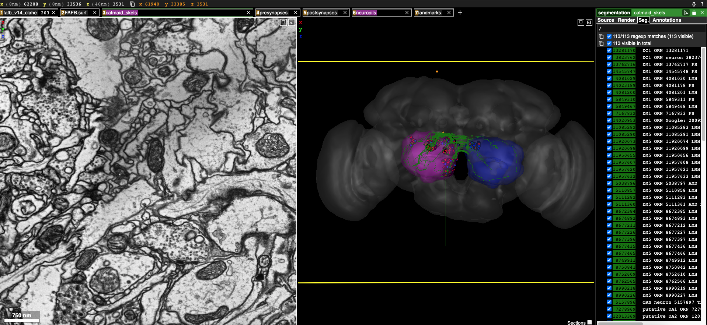

Creating sharded datasets with FAFB¶
This section contains example of creating sharded skeletons, meshes with FAFB¶
Import neccesary library modules now¶
[1]:
import navis
import fafbseg
import pymaid
[2]:
import pandas as pd
import numpy as np
import os
from copy import deepcopy
[3]:
from pyroglancer.layers import create_nglayer
from pyroglancer.localserver import startdataserver, closedataserver
from pyroglancer.ngviewer import openviewer, closeviewer
from pyroglancer.ngspaces import create_ngspace
from pyroglancer.createconfig import createconfig
Set configurations to fetch from data from CATMAID¶
[4]:
publicurl = 'https://fafb.catmaid.virtualflybrain.org/'
[5]:
working_rm = pymaid.CatmaidInstance(publicurl, api_token=None, project_id = 1)
INFO : Global CATMAID instance set. Caching is ON. (pymaid)
INFO - 2021-06-08 18:43:04,236 - client - Global CATMAID instance set. Caching is ON.
Get sample skids and neuropil meshes from CATMAID¶
[7]:
catmiad_neuronlist=pymaid.get_neuron('annotation:/\w+\sORN',
remote_instance = working_rm) #get anything that matches ORN..
INFO : Cached data used. Use `pymaid.clear_cache()` to clear. (pymaid)
INFO - 2021-06-08 18:43:19,096 - client - Cached data used. Use `pymaid.clear_cache()` to clear.
INFO : Cached data used. Use `pymaid.clear_cache()` to clear. (pymaid)
INFO - 2021-06-08 18:43:19,167 - client - Cached data used. Use `pymaid.clear_cache()` to clear.
INFO : Cached data used. Use `pymaid.clear_cache()` to clear. (pymaid)
INFO - 2021-06-08 18:43:19,201 - client - Cached data used. Use `pymaid.clear_cache()` to clear.
INFO : Cached data used. Use `pymaid.clear_cache()` to clear. (pymaid)
INFO - 2021-06-08 18:43:19,289 - client - Cached data used. Use `pymaid.clear_cache()` to clear.
[8]:
len(catmiad_neuronlist)
[8]:
113
[9]:
vols = pymaid.get_volume(['AL_L', 'AL_R'], color=(255, 0, 0, .2))
[10]:
vols['AL_R'].id = 200
vols['AL_L'].id = 300
vols
[10]:
{'AL_R': <navis.Volume(name=AL_R, id=200, color=(255, 0, 0, 0.2), vertices.shape=(622, 3), faces.shape=(1240, 3))>,
'AL_L': <navis.Volume(name=AL_L, id=300, color=(255, 0, 0, 0.2), vertices.shape=(612, 3), faces.shape=(1228, 3))>}
Start the dataserver to host precomputed data..¶
[11]:
startdataserver()
Serving data from: /var/folders/_l/lrfvj_8j3ps0c37ncbr3c8dh0000gn/T/tmpyeyfi0qh
Serving directory at http://127.0.0.1:8000
Start a basic neuroglancer local session with all FAFB configurations¶
[12]:
configdata = [dict(
ngspace='FAFB',
dimension=dict(x=1, y=1,z=1,units='um'),
voxelsize=dict(x=4,y=4,z=40,units='nm'),
layers=dict(
fafb_v14_clahe=dict(
type='image',
source='precomputed://gs://neuroglancer-fafb-data/fafb_v14/fafb_v14_clahe'),
fafb_surf=dict(
type='surfacemesh',
source='vtk://https://storage.googleapis.com/neuroglancer-fafb-data/elmr-data/FAFB.surf.vtk.gz'),
synapses_buhmann2019=dict(
type='synapsepred',
source='precomputed://gs://neuroglancer-20191211_fafbv14_buhmann2019_li20190805',
linkedseg='seg_20190805'),
seg_20190805=dict(
type='segmentation',
source='precomputed://gs://fafb-ffn1-20190805/segmentation',
))
)]
[13]:
configfileloc = '/Users/sri/.pyroglancer/config_temp.yml'
[14]:
createconfig(configdata, configfileloc, overwrite = True)
adding default config file..
setting default config file loc
[15]:
layer_kws = {'ngspace': 'FAFB'}
[16]:
create_ngspace(layer_kws)
config file loc is at: None
using default location at: /Users/sri/.pyroglancer/config_temp.yml
Neuroglancer viewer created at: http://127.0.0.1:54637/v/91f086c683de8adaf3f3180a7021d8062ae199e7/
config file loc is at: None
using default location at: /Users/sri/.pyroglancer/config_temp.yml
Dimensions are in : FAFB
Layer created: image
config file loc is at: None
using default location at: /Users/sri/.pyroglancer/config_temp.yml
Using layout : xy-3d
config file loc is at: None
using default location at: /Users/sri/.pyroglancer/config_temp.yml
Dimensions are in : FAFB
Layer created: surfacemesh
config file loc is at: None
using default location at: /Users/sri/.pyroglancer/config_temp.yml
Using layout : xy-3d
config file loc is at: None
using default location at: /Users/sri/.pyroglancer/config_temp.yml
Dimensions are in : FAFB
Layer created: synapsepred
config file loc is at: None
using default location at: /Users/sri/.pyroglancer/config_temp.yml
Using layout : xy-3d
config file loc is at: None
using default location at: /Users/sri/.pyroglancer/config_temp.yml
Dimensions are in : FAFB
Layer created: segmentation
config file loc is at: None
using default location at: /Users/sri/.pyroglancer/config_temp.yml
Using layout : xy-3d
Add skids to neuroglancer layers..¶
[17]:
tmpviewer = create_nglayer(layer_kws = {'type': 'skeletons',
'source': catmiad_neuronlist,
'name':'catmaid_skels',
'sharding': True,
'progress': True,
'color': 'green',
'alpha': 0.5})
config file loc is at: None
using default location at: /Users/sri/.pyroglancer/config_temp.yml
Dimensions are in : FAFB
Layer created: skeletons
Creating Shard Groupings: 100%|██████████| 113/113 [00:00<00:00, 54377.74it/s]
Synthesizing Shard Files: 100%|██████████| 77/77 [00:00<00:00, 22293.19it/s]
creating: /private/var/folders/_l/lrfvj_8j3ps0c37ncbr3c8dh0000gn/T/tmpyeyfi0qh/precomputed/catmaid_skels/skeletons/seg_props
Using layout : xy-3d
127.0.0.1 - - [08/Jun/2021 18:43:49] "GET /precomputed/catmaid_skels/skeletons/info HTTP/1.1" 200 -
127.0.0.1 - - [08/Jun/2021 18:43:49] "GET /precomputed/catmaid_skels/skeletons/seg_props/info HTTP/1.1" 200 -
Add synapses to neuroglancer layers..¶
[18]:
tmpviewer = create_nglayer(layer_kws = {'type': 'synapses',
'linked_layername': 'catmaid_skels',
'source': catmiad_neuronlist})
config file loc is at: None
using default location at: /Users/sri/.pyroglancer/config_temp.yml
Dimensions are in : FAFB
Layer created: synapses
config file loc is at: None
using default location at: /Users/sri/.pyroglancer/config_temp.yml
Dimensions are in : FAFB
flushing stuff..
presynapse stuff at: /private/var/folders/_l/lrfvj_8j3ps0c37ncbr3c8dh0000gn/T/tmpyeyfi0qh /precomputed/catmaid_skels/presynapses
postsynapse stuff at: /private/var/folders/_l/lrfvj_8j3ps0c37ncbr3c8dh0000gn/T/tmpyeyfi0qh /precomputed/catmaid_skels/postsynapses
synapses info path: /private/var/folders/_l/lrfvj_8j3ps0c37ncbr3c8dh0000gn/T/tmpyeyfi0qh/precomputed/catmaid_skels
creating: /private/var/folders/_l/lrfvj_8j3ps0c37ncbr3c8dh0000gn/T/tmpyeyfi0qh/precomputed/catmaid_skels/presynapses
creating: /private/var/folders/_l/lrfvj_8j3ps0c37ncbr3c8dh0000gn/T/tmpyeyfi0qh/precomputed/catmaid_skels/postsynapses
Adding neuron: 12013573
making: /private/var/folders/_l/lrfvj_8j3ps0c37ncbr3c8dh0000gn/T/tmpyeyfi0qh/precomputed/catmaid_skels/presynapses/presynapses_cell/12013573
making: /private/var/folders/_l/lrfvj_8j3ps0c37ncbr3c8dh0000gn/T/tmpyeyfi0qh/precomputed/catmaid_skels/postsynapses/postsynapses_cell/12013573
Adding neuron: 7363590
making: /private/var/folders/_l/lrfvj_8j3ps0c37ncbr3c8dh0000gn/T/tmpyeyfi0qh/precomputed/catmaid_skels/presynapses/presynapses_cell/7363590
making: /private/var/folders/_l/lrfvj_8j3ps0c37ncbr3c8dh0000gn/T/tmpyeyfi0qh/precomputed/catmaid_skels/postsynapses/postsynapses_cell/7363590
Adding neuron: 5157896
making: /private/var/folders/_l/lrfvj_8j3ps0c37ncbr3c8dh0000gn/T/tmpyeyfi0qh/precomputed/catmaid_skels/presynapses/presynapses_cell/5157896
making: /private/var/folders/_l/lrfvj_8j3ps0c37ncbr3c8dh0000gn/T/tmpyeyfi0qh/precomputed/catmaid_skels/postsynapses/postsynapses_cell/5157896
Adding neuron: 8990218
making: /private/var/folders/_l/lrfvj_8j3ps0c37ncbr3c8dh0000gn/T/tmpyeyfi0qh/precomputed/catmaid_skels/presynapses/presynapses_cell/8990218
making: /private/var/folders/_l/lrfvj_8j3ps0c37ncbr3c8dh0000gn/T/tmpyeyfi0qh/precomputed/catmaid_skels/postsynapses/postsynapses_cell/8990218
Adding neuron: 8990226
making: /private/var/folders/_l/lrfvj_8j3ps0c37ncbr3c8dh0000gn/T/tmpyeyfi0qh/precomputed/catmaid_skels/presynapses/presynapses_cell/8990226
making: /private/var/folders/_l/lrfvj_8j3ps0c37ncbr3c8dh0000gn/T/tmpyeyfi0qh/precomputed/catmaid_skels/postsynapses/postsynapses_cell/8990226
Adding neuron: 5533203
making: /private/var/folders/_l/lrfvj_8j3ps0c37ncbr3c8dh0000gn/T/tmpyeyfi0qh/precomputed/catmaid_skels/presynapses/presynapses_cell/5533203
making: /private/var/folders/_l/lrfvj_8j3ps0c37ncbr3c8dh0000gn/T/tmpyeyfi0qh/precomputed/catmaid_skels/postsynapses/postsynapses_cell/5533203
Adding neuron: 8677396
making: /private/var/folders/_l/lrfvj_8j3ps0c37ncbr3c8dh0000gn/T/tmpyeyfi0qh/precomputed/catmaid_skels/presynapses/presynapses_cell/8677396
making: /private/var/folders/_l/lrfvj_8j3ps0c37ncbr3c8dh0000gn/T/tmpyeyfi0qh/precomputed/catmaid_skels/postsynapses/postsynapses_cell/8677396
Adding neuron: 14023189
making: /private/var/folders/_l/lrfvj_8j3ps0c37ncbr3c8dh0000gn/T/tmpyeyfi0qh/precomputed/catmaid_skels/presynapses/presynapses_cell/14023189
making: /private/var/folders/_l/lrfvj_8j3ps0c37ncbr3c8dh0000gn/T/tmpyeyfi0qh/precomputed/catmaid_skels/postsynapses/postsynapses_cell/14023189
Adding neuron: 12863515
making: /private/var/folders/_l/lrfvj_8j3ps0c37ncbr3c8dh0000gn/T/tmpyeyfi0qh/precomputed/catmaid_skels/presynapses/presynapses_cell/12863515
making: /private/var/folders/_l/lrfvj_8j3ps0c37ncbr3c8dh0000gn/T/tmpyeyfi0qh/precomputed/catmaid_skels/postsynapses/postsynapses_cell/12863515
Adding neuron: 4081183
making: /private/var/folders/_l/lrfvj_8j3ps0c37ncbr3c8dh0000gn/T/tmpyeyfi0qh/precomputed/catmaid_skels/presynapses/presynapses_cell/4081183
making: /private/var/folders/_l/lrfvj_8j3ps0c37ncbr3c8dh0000gn/T/tmpyeyfi0qh/precomputed/catmaid_skels/postsynapses/postsynapses_cell/4081183
Adding neuron: 11858466
making: /private/var/folders/_l/lrfvj_8j3ps0c37ncbr3c8dh0000gn/T/tmpyeyfi0qh/precomputed/catmaid_skels/presynapses/presynapses_cell/11858466
making: /private/var/folders/_l/lrfvj_8j3ps0c37ncbr3c8dh0000gn/T/tmpyeyfi0qh/precomputed/catmaid_skels/postsynapses/postsynapses_cell/11858466
Adding neuron: 4081193
making: /private/var/folders/_l/lrfvj_8j3ps0c37ncbr3c8dh0000gn/T/tmpyeyfi0qh/precomputed/catmaid_skels/presynapses/presynapses_cell/4081193
making: /private/var/folders/_l/lrfvj_8j3ps0c37ncbr3c8dh0000gn/T/tmpyeyfi0qh/precomputed/catmaid_skels/postsynapses/postsynapses_cell/4081193
Adding neuron: 4081200
making: /private/var/folders/_l/lrfvj_8j3ps0c37ncbr3c8dh0000gn/T/tmpyeyfi0qh/precomputed/catmaid_skels/presynapses/presynapses_cell/4081200
making: /private/var/folders/_l/lrfvj_8j3ps0c37ncbr3c8dh0000gn/T/tmpyeyfi0qh/precomputed/catmaid_skels/postsynapses/postsynapses_cell/4081200
Adding neuron: 7337521
making: /private/var/folders/_l/lrfvj_8j3ps0c37ncbr3c8dh0000gn/T/tmpyeyfi0qh/precomputed/catmaid_skels/presynapses/presynapses_cell/7337521
making: /private/var/folders/_l/lrfvj_8j3ps0c37ncbr3c8dh0000gn/T/tmpyeyfi0qh/precomputed/catmaid_skels/postsynapses/postsynapses_cell/7337521
Adding neuron: 8543282
making: /private/var/folders/_l/lrfvj_8j3ps0c37ncbr3c8dh0000gn/T/tmpyeyfi0qh/precomputed/catmaid_skels/presynapses/presynapses_cell/8543282
making: /private/var/folders/_l/lrfvj_8j3ps0c37ncbr3c8dh0000gn/T/tmpyeyfi0qh/precomputed/catmaid_skels/postsynapses/postsynapses_cell/8543282
Adding neuron: 12029493
making: /private/var/folders/_l/lrfvj_8j3ps0c37ncbr3c8dh0000gn/T/tmpyeyfi0qh/precomputed/catmaid_skels/presynapses/presynapses_cell/12029493
making: /private/var/folders/_l/lrfvj_8j3ps0c37ncbr3c8dh0000gn/T/tmpyeyfi0qh/precomputed/catmaid_skels/postsynapses/postsynapses_cell/12029493
Adding neuron: 8727095
making: /private/var/folders/_l/lrfvj_8j3ps0c37ncbr3c8dh0000gn/T/tmpyeyfi0qh/precomputed/catmaid_skels/presynapses/presynapses_cell/8727095
making: /private/var/folders/_l/lrfvj_8j3ps0c37ncbr3c8dh0000gn/T/tmpyeyfi0qh/precomputed/catmaid_skels/postsynapses/postsynapses_cell/8727095
Adding neuron: 8677435
making: /private/var/folders/_l/lrfvj_8j3ps0c37ncbr3c8dh0000gn/T/tmpyeyfi0qh/precomputed/catmaid_skels/presynapses/presynapses_cell/8677435
making: /private/var/folders/_l/lrfvj_8j3ps0c37ncbr3c8dh0000gn/T/tmpyeyfi0qh/precomputed/catmaid_skels/postsynapses/postsynapses_cell/8677435
Adding neuron: 11950655
making: /private/var/folders/_l/lrfvj_8j3ps0c37ncbr3c8dh0000gn/T/tmpyeyfi0qh/precomputed/catmaid_skels/presynapses/presynapses_cell/11950655
making: /private/var/folders/_l/lrfvj_8j3ps0c37ncbr3c8dh0000gn/T/tmpyeyfi0qh/precomputed/catmaid_skels/postsynapses/postsynapses_cell/11950655
Adding neuron: 5111360
making: /private/var/folders/_l/lrfvj_8j3ps0c37ncbr3c8dh0000gn/T/tmpyeyfi0qh/precomputed/catmaid_skels/presynapses/presynapses_cell/5111360
making: /private/var/folders/_l/lrfvj_8j3ps0c37ncbr3c8dh0000gn/T/tmpyeyfi0qh/precomputed/catmaid_skels/postsynapses/postsynapses_cell/5111360
Adding neuron: 7349832
making: /private/var/folders/_l/lrfvj_8j3ps0c37ncbr3c8dh0000gn/T/tmpyeyfi0qh/precomputed/catmaid_skels/presynapses/presynapses_cell/7349832
making: /private/var/folders/_l/lrfvj_8j3ps0c37ncbr3c8dh0000gn/T/tmpyeyfi0qh/precomputed/catmaid_skels/postsynapses/postsynapses_cell/7349832
Adding neuron: 6715465
making: /private/var/folders/_l/lrfvj_8j3ps0c37ncbr3c8dh0000gn/T/tmpyeyfi0qh/precomputed/catmaid_skels/presynapses/presynapses_cell/6715465
making: /private/var/folders/_l/lrfvj_8j3ps0c37ncbr3c8dh0000gn/T/tmpyeyfi0qh/precomputed/catmaid_skels/postsynapses/postsynapses_cell/6715465
Adding neuron: 5110857
making: /private/var/folders/_l/lrfvj_8j3ps0c37ncbr3c8dh0000gn/T/tmpyeyfi0qh/precomputed/catmaid_skels/presynapses/presynapses_cell/5110857
making: /private/var/folders/_l/lrfvj_8j3ps0c37ncbr3c8dh0000gn/T/tmpyeyfi0qh/precomputed/catmaid_skels/postsynapses/postsynapses_cell/5110857
Adding neuron: 4095049
making: /private/var/folders/_l/lrfvj_8j3ps0c37ncbr3c8dh0000gn/T/tmpyeyfi0qh/precomputed/catmaid_skels/presynapses/presynapses_cell/4095049
making: /private/var/folders/_l/lrfvj_8j3ps0c37ncbr3c8dh0000gn/T/tmpyeyfi0qh/precomputed/catmaid_skels/postsynapses/postsynapses_cell/4095049
Adding neuron: 8674892
making: /private/var/folders/_l/lrfvj_8j3ps0c37ncbr3c8dh0000gn/T/tmpyeyfi0qh/precomputed/catmaid_skels/presynapses/presynapses_cell/8674892
making: /private/var/folders/_l/lrfvj_8j3ps0c37ncbr3c8dh0000gn/T/tmpyeyfi0qh/precomputed/catmaid_skels/postsynapses/postsynapses_cell/8674892
Adding neuron: 12859987
making: /private/var/folders/_l/lrfvj_8j3ps0c37ncbr3c8dh0000gn/T/tmpyeyfi0qh/precomputed/catmaid_skels/presynapses/presynapses_cell/12859987
making: /private/var/folders/_l/lrfvj_8j3ps0c37ncbr3c8dh0000gn/T/tmpyeyfi0qh/precomputed/catmaid_skels/postsynapses/postsynapses_cell/12859987
Adding neuron: 8411733
making: /private/var/folders/_l/lrfvj_8j3ps0c37ncbr3c8dh0000gn/T/tmpyeyfi0qh/precomputed/catmaid_skels/presynapses/presynapses_cell/8411733
making: /private/var/folders/_l/lrfvj_8j3ps0c37ncbr3c8dh0000gn/T/tmpyeyfi0qh/precomputed/catmaid_skels/postsynapses/postsynapses_cell/8411733
Adding neuron: 8677465
making: /private/var/folders/_l/lrfvj_8j3ps0c37ncbr3c8dh0000gn/T/tmpyeyfi0qh/precomputed/catmaid_skels/presynapses/presynapses_cell/8677465
making: /private/var/folders/_l/lrfvj_8j3ps0c37ncbr3c8dh0000gn/T/tmpyeyfi0qh/precomputed/catmaid_skels/postsynapses/postsynapses_cell/8677465
Adding neuron: 8929885
making: /private/var/folders/_l/lrfvj_8j3ps0c37ncbr3c8dh0000gn/T/tmpyeyfi0qh/precomputed/catmaid_skels/presynapses/presynapses_cell/8929885
making: /private/var/folders/_l/lrfvj_8j3ps0c37ncbr3c8dh0000gn/T/tmpyeyfi0qh/precomputed/catmaid_skels/postsynapses/postsynapses_cell/8929885
Adding neuron: 8490593
making: /private/var/folders/_l/lrfvj_8j3ps0c37ncbr3c8dh0000gn/T/tmpyeyfi0qh/precomputed/catmaid_skels/presynapses/presynapses_cell/8490593
making: /private/var/folders/_l/lrfvj_8j3ps0c37ncbr3c8dh0000gn/T/tmpyeyfi0qh/precomputed/catmaid_skels/postsynapses/postsynapses_cell/8490593
Adding neuron: 7349865
making: /private/var/folders/_l/lrfvj_8j3ps0c37ncbr3c8dh0000gn/T/tmpyeyfi0qh/precomputed/catmaid_skels/presynapses/presynapses_cell/7349865
making: /private/var/folders/_l/lrfvj_8j3ps0c37ncbr3c8dh0000gn/T/tmpyeyfi0qh/precomputed/catmaid_skels/postsynapses/postsynapses_cell/7349865
Adding neuron: 7349870
making: /private/var/folders/_l/lrfvj_8j3ps0c37ncbr3c8dh0000gn/T/tmpyeyfi0qh/precomputed/catmaid_skels/presynapses/presynapses_cell/7349870
making: /private/var/folders/_l/lrfvj_8j3ps0c37ncbr3c8dh0000gn/T/tmpyeyfi0qh/precomputed/catmaid_skels/postsynapses/postsynapses_cell/7349870
Adding neuron: 8490608
making: /private/var/folders/_l/lrfvj_8j3ps0c37ncbr3c8dh0000gn/T/tmpyeyfi0qh/precomputed/catmaid_skels/presynapses/presynapses_cell/8490608
making: /private/var/folders/_l/lrfvj_8j3ps0c37ncbr3c8dh0000gn/T/tmpyeyfi0qh/precomputed/catmaid_skels/postsynapses/postsynapses_cell/8490608
Adding neuron: 7179380
making: /private/var/folders/_l/lrfvj_8j3ps0c37ncbr3c8dh0000gn/T/tmpyeyfi0qh/precomputed/catmaid_skels/presynapses/presynapses_cell/7179380
making: /private/var/folders/_l/lrfvj_8j3ps0c37ncbr3c8dh0000gn/T/tmpyeyfi0qh/precomputed/catmaid_skels/postsynapses/postsynapses_cell/7179380
Adding neuron: 3808894
making: /private/var/folders/_l/lrfvj_8j3ps0c37ncbr3c8dh0000gn/T/tmpyeyfi0qh/precomputed/catmaid_skels/presynapses/presynapses_cell/3808894
making: /private/var/folders/_l/lrfvj_8j3ps0c37ncbr3c8dh0000gn/T/tmpyeyfi0qh/precomputed/catmaid_skels/postsynapses/postsynapses_cell/3808894
Adding neuron: 8672384
making: /private/var/folders/_l/lrfvj_8j3ps0c37ncbr3c8dh0000gn/T/tmpyeyfi0qh/precomputed/catmaid_skels/presynapses/presynapses_cell/8672384
making: /private/var/folders/_l/lrfvj_8j3ps0c37ncbr3c8dh0000gn/T/tmpyeyfi0qh/precomputed/catmaid_skels/postsynapses/postsynapses_cell/8672384
Adding neuron: 11774082
making: /private/var/folders/_l/lrfvj_8j3ps0c37ncbr3c8dh0000gn/T/tmpyeyfi0qh/precomputed/catmaid_skels/presynapses/presynapses_cell/11774082
making: /private/var/folders/_l/lrfvj_8j3ps0c37ncbr3c8dh0000gn/T/tmpyeyfi0qh/precomputed/catmaid_skels/postsynapses/postsynapses_cell/11774082
Adding neuron: 8490628
making: /private/var/folders/_l/lrfvj_8j3ps0c37ncbr3c8dh0000gn/T/tmpyeyfi0qh/precomputed/catmaid_skels/presynapses/presynapses_cell/8490628
making: /private/var/folders/_l/lrfvj_8j3ps0c37ncbr3c8dh0000gn/T/tmpyeyfi0qh/precomputed/catmaid_skels/postsynapses/postsynapses_cell/8490628
Adding neuron: 3808901
making: /private/var/folders/_l/lrfvj_8j3ps0c37ncbr3c8dh0000gn/T/tmpyeyfi0qh/precomputed/catmaid_skels/presynapses/presynapses_cell/3808901
making: /private/var/folders/_l/lrfvj_8j3ps0c37ncbr3c8dh0000gn/T/tmpyeyfi0qh/precomputed/catmaid_skels/postsynapses/postsynapses_cell/3808901
Adding neuron: 8490635
making: /private/var/folders/_l/lrfvj_8j3ps0c37ncbr3c8dh0000gn/T/tmpyeyfi0qh/precomputed/catmaid_skels/presynapses/presynapses_cell/8490635
making: /private/var/folders/_l/lrfvj_8j3ps0c37ncbr3c8dh0000gn/T/tmpyeyfi0qh/precomputed/catmaid_skels/postsynapses/postsynapses_cell/8490635
Adding neuron: 5164684
making: /private/var/folders/_l/lrfvj_8j3ps0c37ncbr3c8dh0000gn/T/tmpyeyfi0qh/precomputed/catmaid_skels/presynapses/presynapses_cell/5164684
making: /private/var/folders/_l/lrfvj_8j3ps0c37ncbr3c8dh0000gn/T/tmpyeyfi0qh/precomputed/catmaid_skels/postsynapses/postsynapses_cell/5164684
Adding neuron: 8727184
making: /private/var/folders/_l/lrfvj_8j3ps0c37ncbr3c8dh0000gn/T/tmpyeyfi0qh/precomputed/catmaid_skels/presynapses/presynapses_cell/8727184
making: /private/var/folders/_l/lrfvj_8j3ps0c37ncbr3c8dh0000gn/T/tmpyeyfi0qh/precomputed/catmaid_skels/postsynapses/postsynapses_cell/8727184
Adding neuron: 7365266
making: /private/var/folders/_l/lrfvj_8j3ps0c37ncbr3c8dh0000gn/T/tmpyeyfi0qh/precomputed/catmaid_skels/presynapses/presynapses_cell/7365266
making: /private/var/folders/_l/lrfvj_8j3ps0c37ncbr3c8dh0000gn/T/tmpyeyfi0qh/precomputed/catmaid_skels/postsynapses/postsynapses_cell/7365266
Adding neuron: 3823762
making: /private/var/folders/_l/lrfvj_8j3ps0c37ncbr3c8dh0000gn/T/tmpyeyfi0qh/precomputed/catmaid_skels/presynapses/presynapses_cell/3823762
making: /private/var/folders/_l/lrfvj_8j3ps0c37ncbr3c8dh0000gn/T/tmpyeyfi0qh/precomputed/catmaid_skels/postsynapses/postsynapses_cell/3823762
Adding neuron: 11720855
making: /private/var/folders/_l/lrfvj_8j3ps0c37ncbr3c8dh0000gn/T/tmpyeyfi0qh/precomputed/catmaid_skels/presynapses/presynapses_cell/11720855
making: /private/var/folders/_l/lrfvj_8j3ps0c37ncbr3c8dh0000gn/T/tmpyeyfi0qh/precomputed/catmaid_skels/postsynapses/postsynapses_cell/11720855
Adding neuron: 13762716
making: /private/var/folders/_l/lrfvj_8j3ps0c37ncbr3c8dh0000gn/T/tmpyeyfi0qh/precomputed/catmaid_skels/presynapses/presynapses_cell/13762716
making: /private/var/folders/_l/lrfvj_8j3ps0c37ncbr3c8dh0000gn/T/tmpyeyfi0qh/precomputed/catmaid_skels/postsynapses/postsynapses_cell/13762716
Adding neuron: 11720861
making: /private/var/folders/_l/lrfvj_8j3ps0c37ncbr3c8dh0000gn/T/tmpyeyfi0qh/precomputed/catmaid_skels/presynapses/presynapses_cell/11720861
making: /private/var/folders/_l/lrfvj_8j3ps0c37ncbr3c8dh0000gn/T/tmpyeyfi0qh/precomputed/catmaid_skels/postsynapses/postsynapses_cell/11720861
Adding neuron: 1989293
making: /private/var/folders/_l/lrfvj_8j3ps0c37ncbr3c8dh0000gn/T/tmpyeyfi0qh/precomputed/catmaid_skels/presynapses/presynapses_cell/1989293
making: /private/var/folders/_l/lrfvj_8j3ps0c37ncbr3c8dh0000gn/T/tmpyeyfi0qh/precomputed/catmaid_skels/postsynapses/postsynapses_cell/1989293
Adding neuron: 3802286
making: /private/var/folders/_l/lrfvj_8j3ps0c37ncbr3c8dh0000gn/T/tmpyeyfi0qh/precomputed/catmaid_skels/presynapses/presynapses_cell/3802286
making: /private/var/folders/_l/lrfvj_8j3ps0c37ncbr3c8dh0000gn/T/tmpyeyfi0qh/precomputed/catmaid_skels/postsynapses/postsynapses_cell/3802286
Adding neuron: 8382638
making: /private/var/folders/_l/lrfvj_8j3ps0c37ncbr3c8dh0000gn/T/tmpyeyfi0qh/precomputed/catmaid_skels/presynapses/presynapses_cell/8382638
making: /private/var/folders/_l/lrfvj_8j3ps0c37ncbr3c8dh0000gn/T/tmpyeyfi0qh/precomputed/catmaid_skels/postsynapses/postsynapses_cell/8382638
Adding neuron: 3823793
making: /private/var/folders/_l/lrfvj_8j3ps0c37ncbr3c8dh0000gn/T/tmpyeyfi0qh/precomputed/catmaid_skels/presynapses/presynapses_cell/3823793
making: /private/var/folders/_l/lrfvj_8j3ps0c37ncbr3c8dh0000gn/T/tmpyeyfi0qh/precomputed/catmaid_skels/postsynapses/postsynapses_cell/3823793
Adding neuron: 8382644
making: /private/var/folders/_l/lrfvj_8j3ps0c37ncbr3c8dh0000gn/T/tmpyeyfi0qh/precomputed/catmaid_skels/presynapses/presynapses_cell/8382644
making: /private/var/folders/_l/lrfvj_8j3ps0c37ncbr3c8dh0000gn/T/tmpyeyfi0qh/precomputed/catmaid_skels/postsynapses/postsynapses_cell/8382644
Adding neuron: 8382651
making: /private/var/folders/_l/lrfvj_8j3ps0c37ncbr3c8dh0000gn/T/tmpyeyfi0qh/precomputed/catmaid_skels/presynapses/presynapses_cell/8382651
making: /private/var/folders/_l/lrfvj_8j3ps0c37ncbr3c8dh0000gn/T/tmpyeyfi0qh/precomputed/catmaid_skels/postsynapses/postsynapses_cell/8382651
Adding neuron: 5158081
making: /private/var/folders/_l/lrfvj_8j3ps0c37ncbr3c8dh0000gn/T/tmpyeyfi0qh/precomputed/catmaid_skels/presynapses/presynapses_cell/5158081
making: /private/var/folders/_l/lrfvj_8j3ps0c37ncbr3c8dh0000gn/T/tmpyeyfi0qh/precomputed/catmaid_skels/postsynapses/postsynapses_cell/5158081
Adding neuron: 8552643
making: /private/var/folders/_l/lrfvj_8j3ps0c37ncbr3c8dh0000gn/T/tmpyeyfi0qh/precomputed/catmaid_skels/presynapses/presynapses_cell/8552643
making: /private/var/folders/_l/lrfvj_8j3ps0c37ncbr3c8dh0000gn/T/tmpyeyfi0qh/precomputed/catmaid_skels/postsynapses/postsynapses_cell/8552643
Adding neuron: 8762565
making: /private/var/folders/_l/lrfvj_8j3ps0c37ncbr3c8dh0000gn/T/tmpyeyfi0qh/precomputed/catmaid_skels/presynapses/presynapses_cell/8762565
making: /private/var/folders/_l/lrfvj_8j3ps0c37ncbr3c8dh0000gn/T/tmpyeyfi0qh/precomputed/catmaid_skels/postsynapses/postsynapses_cell/8762565
Adding neuron: 11920073
making: /private/var/folders/_l/lrfvj_8j3ps0c37ncbr3c8dh0000gn/T/tmpyeyfi0qh/precomputed/catmaid_skels/presynapses/presynapses_cell/11920073
making: /private/var/folders/_l/lrfvj_8j3ps0c37ncbr3c8dh0000gn/T/tmpyeyfi0qh/precomputed/catmaid_skels/postsynapses/postsynapses_cell/11920073
Adding neuron: 6535884
making: /private/var/folders/_l/lrfvj_8j3ps0c37ncbr3c8dh0000gn/T/tmpyeyfi0qh/precomputed/catmaid_skels/presynapses/presynapses_cell/6535884
making: /private/var/folders/_l/lrfvj_8j3ps0c37ncbr3c8dh0000gn/T/tmpyeyfi0qh/precomputed/catmaid_skels/postsynapses/postsynapses_cell/6535884
Adding neuron: 5038796
making: /private/var/folders/_l/lrfvj_8j3ps0c37ncbr3c8dh0000gn/T/tmpyeyfi0qh/precomputed/catmaid_skels/presynapses/presynapses_cell/5038796
making: /private/var/folders/_l/lrfvj_8j3ps0c37ncbr3c8dh0000gn/T/tmpyeyfi0qh/precomputed/catmaid_skels/postsynapses/postsynapses_cell/5038796
Adding neuron: 7961811
making: /private/var/folders/_l/lrfvj_8j3ps0c37ncbr3c8dh0000gn/T/tmpyeyfi0qh/precomputed/catmaid_skels/presynapses/presynapses_cell/7961811
making: /private/var/folders/_l/lrfvj_8j3ps0c37ncbr3c8dh0000gn/T/tmpyeyfi0qh/precomputed/catmaid_skels/postsynapses/postsynapses_cell/7961811
Adding neuron: 3823828
making: /private/var/folders/_l/lrfvj_8j3ps0c37ncbr3c8dh0000gn/T/tmpyeyfi0qh/precomputed/catmaid_skels/presynapses/presynapses_cell/3823828
making: /private/var/folders/_l/lrfvj_8j3ps0c37ncbr3c8dh0000gn/T/tmpyeyfi0qh/precomputed/catmaid_skels/postsynapses/postsynapses_cell/3823828
Adding neuron: 12024537
making: /private/var/folders/_l/lrfvj_8j3ps0c37ncbr3c8dh0000gn/T/tmpyeyfi0qh/precomputed/catmaid_skels/presynapses/presynapses_cell/12024537
making: /private/var/folders/_l/lrfvj_8j3ps0c37ncbr3c8dh0000gn/T/tmpyeyfi0qh/precomputed/catmaid_skels/postsynapses/postsynapses_cell/12024537
Adding neuron: 5849310
making: /private/var/folders/_l/lrfvj_8j3ps0c37ncbr3c8dh0000gn/T/tmpyeyfi0qh/precomputed/catmaid_skels/presynapses/presynapses_cell/5849310
making: /private/var/folders/_l/lrfvj_8j3ps0c37ncbr3c8dh0000gn/T/tmpyeyfi0qh/precomputed/catmaid_skels/postsynapses/postsynapses_cell/5849310
Adding neuron: 8736990
making: /private/var/folders/_l/lrfvj_8j3ps0c37ncbr3c8dh0000gn/T/tmpyeyfi0qh/precomputed/catmaid_skels/presynapses/presynapses_cell/8736990
making: /private/var/folders/_l/lrfvj_8j3ps0c37ncbr3c8dh0000gn/T/tmpyeyfi0qh/precomputed/catmaid_skels/postsynapses/postsynapses_cell/8736990
Adding neuron: 3823842
making: /private/var/folders/_l/lrfvj_8j3ps0c37ncbr3c8dh0000gn/T/tmpyeyfi0qh/precomputed/catmaid_skels/presynapses/presynapses_cell/3823842
making: /private/var/folders/_l/lrfvj_8j3ps0c37ncbr3c8dh0000gn/T/tmpyeyfi0qh/precomputed/catmaid_skels/postsynapses/postsynapses_cell/3823842
Adding neuron: 11920098
making: /private/var/folders/_l/lrfvj_8j3ps0c37ncbr3c8dh0000gn/T/tmpyeyfi0qh/precomputed/catmaid_skels/presynapses/presynapses_cell/11920098
making: /private/var/folders/_l/lrfvj_8j3ps0c37ncbr3c8dh0000gn/T/tmpyeyfi0qh/precomputed/catmaid_skels/postsynapses/postsynapses_cell/11920098
Adding neuron: 7179492
making: /private/var/folders/_l/lrfvj_8j3ps0c37ncbr3c8dh0000gn/T/tmpyeyfi0qh/precomputed/catmaid_skels/presynapses/presynapses_cell/7179492
making: /private/var/folders/_l/lrfvj_8j3ps0c37ncbr3c8dh0000gn/T/tmpyeyfi0qh/precomputed/catmaid_skels/postsynapses/postsynapses_cell/7179492
Adding neuron: 12867308
making: /private/var/folders/_l/lrfvj_8j3ps0c37ncbr3c8dh0000gn/T/tmpyeyfi0qh/precomputed/catmaid_skels/presynapses/presynapses_cell/12867308
making: /private/var/folders/_l/lrfvj_8j3ps0c37ncbr3c8dh0000gn/T/tmpyeyfi0qh/precomputed/catmaid_skels/postsynapses/postsynapses_cell/12867308
Adding neuron: 7179501
making: /private/var/folders/_l/lrfvj_8j3ps0c37ncbr3c8dh0000gn/T/tmpyeyfi0qh/precomputed/catmaid_skels/presynapses/presynapses_cell/7179501
making: /private/var/folders/_l/lrfvj_8j3ps0c37ncbr3c8dh0000gn/T/tmpyeyfi0qh/precomputed/catmaid_skels/postsynapses/postsynapses_cell/7179501
Adding neuron: 1783540
making: /private/var/folders/_l/lrfvj_8j3ps0c37ncbr3c8dh0000gn/T/tmpyeyfi0qh/precomputed/catmaid_skels/presynapses/presynapses_cell/1783540
making: /private/var/folders/_l/lrfvj_8j3ps0c37ncbr3c8dh0000gn/T/tmpyeyfi0qh/precomputed/catmaid_skels/postsynapses/postsynapses_cell/1783540
Adding neuron: 8750841
making: /private/var/folders/_l/lrfvj_8j3ps0c37ncbr3c8dh0000gn/T/tmpyeyfi0qh/precomputed/catmaid_skels/presynapses/presynapses_cell/8750841
making: /private/var/folders/_l/lrfvj_8j3ps0c37ncbr3c8dh0000gn/T/tmpyeyfi0qh/precomputed/catmaid_skels/postsynapses/postsynapses_cell/8750841
Adding neuron: 6128900
making: /private/var/folders/_l/lrfvj_8j3ps0c37ncbr3c8dh0000gn/T/tmpyeyfi0qh/precomputed/catmaid_skels/presynapses/presynapses_cell/6128900
making: /private/var/folders/_l/lrfvj_8j3ps0c37ncbr3c8dh0000gn/T/tmpyeyfi0qh/precomputed/catmaid_skels/postsynapses/postsynapses_cell/6128900
Adding neuron: 11673863
making: /private/var/folders/_l/lrfvj_8j3ps0c37ncbr3c8dh0000gn/T/tmpyeyfi0qh/precomputed/catmaid_skels/presynapses/presynapses_cell/11673863
making: /private/var/folders/_l/lrfvj_8j3ps0c37ncbr3c8dh0000gn/T/tmpyeyfi0qh/precomputed/catmaid_skels/postsynapses/postsynapses_cell/11673863
Adding neuron: 5184269
making: /private/var/folders/_l/lrfvj_8j3ps0c37ncbr3c8dh0000gn/T/tmpyeyfi0qh/precomputed/catmaid_skels/presynapses/presynapses_cell/5184269
making: /private/var/folders/_l/lrfvj_8j3ps0c37ncbr3c8dh0000gn/T/tmpyeyfi0qh/precomputed/catmaid_skels/postsynapses/postsynapses_cell/5184269
Adding neuron: 11673877
making: /private/var/folders/_l/lrfvj_8j3ps0c37ncbr3c8dh0000gn/T/tmpyeyfi0qh/precomputed/catmaid_skels/presynapses/presynapses_cell/11673877
making: /private/var/folders/_l/lrfvj_8j3ps0c37ncbr3c8dh0000gn/T/tmpyeyfi0qh/precomputed/catmaid_skels/postsynapses/postsynapses_cell/11673877
Adding neuron: 7179547
making: /private/var/folders/_l/lrfvj_8j3ps0c37ncbr3c8dh0000gn/T/tmpyeyfi0qh/precomputed/catmaid_skels/presynapses/presynapses_cell/7179547
making: /private/var/folders/_l/lrfvj_8j3ps0c37ncbr3c8dh0000gn/T/tmpyeyfi0qh/precomputed/catmaid_skels/postsynapses/postsynapses_cell/7179547
Adding neuron: 6621981
making: /private/var/folders/_l/lrfvj_8j3ps0c37ncbr3c8dh0000gn/T/tmpyeyfi0qh/precomputed/catmaid_skels/presynapses/presynapses_cell/6621981
making: /private/var/folders/_l/lrfvj_8j3ps0c37ncbr3c8dh0000gn/T/tmpyeyfi0qh/precomputed/catmaid_skels/postsynapses/postsynapses_cell/6621981
Adding neuron: 11161904
making: /private/var/folders/_l/lrfvj_8j3ps0c37ncbr3c8dh0000gn/T/tmpyeyfi0qh/precomputed/catmaid_skels/presynapses/presynapses_cell/11161904
making: /private/var/folders/_l/lrfvj_8j3ps0c37ncbr3c8dh0000gn/T/tmpyeyfi0qh/precomputed/catmaid_skels/postsynapses/postsynapses_cell/11161904
Adding neuron: 8552754
making: /private/var/folders/_l/lrfvj_8j3ps0c37ncbr3c8dh0000gn/T/tmpyeyfi0qh/precomputed/catmaid_skels/presynapses/presynapses_cell/8552754
making: /private/var/folders/_l/lrfvj_8j3ps0c37ncbr3c8dh0000gn/T/tmpyeyfi0qh/precomputed/catmaid_skels/postsynapses/postsynapses_cell/8552754
Adding neuron: 4079928
making: /private/var/folders/_l/lrfvj_8j3ps0c37ncbr3c8dh0000gn/T/tmpyeyfi0qh/precomputed/catmaid_skels/presynapses/presynapses_cell/4079928
making: /private/var/folders/_l/lrfvj_8j3ps0c37ncbr3c8dh0000gn/T/tmpyeyfi0qh/precomputed/catmaid_skels/postsynapses/postsynapses_cell/4079928
Adding neuron: 7363897
making: /private/var/folders/_l/lrfvj_8j3ps0c37ncbr3c8dh0000gn/T/tmpyeyfi0qh/precomputed/catmaid_skels/presynapses/presynapses_cell/7363897
making: /private/var/folders/_l/lrfvj_8j3ps0c37ncbr3c8dh0000gn/T/tmpyeyfi0qh/precomputed/catmaid_skels/postsynapses/postsynapses_cell/7363897
Adding neuron: 12013369
making: /private/var/folders/_l/lrfvj_8j3ps0c37ncbr3c8dh0000gn/T/tmpyeyfi0qh/precomputed/catmaid_skels/presynapses/presynapses_cell/12013369
making: /private/var/folders/_l/lrfvj_8j3ps0c37ncbr3c8dh0000gn/T/tmpyeyfi0qh/precomputed/catmaid_skels/postsynapses/postsynapses_cell/12013369
Adding neuron: 7490384
making: /private/var/folders/_l/lrfvj_8j3ps0c37ncbr3c8dh0000gn/T/tmpyeyfi0qh/precomputed/catmaid_skels/presynapses/presynapses_cell/7490384
making: /private/var/folders/_l/lrfvj_8j3ps0c37ncbr3c8dh0000gn/T/tmpyeyfi0qh/precomputed/catmaid_skels/postsynapses/postsynapses_cell/7490384
Adding neuron: 14545747
making: /private/var/folders/_l/lrfvj_8j3ps0c37ncbr3c8dh0000gn/T/tmpyeyfi0qh/precomputed/catmaid_skels/presynapses/presynapses_cell/14545747
making: /private/var/folders/_l/lrfvj_8j3ps0c37ncbr3c8dh0000gn/T/tmpyeyfi0qh/precomputed/catmaid_skels/postsynapses/postsynapses_cell/14545747
Adding neuron: 8749911
making: /private/var/folders/_l/lrfvj_8j3ps0c37ncbr3c8dh0000gn/T/tmpyeyfi0qh/precomputed/catmaid_skels/presynapses/presynapses_cell/8749911
making: /private/var/folders/_l/lrfvj_8j3ps0c37ncbr3c8dh0000gn/T/tmpyeyfi0qh/precomputed/catmaid_skels/postsynapses/postsynapses_cell/8749911
Adding neuron: 7167832
making: /private/var/folders/_l/lrfvj_8j3ps0c37ncbr3c8dh0000gn/T/tmpyeyfi0qh/precomputed/catmaid_skels/presynapses/presynapses_cell/7167832
making: /private/var/folders/_l/lrfvj_8j3ps0c37ncbr3c8dh0000gn/T/tmpyeyfi0qh/precomputed/catmaid_skels/postsynapses/postsynapses_cell/7167832
Adding neuron: 14020953
making: /private/var/folders/_l/lrfvj_8j3ps0c37ncbr3c8dh0000gn/T/tmpyeyfi0qh/precomputed/catmaid_skels/presynapses/presynapses_cell/14020953
making: /private/var/folders/_l/lrfvj_8j3ps0c37ncbr3c8dh0000gn/T/tmpyeyfi0qh/precomputed/catmaid_skels/postsynapses/postsynapses_cell/14020953
Adding neuron: 8677211
making: /private/var/folders/_l/lrfvj_8j3ps0c37ncbr3c8dh0000gn/T/tmpyeyfi0qh/precomputed/catmaid_skels/presynapses/presynapses_cell/8677211
making: /private/var/folders/_l/lrfvj_8j3ps0c37ncbr3c8dh0000gn/T/tmpyeyfi0qh/precomputed/catmaid_skels/postsynapses/postsynapses_cell/8677211
Adding neuron: 7179613
making: /private/var/folders/_l/lrfvj_8j3ps0c37ncbr3c8dh0000gn/T/tmpyeyfi0qh/precomputed/catmaid_skels/presynapses/presynapses_cell/7179613
making: /private/var/folders/_l/lrfvj_8j3ps0c37ncbr3c8dh0000gn/T/tmpyeyfi0qh/precomputed/catmaid_skels/postsynapses/postsynapses_cell/7179613
Adding neuron: 10133855
making: /private/var/folders/_l/lrfvj_8j3ps0c37ncbr3c8dh0000gn/T/tmpyeyfi0qh/precomputed/catmaid_skels/presynapses/presynapses_cell/10133855
making: /private/var/folders/_l/lrfvj_8j3ps0c37ncbr3c8dh0000gn/T/tmpyeyfi0qh/precomputed/catmaid_skels/postsynapses/postsynapses_cell/10133855
Adding neuron: 8594279
making: /private/var/folders/_l/lrfvj_8j3ps0c37ncbr3c8dh0000gn/T/tmpyeyfi0qh/precomputed/catmaid_skels/presynapses/presynapses_cell/8594279
making: /private/var/folders/_l/lrfvj_8j3ps0c37ncbr3c8dh0000gn/T/tmpyeyfi0qh/precomputed/catmaid_skels/postsynapses/postsynapses_cell/8594279
Adding neuron: 11957607
making: /private/var/folders/_l/lrfvj_8j3ps0c37ncbr3c8dh0000gn/T/tmpyeyfi0qh/precomputed/catmaid_skels/presynapses/presynapses_cell/11957607
making: /private/var/folders/_l/lrfvj_8j3ps0c37ncbr3c8dh0000gn/T/tmpyeyfi0qh/precomputed/catmaid_skels/postsynapses/postsynapses_cell/11957607
Adding neuron: 8677226
making: /private/var/folders/_l/lrfvj_8j3ps0c37ncbr3c8dh0000gn/T/tmpyeyfi0qh/precomputed/catmaid_skels/presynapses/presynapses_cell/8677226
making: /private/var/folders/_l/lrfvj_8j3ps0c37ncbr3c8dh0000gn/T/tmpyeyfi0qh/precomputed/catmaid_skels/postsynapses/postsynapses_cell/8677226
Adding neuron: 7490413
making: /private/var/folders/_l/lrfvj_8j3ps0c37ncbr3c8dh0000gn/T/tmpyeyfi0qh/precomputed/catmaid_skels/presynapses/presynapses_cell/7490413
making: /private/var/folders/_l/lrfvj_8j3ps0c37ncbr3c8dh0000gn/T/tmpyeyfi0qh/precomputed/catmaid_skels/postsynapses/postsynapses_cell/7490413
Adding neuron: 11957620
making: /private/var/folders/_l/lrfvj_8j3ps0c37ncbr3c8dh0000gn/T/tmpyeyfi0qh/precomputed/catmaid_skels/presynapses/presynapses_cell/11957620
making: /private/var/folders/_l/lrfvj_8j3ps0c37ncbr3c8dh0000gn/T/tmpyeyfi0qh/precomputed/catmaid_skels/postsynapses/postsynapses_cell/11957620
Adding neuron: 1989493
making: /private/var/folders/_l/lrfvj_8j3ps0c37ncbr3c8dh0000gn/T/tmpyeyfi0qh/precomputed/catmaid_skels/presynapses/presynapses_cell/1989493
making: /private/var/folders/_l/lrfvj_8j3ps0c37ncbr3c8dh0000gn/T/tmpyeyfi0qh/precomputed/catmaid_skels/postsynapses/postsynapses_cell/1989493
Adding neuron: 7278969
making: /private/var/folders/_l/lrfvj_8j3ps0c37ncbr3c8dh0000gn/T/tmpyeyfi0qh/precomputed/catmaid_skels/presynapses/presynapses_cell/7278969
making: /private/var/folders/_l/lrfvj_8j3ps0c37ncbr3c8dh0000gn/T/tmpyeyfi0qh/precomputed/catmaid_skels/postsynapses/postsynapses_cell/7278969
Adding neuron: 5530489
making: /private/var/folders/_l/lrfvj_8j3ps0c37ncbr3c8dh0000gn/T/tmpyeyfi0qh/precomputed/catmaid_skels/presynapses/presynapses_cell/5530489
making: /private/var/folders/_l/lrfvj_8j3ps0c37ncbr3c8dh0000gn/T/tmpyeyfi0qh/precomputed/catmaid_skels/postsynapses/postsynapses_cell/5530489
Adding neuron: 5849467
making: /private/var/folders/_l/lrfvj_8j3ps0c37ncbr3c8dh0000gn/T/tmpyeyfi0qh/precomputed/catmaid_skels/presynapses/presynapses_cell/5849467
making: /private/var/folders/_l/lrfvj_8j3ps0c37ncbr3c8dh0000gn/T/tmpyeyfi0qh/precomputed/catmaid_skels/postsynapses/postsynapses_cell/5849467
Adding neuron: 11957632
making: /private/var/folders/_l/lrfvj_8j3ps0c37ncbr3c8dh0000gn/T/tmpyeyfi0qh/precomputed/catmaid_skels/presynapses/presynapses_cell/11957632
making: /private/var/folders/_l/lrfvj_8j3ps0c37ncbr3c8dh0000gn/T/tmpyeyfi0qh/precomputed/catmaid_skels/postsynapses/postsynapses_cell/11957632
Adding neuron: 4081029
making: /private/var/folders/_l/lrfvj_8j3ps0c37ncbr3c8dh0000gn/T/tmpyeyfi0qh/precomputed/catmaid_skels/presynapses/presynapses_cell/4081029
making: /private/var/folders/_l/lrfvj_8j3ps0c37ncbr3c8dh0000gn/T/tmpyeyfi0qh/precomputed/catmaid_skels/postsynapses/postsynapses_cell/4081029
Adding neuron: 13281170
making: /private/var/folders/_l/lrfvj_8j3ps0c37ncbr3c8dh0000gn/T/tmpyeyfi0qh/precomputed/catmaid_skels/presynapses/presynapses_cell/13281170
making: /private/var/folders/_l/lrfvj_8j3ps0c37ncbr3c8dh0000gn/T/tmpyeyfi0qh/precomputed/catmaid_skels/postsynapses/postsynapses_cell/13281170
Adding neuron: 7462291
making: /private/var/folders/_l/lrfvj_8j3ps0c37ncbr3c8dh0000gn/T/tmpyeyfi0qh/precomputed/catmaid_skels/presynapses/presynapses_cell/7462291
making: /private/var/folders/_l/lrfvj_8j3ps0c37ncbr3c8dh0000gn/T/tmpyeyfi0qh/precomputed/catmaid_skels/postsynapses/postsynapses_cell/7462291
Adding neuron: 7161775
making: /private/var/folders/_l/lrfvj_8j3ps0c37ncbr3c8dh0000gn/T/tmpyeyfi0qh/precomputed/catmaid_skels/presynapses/presynapses_cell/7161775
making: /private/var/folders/_l/lrfvj_8j3ps0c37ncbr3c8dh0000gn/T/tmpyeyfi0qh/precomputed/catmaid_skels/postsynapses/postsynapses_cell/7161775
Adding neuron: 11858364
making: /private/var/folders/_l/lrfvj_8j3ps0c37ncbr3c8dh0000gn/T/tmpyeyfi0qh/precomputed/catmaid_skels/presynapses/presynapses_cell/11858364
making: /private/var/folders/_l/lrfvj_8j3ps0c37ncbr3c8dh0000gn/T/tmpyeyfi0qh/precomputed/catmaid_skels/postsynapses/postsynapses_cell/11858364
Adding neuron: 11355584
making: /private/var/folders/_l/lrfvj_8j3ps0c37ncbr3c8dh0000gn/T/tmpyeyfi0qh/precomputed/catmaid_skels/presynapses/presynapses_cell/11355584
making: /private/var/folders/_l/lrfvj_8j3ps0c37ncbr3c8dh0000gn/T/tmpyeyfi0qh/precomputed/catmaid_skels/postsynapses/postsynapses_cell/11355584
Adding neuron: 5007809
making: /private/var/folders/_l/lrfvj_8j3ps0c37ncbr3c8dh0000gn/T/tmpyeyfi0qh/precomputed/catmaid_skels/presynapses/presynapses_cell/5007809
making: /private/var/folders/_l/lrfvj_8j3ps0c37ncbr3c8dh0000gn/T/tmpyeyfi0qh/precomputed/catmaid_skels/postsynapses/postsynapses_cell/5007809
Adding neuron: 8752609
making: /private/var/folders/_l/lrfvj_8j3ps0c37ncbr3c8dh0000gn/T/tmpyeyfi0qh/precomputed/catmaid_skels/presynapses/presynapses_cell/8752609
making: /private/var/folders/_l/lrfvj_8j3ps0c37ncbr3c8dh0000gn/T/tmpyeyfi0qh/precomputed/catmaid_skels/postsynapses/postsynapses_cell/8752609
Adding neuron: 11085282
making: /private/var/folders/_l/lrfvj_8j3ps0c37ncbr3c8dh0000gn/T/tmpyeyfi0qh/precomputed/catmaid_skels/presynapses/presynapses_cell/11085282
making: /private/var/folders/_l/lrfvj_8j3ps0c37ncbr3c8dh0000gn/T/tmpyeyfi0qh/precomputed/catmaid_skels/postsynapses/postsynapses_cell/11085282
Adding neuron: 11085290
making: /private/var/folders/_l/lrfvj_8j3ps0c37ncbr3c8dh0000gn/T/tmpyeyfi0qh/precomputed/catmaid_skels/presynapses/presynapses_cell/11085290
making: /private/var/folders/_l/lrfvj_8j3ps0c37ncbr3c8dh0000gn/T/tmpyeyfi0qh/precomputed/catmaid_skels/postsynapses/postsynapses_cell/11085290
Adding neuron: 7348208
making: /private/var/folders/_l/lrfvj_8j3ps0c37ncbr3c8dh0000gn/T/tmpyeyfi0qh/precomputed/catmaid_skels/presynapses/presynapses_cell/7348208
making: /private/var/folders/_l/lrfvj_8j3ps0c37ncbr3c8dh0000gn/T/tmpyeyfi0qh/precomputed/catmaid_skels/postsynapses/postsynapses_cell/7348208
Adding neuron: 5111282
making: /private/var/folders/_l/lrfvj_8j3ps0c37ncbr3c8dh0000gn/T/tmpyeyfi0qh/precomputed/catmaid_skels/presynapses/presynapses_cell/5111282
making: /private/var/folders/_l/lrfvj_8j3ps0c37ncbr3c8dh0000gn/T/tmpyeyfi0qh/precomputed/catmaid_skels/postsynapses/postsynapses_cell/5111282
Adding neuron: 4081141
making: /private/var/folders/_l/lrfvj_8j3ps0c37ncbr3c8dh0000gn/T/tmpyeyfi0qh/precomputed/catmaid_skels/presynapses/presynapses_cell/4081141
making: /private/var/folders/_l/lrfvj_8j3ps0c37ncbr3c8dh0000gn/T/tmpyeyfi0qh/precomputed/catmaid_skels/postsynapses/postsynapses_cell/4081141
Using layout : xy-3d
127.0.0.1 - - [08/Jun/2021 18:43:52] "GET /precomputed/catmaid_skels/presynapses/info HTTP/1.1" 200 -
127.0.0.1 - - [08/Jun/2021 18:43:52] "GET /precomputed/catmaid_skels/postsynapses/info HTTP/1.1" 200 -
Add neuropil meshes to neuroglancer layers..¶
[19]:
tmpviewer = create_nglayer(layer_kws = {'type': 'volumes','source': [vols['AL_R'],vols['AL_L']],
'name': 'neuropils','color': ['magenta', 'blue'], 'alpha': 0.3,
'multires': True,
'sharding': True,
'progress': True})
config file loc is at: None
using default location at: /Users/sri/.pyroglancer/config_temp.yml
Dimensions are in : FAFB
Layer created: volumes
mesh/200
Seg id is: 200
Full filepath: /private/var/folders/_l/lrfvj_8j3ps0c37ncbr3c8dh0000gn/T/tmpyeyfi0qh/precomputed/neuropils/mesh/200
Vol id is: 200
mesh/300
Seg id is: 300
Full filepath: /private/var/folders/_l/lrfvj_8j3ps0c37ncbr3c8dh0000gn/T/tmpyeyfi0qh/precomputed/neuropils/mesh/300
Vol id is: 300
Creating Shard Groupings: 100%|██████████| 2/2 [00:00<00:00, 11983.73it/s]
Synthesizing Shard Files: 100%|██████████| 1/1 [00:00<00:00, 5714.31it/s]
creating: /private/var/folders/_l/lrfvj_8j3ps0c37ncbr3c8dh0000gn/T/tmpyeyfi0qh/precomputed/neuropils/mesh/segment_properties
creating: /private/var/folders/_l/lrfvj_8j3ps0c37ncbr3c8dh0000gn/T/tmpyeyfi0qh/precomputed/neuropils/mesh/segment_names
Using layout : xy-3d
127.0.0.1 - - [08/Jun/2021 18:44:01] "GET /precomputed/neuropils/mesh/info HTTP/1.1" 200 -
127.0.0.1 - - [08/Jun/2021 18:44:01] "GET /precomputed/neuropils/mesh/segment_properties/info HTTP/1.1" 200 -
Add annotations meshes to neuroglancer layers..¶
[20]:
temp_pts = pd.DataFrame([[123072, 47001, 3375]],columns=['x','y','z'])
temp_pts = pd.DataFrame([[123072, 47001, 3375], [120000, 17001, 3000]], columns=['x', 'y', 'z'])
temp_pts['description'] = ['center_pt','above_pt']
[21]:
#plot landmarks..
tmpviewer = create_nglayer(layer_kws = {'type': 'points','name': 'landmarks',
"annotationstatetype": 'precomputed',
'source': temp_pts,'color': 'orange'})
config file loc is at: None
using default location at: /Users/sri/.pyroglancer/config_temp.yml
Dimensions are in : FAFB
Layer created: points
config file loc is at: None
using default location at: /Users/sri/.pyroglancer/config_temp.yml
Dimensions are in : FAFB
using default location at: /Users/sri/.pyroglancer/config_temp.yml
using voxel space with scale: [4, 4, 40]
creating: /private/var/folders/_l/lrfvj_8j3ps0c37ncbr3c8dh0000gn/T/tmpyeyfi0qh/precomputed/landmarks
/private/var/folders/_l/lrfvj_8j3ps0c37ncbr3c8dh0000gn/T/tmpyeyfi0qh/precomputed/landmarks/spatial0/0_0_0
/private/var/folders/_l/lrfvj_8j3ps0c37ncbr3c8dh0000gn/T/tmpyeyfi0qh/precomputed/landmarks/by_id/0
/private/var/folders/_l/lrfvj_8j3ps0c37ncbr3c8dh0000gn/T/tmpyeyfi0qh/precomputed/landmarks/by_id/1
Using layout : xy-3d
127.0.0.1 - - [08/Jun/2021 18:44:06] "GET /precomputed/landmarks/info HTTP/1.1" 200 -
127.0.0.1 - - [08/Jun/2021 18:44:09] code 404, message File not found
127.0.0.1 - - [08/Jun/2021 18:44:09] "GET /precomputed/catmaid_skels/presynapses/spatial0/0_0_0 HTTP/1.1" 404 -
127.0.0.1 - - [08/Jun/2021 18:44:09] code 404, message File not found
127.0.0.1 - - [08/Jun/2021 18:44:09] "GET /precomputed/catmaid_skels/postsynapses/spatial0/0_0_0 HTTP/1.1" 404 -
127.0.0.1 - - [08/Jun/2021 18:44:09] "GET /precomputed/landmarks/spatial0/0_0_0 HTTP/1.1" 200 -
127.0.0.1 - - [08/Jun/2021 18:44:20] "OPTIONS /precomputed/neuropils/mesh/22b9.shard HTTP/1.1" 200 -
127.0.0.1 - - [08/Jun/2021 18:44:20] "OPTIONS /precomputed/neuropils/mesh/22b9.shard HTTP/1.1" 200 -
127.0.0.1 - - [08/Jun/2021 18:44:20] "GET /precomputed/neuropils/mesh/22b9.shard HTTP/1.1" 206 -
127.0.0.1 - - [08/Jun/2021 18:44:20] "OPTIONS /precomputed/neuropils/mesh/22b9.shard HTTP/1.1" 200 -
127.0.0.1 - - [08/Jun/2021 18:44:20] "OPTIONS /precomputed/neuropils/mesh/22b9.shard HTTP/1.1" 200 -
127.0.0.1 - - [08/Jun/2021 18:44:20] "GET /precomputed/neuropils/mesh/22b9.shard HTTP/1.1" 206 -
127.0.0.1 - - [08/Jun/2021 18:44:20] "OPTIONS /precomputed/neuropils/mesh/22b9.shard HTTP/1.1" 200 -
127.0.0.1 - - [08/Jun/2021 18:44:20] "OPTIONS /precomputed/neuropils/mesh/22b9.shard HTTP/1.1" 200 -
127.0.0.1 - - [08/Jun/2021 18:44:20] "OPTIONS /precomputed/neuropils/mesh/22b9.shard HTTP/1.1" 200 -
127.0.0.1 - - [08/Jun/2021 18:44:20] "OPTIONS /precomputed/neuropils/mesh/22b9.shard HTTP/1.1" 200 -
127.0.0.1 - - [08/Jun/2021 18:44:20] "GET /precomputed/neuropils/mesh/22b9.shard HTTP/1.1" 206 -
127.0.0.1 - - [08/Jun/2021 18:44:20] "GET /precomputed/neuropils/mesh/22b9.shard HTTP/1.1" 206 -
127.0.0.1 - - [08/Jun/2021 18:44:20] "OPTIONS /precomputed/neuropils/mesh/22b9.shard HTTP/1.1" 200 -
127.0.0.1 - - [08/Jun/2021 18:44:20] "OPTIONS /precomputed/neuropils/mesh/22b9.shard HTTP/1.1" 200 -
127.0.0.1 - - [08/Jun/2021 18:44:20] "OPTIONS /precomputed/neuropils/mesh/22b9.shard HTTP/1.1" 200 -
127.0.0.1 - - [08/Jun/2021 18:44:20] "OPTIONS /precomputed/neuropils/mesh/22b9.shard HTTP/1.1" 200 -
127.0.0.1 - - [08/Jun/2021 18:44:20] "GET /precomputed/neuropils/mesh/22b9.shard HTTP/1.1" 206 -
127.0.0.1 - - [08/Jun/2021 18:44:20] "GET /precomputed/neuropils/mesh/22b9.shard HTTP/1.1" 206 -
127.0.0.1 - - [08/Jun/2021 18:44:25] "GET /precomputed/catmaid_skels/postsynapses/postsynapses_cell/3823762 HTTP/1.1" 200 -
127.0.0.1 - - [08/Jun/2021 18:44:25] "GET /precomputed/catmaid_skels/postsynapses/postsynapses_cell/13281170 HTTP/1.1" 200 -
127.0.0.1 - - [08/Jun/2021 18:44:25] "GET /precomputed/catmaid_skels/postsynapses/postsynapses_cell/7167832 HTTP/1.1" 200 -
127.0.0.1 - - [08/Jun/2021 18:44:25] "GET /precomputed/catmaid_skels/presynapses/presynapses_cell/13281170 HTTP/1.1" 200 -
127.0.0.1 - - [08/Jun/2021 18:44:25] "GET /precomputed/catmaid_skels/presynapses/presynapses_cell/11085282 HTTP/1.1" 200 -
127.0.0.1 - - [08/Jun/2021 18:44:25] "GET /precomputed/catmaid_skels/presynapses/presynapses_cell/11085290 HTTP/1.1" 200 -
127.0.0.1 - - [08/Jun/2021 18:44:25] "GET /precomputed/catmaid_skels/postsynapses/postsynapses_cell/11085290 HTTP/1.1" 200 -
127.0.0.1 - - [08/Jun/2021 18:44:25] "GET /precomputed/catmaid_skels/presynapses/presynapses_cell/14020953 HTTP/1.1" 200 -
127.0.0.1 - - [08/Jun/2021 18:44:25] "GET /precomputed/catmaid_skels/postsynapses/postsynapses_cell/14545747 HTTP/1.1" 200 -
127.0.0.1 - - [08/Jun/2021 18:44:25] "GET /precomputed/catmaid_skels/postsynapses/postsynapses_cell/14023189 HTTP/1.1" 200 -
127.0.0.1 - - [08/Jun/2021 18:44:25] "GET /precomputed/catmaid_skels/presynapses/presynapses_cell/11920073 HTTP/1.1" 200 -
127.0.0.1 - - [08/Jun/2021 18:44:25] "GET /precomputed/catmaid_skels/presynapses/presynapses_cell/4081029 HTTP/1.1" 200 -
127.0.0.1 - - [08/Jun/2021 18:44:25] "GET /precomputed/catmaid_skels/presynapses/presynapses_cell/5849467 HTTP/1.1" 200 -
127.0.0.1 - - [08/Jun/2021 18:44:25] "GET /precomputed/catmaid_skels/postsynapses/postsynapses_cell/4081029 HTTP/1.1" 200 -
127.0.0.1 - - [08/Jun/2021 18:44:25] "GET /precomputed/catmaid_skels/presynapses/presynapses_cell/3823762 HTTP/1.1" 200 -
127.0.0.1 - - [08/Jun/2021 18:44:25] "OPTIONS /precomputed/catmaid_skels/skeletons/4252.shard HTTP/1.1" 200 -
127.0.0.1 - - [08/Jun/2021 18:44:25] "OPTIONS /precomputed/catmaid_skels/skeletons/4252.shard HTTP/1.1" 200 -
127.0.0.1 - - [08/Jun/2021 18:44:25] "GET /precomputed/catmaid_skels/postsynapses/postsynapses_cell/4081200 HTTP/1.1" 200 -
127.0.0.1 - - [08/Jun/2021 18:44:25] "OPTIONS /precomputed/catmaid_skels/skeletons/59cc.shard HTTP/1.1" 200 -
127.0.0.1 - - [08/Jun/2021 18:44:25] "OPTIONS /precomputed/catmaid_skels/skeletons/59cc.shard HTTP/1.1" 200 -
127.0.0.1 - - [08/Jun/2021 18:44:25] "GET /precomputed/catmaid_skels/presynapses/presynapses_cell/4081200 HTTP/1.1" 200 -
127.0.0.1 - - [08/Jun/2021 18:44:25] "GET /precomputed/catmaid_skels/presynapses/presynapses_cell/13762716 HTTP/1.1" 200 -
127.0.0.1 - - [08/Jun/2021 18:44:25] "GET /precomputed/catmaid_skels/presynapses/presynapses_cell/14545747 HTTP/1.1" 200 -
127.0.0.1 - - [08/Jun/2021 18:44:25] "OPTIONS /precomputed/catmaid_skels/skeletons/0c89.shard HTTP/1.1" 200 -
127.0.0.1 - - [08/Jun/2021 18:44:25] "OPTIONS /precomputed/catmaid_skels/skeletons/0c89.shard HTTP/1.1" 200 -
127.0.0.1 - - [08/Jun/2021 18:44:25] "OPTIONS /precomputed/catmaid_skels/skeletons/3645.shard HTTP/1.1" 200 -
127.0.0.1 - - [08/Jun/2021 18:44:25] "OPTIONS /precomputed/catmaid_skels/skeletons/3645.shard HTTP/1.1" 200 -
127.0.0.1 - - [08/Jun/2021 18:44:25] "GET /precomputed/catmaid_skels/presynapses/presynapses_cell/14023189 HTTP/1.1" 200 -
127.0.0.1 - - [08/Jun/2021 18:44:25] "GET /precomputed/catmaid_skels/presynapses/presynapses_cell/7167832 HTTP/1.1" 200 -
127.0.0.1 - - [08/Jun/2021 18:44:25] "GET /precomputed/catmaid_skels/postsynapses/postsynapses_cell/11085282 HTTP/1.1" 200 -
127.0.0.1 - - [08/Jun/2021 18:44:25] "OPTIONS /precomputed/catmaid_skels/skeletons/6240.shard HTTP/1.1" 200 -
127.0.0.1 - - [08/Jun/2021 18:44:25] "OPTIONS /precomputed/catmaid_skels/skeletons/6240.shard HTTP/1.1" 200 -
127.0.0.1 - - [08/Jun/2021 18:44:25] "OPTIONS /precomputed/catmaid_skels/skeletons/1279.shard HTTP/1.1" 200 -
127.0.0.1 - - [08/Jun/2021 18:44:25] "OPTIONS /precomputed/catmaid_skels/skeletons/1279.shard HTTP/1.1" 200 -
127.0.0.1 - - [08/Jun/2021 18:44:25] "OPTIONS /precomputed/catmaid_skels/skeletons/735e.shard HTTP/1.1" 200 -
127.0.0.1 - - [08/Jun/2021 18:44:25] "OPTIONS /precomputed/catmaid_skels/skeletons/735e.shard HTTP/1.1" 200 -
127.0.0.1 - - [08/Jun/2021 18:44:25] "OPTIONS /precomputed/catmaid_skels/skeletons/63fa.shard HTTP/1.1" 200 -
127.0.0.1 - - [08/Jun/2021 18:44:25] "OPTIONS /precomputed/catmaid_skels/skeletons/63fa.shard HTTP/1.1" 200 -
127.0.0.1 - - [08/Jun/2021 18:44:25] "OPTIONS /precomputed/catmaid_skels/skeletons/2562.shard HTTP/1.1" 200 -
127.0.0.1 - - [08/Jun/2021 18:44:25] "OPTIONS /precomputed/catmaid_skels/skeletons/2562.shard HTTP/1.1" 200 -
127.0.0.1 - - [08/Jun/2021 18:44:25] "GET /precomputed/catmaid_skels/postsynapses/postsynapses_cell/13762716 HTTP/1.1" 200 -
127.0.0.1 - - [08/Jun/2021 18:44:25] "GET /precomputed/catmaid_skels/postsynapses/postsynapses_cell/14020953 HTTP/1.1" 200 -
127.0.0.1 - - [08/Jun/2021 18:44:25] "GET /precomputed/catmaid_skels/postsynapses/postsynapses_cell/5849310 HTTP/1.1" 200 -
127.0.0.1 - - [08/Jun/2021 18:44:25] "OPTIONS /precomputed/catmaid_skels/skeletons/19d0.shard HTTP/1.1" 200 -
127.0.0.1 - - [08/Jun/2021 18:44:25] "OPTIONS /precomputed/catmaid_skels/skeletons/19d0.shard HTTP/1.1" 200 -
127.0.0.1 - - [08/Jun/2021 18:44:25] "OPTIONS /precomputed/catmaid_skels/skeletons/4ea7.shard HTTP/1.1" 200 -
127.0.0.1 - - [08/Jun/2021 18:44:25] "OPTIONS /precomputed/catmaid_skels/skeletons/4ea7.shard HTTP/1.1" 200 -
127.0.0.1 - - [08/Jun/2021 18:44:25] "OPTIONS /precomputed/catmaid_skels/skeletons/7540.shard HTTP/1.1" 200 -
127.0.0.1 - - [08/Jun/2021 18:44:25] "OPTIONS /precomputed/catmaid_skels/skeletons/7540.shard HTTP/1.1" 200 -
127.0.0.1 - - [08/Jun/2021 18:44:25] "OPTIONS /precomputed/catmaid_skels/skeletons/14d5.shard HTTP/1.1" 200 -
127.0.0.1 - - [08/Jun/2021 18:44:25] "OPTIONS /precomputed/catmaid_skels/skeletons/14d5.shard HTTP/1.1" 200 -
127.0.0.1 - - [08/Jun/2021 18:44:25] "OPTIONS /precomputed/catmaid_skels/skeletons/7178.shard HTTP/1.1" 200 -
127.0.0.1 - - [08/Jun/2021 18:44:25] "OPTIONS /precomputed/catmaid_skels/skeletons/7178.shard HTTP/1.1" 200 -
127.0.0.1 - - [08/Jun/2021 18:44:25] "OPTIONS /precomputed/catmaid_skels/skeletons/62e6.shard HTTP/1.1" 200 -
127.0.0.1 - - [08/Jun/2021 18:44:25] "OPTIONS /precomputed/catmaid_skels/skeletons/62e6.shard HTTP/1.1" 200 -
127.0.0.1 - - [08/Jun/2021 18:44:25] "GET /precomputed/catmaid_skels/skeletons/4252.shard HTTP/1.1" 206 -
127.0.0.1 - - [08/Jun/2021 18:44:25] "GET /precomputed/catmaid_skels/skeletons/59cc.shard HTTP/1.1" 206 -
127.0.0.1 - - [08/Jun/2021 18:44:25] "OPTIONS /precomputed/catmaid_skels/skeletons/60bd.shard HTTP/1.1" 200 -
127.0.0.1 - - [08/Jun/2021 18:44:25] "OPTIONS /precomputed/catmaid_skels/skeletons/60bd.shard HTTP/1.1" 200 -
127.0.0.1 - - [08/Jun/2021 18:44:25] "OPTIONS /precomputed/catmaid_skels/skeletons/4178.shard HTTP/1.1" 200 -
127.0.0.1 - - [08/Jun/2021 18:44:25] "OPTIONS /precomputed/catmaid_skels/skeletons/4178.shard HTTP/1.1" 200 -
127.0.0.1 - - [08/Jun/2021 18:44:25] "OPTIONS /precomputed/catmaid_skels/skeletons/37a2.shard HTTP/1.1" 200 -
127.0.0.1 - - [08/Jun/2021 18:44:25] "OPTIONS /precomputed/catmaid_skels/skeletons/37a2.shard HTTP/1.1" 200 -
127.0.0.1 - - [08/Jun/2021 18:44:25] "GET /precomputed/catmaid_skels/postsynapses/postsynapses_cell/4079928 HTTP/1.1" 200 -
127.0.0.1 - - [08/Jun/2021 18:44:25] "OPTIONS /precomputed/catmaid_skels/skeletons/2b5f.shard HTTP/1.1" 200 -
127.0.0.1 - - [08/Jun/2021 18:44:25] "OPTIONS /precomputed/catmaid_skels/skeletons/2b5f.shard HTTP/1.1" 200 -
127.0.0.1 - - [08/Jun/2021 18:44:25] "GET /precomputed/catmaid_skels/postsynapses/postsynapses_cell/7961811 HTTP/1.1" 200 -
127.0.0.1 - - [08/Jun/2021 18:44:25] "GET /precomputed/catmaid_skels/skeletons/0c89.shard HTTP/1.1" 206 -
127.0.0.1 - - [08/Jun/2021 18:44:25] "GET /precomputed/catmaid_skels/skeletons/3645.shard HTTP/1.1" 206 -
127.0.0.1 - - [08/Jun/2021 18:44:25] "GET /precomputed/catmaid_skels/postsynapses/postsynapses_cell/5158081 HTTP/1.1" 200 -
127.0.0.1 - - [08/Jun/2021 18:44:25] "OPTIONS /precomputed/catmaid_skels/skeletons/1bd0.shard HTTP/1.1" 200 -
127.0.0.1 - - [08/Jun/2021 18:44:25] "OPTIONS /precomputed/catmaid_skels/skeletons/1bd0.shard HTTP/1.1" 200 -
127.0.0.1 - - [08/Jun/2021 18:44:25] "GET /precomputed/catmaid_skels/skeletons/6240.shard HTTP/1.1" 206 -
127.0.0.1 - - [08/Jun/2021 18:44:25] "GET /precomputed/catmaid_skels/postsynapses/postsynapses_cell/7179501 HTTP/1.1" 200 -
127.0.0.1 - - [08/Jun/2021 18:44:25] "GET /precomputed/catmaid_skels/postsynapses/postsynapses_cell/4081183 HTTP/1.1" 200 -
127.0.0.1 - - [08/Jun/2021 18:44:25] "GET /precomputed/catmaid_skels/skeletons/1279.shard HTTP/1.1" 206 -
127.0.0.1 - - [08/Jun/2021 18:44:25] "GET /precomputed/catmaid_skels/skeletons/735e.shard HTTP/1.1" 206 -
127.0.0.1 - - [08/Jun/2021 18:44:25] "GET /precomputed/catmaid_skels/skeletons/63fa.shard HTTP/1.1" 206 -
127.0.0.1 - - [08/Jun/2021 18:44:25] "GET /precomputed/catmaid_skels/skeletons/2562.shard HTTP/1.1" 206 -
127.0.0.1 - - [08/Jun/2021 18:44:25] "GET /precomputed/catmaid_skels/skeletons/19d0.shard HTTP/1.1" 206 -
127.0.0.1 - - [08/Jun/2021 18:44:25] "GET /precomputed/catmaid_skels/skeletons/4ea7.shard HTTP/1.1" 206 -
127.0.0.1 - - [08/Jun/2021 18:44:25] "GET /precomputed/catmaid_skels/skeletons/7540.shard HTTP/1.1" 206 -
127.0.0.1 - - [08/Jun/2021 18:44:25] "GET /precomputed/catmaid_skels/skeletons/14d5.shard HTTP/1.1" 206 -
127.0.0.1 - - [08/Jun/2021 18:44:25] "GET /precomputed/catmaid_skels/skeletons/7178.shard HTTP/1.1" 206 -
127.0.0.1 - - [08/Jun/2021 18:44:25] "GET /precomputed/catmaid_skels/skeletons/62e6.shard HTTP/1.1" 206 -
127.0.0.1 - - [08/Jun/2021 18:44:25] "GET /precomputed/catmaid_skels/postsynapses/postsynapses_cell/4095049 HTTP/1.1" 200 -
127.0.0.1 - - [08/Jun/2021 18:44:25] "GET /precomputed/catmaid_skels/postsynapses/postsynapses_cell/12867308 HTTP/1.1" 200 -
127.0.0.1 - - [08/Jun/2021 18:44:25] "GET /precomputed/catmaid_skels/skeletons/60bd.shard HTTP/1.1" 206 -
127.0.0.1 - - [08/Jun/2021 18:44:25] "GET /precomputed/catmaid_skels/postsynapses/postsynapses_cell/8411733 HTTP/1.1" 200 -
127.0.0.1 - - [08/Jun/2021 18:44:25] "OPTIONS /precomputed/catmaid_skels/skeletons/53e2.shard HTTP/1.1" 200 -
127.0.0.1 - - [08/Jun/2021 18:44:25] "OPTIONS /precomputed/catmaid_skels/skeletons/53e2.shard HTTP/1.1" 200 -
127.0.0.1 - - [08/Jun/2021 18:44:25] "OPTIONS /precomputed/catmaid_skels/skeletons/6d39.shard HTTP/1.1" 200 -
127.0.0.1 - - [08/Jun/2021 18:44:25] "OPTIONS /precomputed/catmaid_skels/skeletons/6d39.shard HTTP/1.1" 200 -
127.0.0.1 - - [08/Jun/2021 18:44:25] "OPTIONS /precomputed/catmaid_skels/skeletons/7330.shard HTTP/1.1" 200 -
127.0.0.1 - - [08/Jun/2021 18:44:25] "OPTIONS /precomputed/catmaid_skels/skeletons/7330.shard HTTP/1.1" 200 -
127.0.0.1 - - [08/Jun/2021 18:44:25] "OPTIONS /precomputed/catmaid_skels/skeletons/4252.shard HTTP/1.1" 200 -
127.0.0.1 - - [08/Jun/2021 18:44:25] "OPTIONS /precomputed/catmaid_skels/skeletons/4252.shard HTTP/1.1" 200 -
127.0.0.1 - - [08/Jun/2021 18:44:25] "GET /precomputed/catmaid_skels/skeletons/4178.shard HTTP/1.1" 206 -
127.0.0.1 - - [08/Jun/2021 18:44:25] "OPTIONS /precomputed/catmaid_skels/skeletons/59cc.shard HTTP/1.1" 200 -
127.0.0.1 - - [08/Jun/2021 18:44:25] "OPTIONS /precomputed/catmaid_skels/skeletons/59cc.shard HTTP/1.1" 200 -
127.0.0.1 - - [08/Jun/2021 18:44:25] "GET /precomputed/catmaid_skels/skeletons/37a2.shard HTTP/1.1" 206 -
127.0.0.1 - - [08/Jun/2021 18:44:25] "GET /precomputed/catmaid_skels/skeletons/2b5f.shard HTTP/1.1" 206 -
127.0.0.1 - - [08/Jun/2021 18:44:25] "GET /precomputed/catmaid_skels/skeletons/1bd0.shard HTTP/1.1" 206 -
127.0.0.1 - - [08/Jun/2021 18:44:25] "GET /precomputed/catmaid_skels/postsynapses/postsynapses_cell/8543282 HTTP/1.1" 200 -
127.0.0.1 - - [08/Jun/2021 18:44:25] "OPTIONS /precomputed/catmaid_skels/skeletons/0c89.shard HTTP/1.1" 200 -
127.0.0.1 - - [08/Jun/2021 18:44:25] "OPTIONS /precomputed/catmaid_skels/skeletons/0c89.shard HTTP/1.1" 200 -
127.0.0.1 - - [08/Jun/2021 18:44:25] "GET /precomputed/catmaid_skels/postsynapses/postsynapses_cell/5533203 HTTP/1.1" 200 -
127.0.0.1 - - [08/Jun/2021 18:44:25] "OPTIONS /precomputed/catmaid_skels/skeletons/3645.shard HTTP/1.1" 200 -
127.0.0.1 - - [08/Jun/2021 18:44:25] "OPTIONS /precomputed/catmaid_skels/skeletons/3645.shard HTTP/1.1" 200 -
127.0.0.1 - - [08/Jun/2021 18:44:25] "OPTIONS /precomputed/catmaid_skels/skeletons/6240.shard HTTP/1.1" 200 -
127.0.0.1 - - [08/Jun/2021 18:44:25] "OPTIONS /precomputed/catmaid_skels/skeletons/6240.shard HTTP/1.1" 200 -
127.0.0.1 - - [08/Jun/2021 18:44:25] "OPTIONS /precomputed/catmaid_skels/skeletons/1279.shard HTTP/1.1" 200 -
127.0.0.1 - - [08/Jun/2021 18:44:25] "OPTIONS /precomputed/catmaid_skels/skeletons/1279.shard HTTP/1.1" 200 -
127.0.0.1 - - [08/Jun/2021 18:44:25] "OPTIONS /precomputed/catmaid_skels/skeletons/735e.shard HTTP/1.1" 200 -
127.0.0.1 - - [08/Jun/2021 18:44:25] "OPTIONS /precomputed/catmaid_skels/skeletons/735e.shard HTTP/1.1" 200 -
127.0.0.1 - - [08/Jun/2021 18:44:25] "OPTIONS /precomputed/catmaid_skels/skeletons/63fa.shard HTTP/1.1" 200 -
127.0.0.1 - - [08/Jun/2021 18:44:25] "OPTIONS /precomputed/catmaid_skels/skeletons/63fa.shard HTTP/1.1" 200 -
127.0.0.1 - - [08/Jun/2021 18:44:25] "GET /precomputed/catmaid_skels/postsynapses/postsynapses_cell/6535884 HTTP/1.1" 200 -
127.0.0.1 - - [08/Jun/2021 18:44:25] "OPTIONS /precomputed/catmaid_skels/skeletons/72c0.shard HTTP/1.1" 200 -
127.0.0.1 - - [08/Jun/2021 18:44:25] "OPTIONS /precomputed/catmaid_skels/skeletons/72c0.shard HTTP/1.1" 200 -
127.0.0.1 - - [08/Jun/2021 18:44:25] "OPTIONS /precomputed/catmaid_skels/skeletons/2562.shard HTTP/1.1" 200 -
127.0.0.1 - - [08/Jun/2021 18:44:25] "OPTIONS /precomputed/catmaid_skels/skeletons/2562.shard HTTP/1.1" 200 -
127.0.0.1 - - [08/Jun/2021 18:44:25] "OPTIONS /precomputed/catmaid_skels/skeletons/19d0.shard HTTP/1.1" 200 -
127.0.0.1 - - [08/Jun/2021 18:44:25] "OPTIONS /precomputed/catmaid_skels/skeletons/19d0.shard HTTP/1.1" 200 -
127.0.0.1 - - [08/Jun/2021 18:44:25] "OPTIONS /precomputed/catmaid_skels/skeletons/4ea7.shard HTTP/1.1" 200 -
127.0.0.1 - - [08/Jun/2021 18:44:25] "OPTIONS /precomputed/catmaid_skels/skeletons/4ea7.shard HTTP/1.1" 200 -
127.0.0.1 - - [08/Jun/2021 18:44:25] "OPTIONS /precomputed/catmaid_skels/skeletons/7540.shard HTTP/1.1" 200 -
127.0.0.1 - - [08/Jun/2021 18:44:25] "OPTIONS /precomputed/catmaid_skels/skeletons/7540.shard HTTP/1.1" 200 -
127.0.0.1 - - [08/Jun/2021 18:44:25] "OPTIONS /precomputed/catmaid_skels/skeletons/14d5.shard HTTP/1.1" 200 -
127.0.0.1 - - [08/Jun/2021 18:44:25] "OPTIONS /precomputed/catmaid_skels/skeletons/14d5.shard HTTP/1.1" 200 -
127.0.0.1 - - [08/Jun/2021 18:44:25] "OPTIONS /precomputed/catmaid_skels/skeletons/7178.shard HTTP/1.1" 200 -
127.0.0.1 - - [08/Jun/2021 18:44:25] "OPTIONS /precomputed/catmaid_skels/skeletons/7178.shard HTTP/1.1" 200 -
127.0.0.1 - - [08/Jun/2021 18:44:25] "OPTIONS /precomputed/catmaid_skels/skeletons/62e6.shard HTTP/1.1" 200 -
127.0.0.1 - - [08/Jun/2021 18:44:25] "OPTIONS /precomputed/catmaid_skels/skeletons/62e6.shard HTTP/1.1" 200 -
127.0.0.1 - - [08/Jun/2021 18:44:25] "GET /precomputed/catmaid_skels/skeletons/53e2.shard HTTP/1.1" 206 -
127.0.0.1 - - [08/Jun/2021 18:44:25] "OPTIONS /precomputed/catmaid_skels/skeletons/60bd.shard HTTP/1.1" 200 -
127.0.0.1 - - [08/Jun/2021 18:44:25] "OPTIONS /precomputed/catmaid_skels/skeletons/60bd.shard HTTP/1.1" 200 -
127.0.0.1 - - [08/Jun/2021 18:44:25] "GET /precomputed/catmaid_skels/skeletons/6d39.shard HTTP/1.1" 206 -
127.0.0.1 - - [08/Jun/2021 18:44:25] "GET /precomputed/catmaid_skels/postsynapses/postsynapses_cell/7349832 HTTP/1.1" 200 -
127.0.0.1 - - [08/Jun/2021 18:44:25] "GET /precomputed/catmaid_skels/postsynapses/postsynapses_cell/7363590 HTTP/1.1" 200 -
127.0.0.1 - - [08/Jun/2021 18:44:25] "OPTIONS /precomputed/catmaid_skels/skeletons/6836.shard HTTP/1.1" 200 -
127.0.0.1 - - [08/Jun/2021 18:44:25] "OPTIONS /precomputed/catmaid_skels/skeletons/6836.shard HTTP/1.1" 200 -
127.0.0.1 - - [08/Jun/2021 18:44:25] "GET /precomputed/catmaid_skels/skeletons/7330.shard HTTP/1.1" 206 -
127.0.0.1 - - [08/Jun/2021 18:44:25] "GET /precomputed/catmaid_skels/skeletons/4252.shard HTTP/1.1" 206 -
127.0.0.1 - - [08/Jun/2021 18:44:25] "GET /precomputed/catmaid_skels/skeletons/59cc.shard HTTP/1.1" 206 -
127.0.0.1 - - [08/Jun/2021 18:44:25] "OPTIONS /precomputed/catmaid_skels/skeletons/4178.shard HTTP/1.1" 200 -
127.0.0.1 - - [08/Jun/2021 18:44:25] "OPTIONS /precomputed/catmaid_skels/skeletons/4178.shard HTTP/1.1" 200 -
127.0.0.1 - - [08/Jun/2021 18:44:25] "OPTIONS /precomputed/catmaid_skels/skeletons/37a2.shard HTTP/1.1" 200 -
127.0.0.1 - - [08/Jun/2021 18:44:25] "OPTIONS /precomputed/catmaid_skels/skeletons/37a2.shard HTTP/1.1" 200 -
127.0.0.1 - - [08/Jun/2021 18:44:25] "GET /precomputed/catmaid_skels/postsynapses/postsynapses_cell/11673877 HTTP/1.1" 200 -
127.0.0.1 - - [08/Jun/2021 18:44:25] "GET /precomputed/catmaid_skels/skeletons/0c89.shard HTTP/1.1" 206 -
127.0.0.1 - - [08/Jun/2021 18:44:25] "OPTIONS /precomputed/catmaid_skels/skeletons/2b5f.shard HTTP/1.1" 200 -
127.0.0.1 - - [08/Jun/2021 18:44:25] "OPTIONS /precomputed/catmaid_skels/skeletons/2b5f.shard HTTP/1.1" 200 -
127.0.0.1 - - [08/Jun/2021 18:44:25] "GET /precomputed/catmaid_skels/skeletons/3645.shard HTTP/1.1" 206 -
127.0.0.1 - - [08/Jun/2021 18:44:25] "OPTIONS /precomputed/catmaid_skels/skeletons/1bd0.shard HTTP/1.1" 200 -
127.0.0.1 - - [08/Jun/2021 18:44:25] "OPTIONS /precomputed/catmaid_skels/skeletons/1bd0.shard HTTP/1.1" 200 -
127.0.0.1 - - [08/Jun/2021 18:44:25] "GET /precomputed/catmaid_skels/skeletons/6240.shard HTTP/1.1" 206 -
127.0.0.1 - - [08/Jun/2021 18:44:25] "GET /precomputed/catmaid_skels/skeletons/1279.shard HTTP/1.1" 206 -
127.0.0.1 - - [08/Jun/2021 18:44:25] "GET /precomputed/catmaid_skels/postsynapses/postsynapses_cell/11720855 HTTP/1.1" 200 -
127.0.0.1 - - [08/Jun/2021 18:44:25] "GET /precomputed/catmaid_skels/skeletons/735e.shard HTTP/1.1" 206 -
127.0.0.1 - - [08/Jun/2021 18:44:25] "GET /precomputed/catmaid_skels/skeletons/63fa.shard HTTP/1.1" 206 -
127.0.0.1 - - [08/Jun/2021 18:44:25] "GET /precomputed/catmaid_skels/skeletons/72c0.shard HTTP/1.1" 206 -
127.0.0.1 - - [08/Jun/2021 18:44:25] "GET /precomputed/catmaid_skels/skeletons/2562.shard HTTP/1.1" 206 -
127.0.0.1 - - [08/Jun/2021 18:44:25] "GET /precomputed/catmaid_skels/skeletons/19d0.shard HTTP/1.1" 206 -
127.0.0.1 - - [08/Jun/2021 18:44:25] "GET /precomputed/catmaid_skels/postsynapses/postsynapses_cell/7179492 HTTP/1.1" 200 -
127.0.0.1 - - [08/Jun/2021 18:44:25] "GET /precomputed/catmaid_skels/skeletons/4ea7.shard HTTP/1.1" 206 -
127.0.0.1 - - [08/Jun/2021 18:44:25] "GET /precomputed/catmaid_skels/skeletons/7540.shard HTTP/1.1" 206 -
127.0.0.1 - - [08/Jun/2021 18:44:25] "GET /precomputed/catmaid_skels/skeletons/14d5.shard HTTP/1.1" 206 -
127.0.0.1 - - [08/Jun/2021 18:44:25] "GET /precomputed/catmaid_skels/skeletons/7178.shard HTTP/1.1" 206 -
127.0.0.1 - - [08/Jun/2021 18:44:25] "GET /precomputed/catmaid_skels/skeletons/62e6.shard HTTP/1.1" 206 -
127.0.0.1 - - [08/Jun/2021 18:44:25] "GET /precomputed/catmaid_skels/skeletons/60bd.shard HTTP/1.1" 206 -
127.0.0.1 - - [08/Jun/2021 18:44:25] "OPTIONS /precomputed/catmaid_skels/skeletons/53e2.shard HTTP/1.1" 200 -
127.0.0.1 - - [08/Jun/2021 18:44:25] "OPTIONS /precomputed/catmaid_skels/skeletons/53e2.shard HTTP/1.1" 200 -
127.0.0.1 - - [08/Jun/2021 18:44:25] "GET /precomputed/catmaid_skels/postsynapses/postsynapses_cell/11957620 HTTP/1.1" 200 -
127.0.0.1 - - [08/Jun/2021 18:44:25] "OPTIONS /precomputed/catmaid_skels/skeletons/6d39.shard HTTP/1.1" 200 -
127.0.0.1 - - [08/Jun/2021 18:44:25] "OPTIONS /precomputed/catmaid_skels/skeletons/6d39.shard HTTP/1.1" 200 -
127.0.0.1 - - [08/Jun/2021 18:44:25] "GET /precomputed/catmaid_skels/skeletons/6836.shard HTTP/1.1" 206 -
127.0.0.1 - - [08/Jun/2021 18:44:25] "GET /precomputed/catmaid_skels/skeletons/4178.shard HTTP/1.1" 206 -
127.0.0.1 - - [08/Jun/2021 18:44:25] "GET /precomputed/catmaid_skels/skeletons/37a2.shard HTTP/1.1" 206 -
127.0.0.1 - - [08/Jun/2021 18:44:25] "OPTIONS /precomputed/catmaid_skels/skeletons/7330.shard HTTP/1.1" 200 -
127.0.0.1 - - [08/Jun/2021 18:44:25] "OPTIONS /precomputed/catmaid_skels/skeletons/7330.shard HTTP/1.1" 200 -
127.0.0.1 - - [08/Jun/2021 18:44:25] "GET /precomputed/catmaid_skels/postsynapses/postsynapses_cell/8677226 HTTP/1.1" 200 -
127.0.0.1 - - [08/Jun/2021 18:44:25] "GET /precomputed/catmaid_skels/postsynapses/postsynapses_cell/8762565 HTTP/1.1" 200 -
127.0.0.1 - - [08/Jun/2021 18:44:25] "OPTIONS /precomputed/catmaid_skels/skeletons/4252.shard HTTP/1.1" 200 -
127.0.0.1 - - [08/Jun/2021 18:44:25] "OPTIONS /precomputed/catmaid_skels/skeletons/4252.shard HTTP/1.1" 200 -
127.0.0.1 - - [08/Jun/2021 18:44:25] "OPTIONS /precomputed/catmaid_skels/skeletons/59cc.shard HTTP/1.1" 200 -
127.0.0.1 - - [08/Jun/2021 18:44:25] "OPTIONS /precomputed/catmaid_skels/skeletons/59cc.shard HTTP/1.1" 200 -
127.0.0.1 - - [08/Jun/2021 18:44:25] "GET /precomputed/catmaid_skels/skeletons/2b5f.shard HTTP/1.1" 206 -
127.0.0.1 - - [08/Jun/2021 18:44:25] "GET /precomputed/catmaid_skels/skeletons/1bd0.shard HTTP/1.1" 206 -
127.0.0.1 - - [08/Jun/2021 18:44:25] "OPTIONS /precomputed/catmaid_skels/skeletons/0c89.shard HTTP/1.1" 200 -
127.0.0.1 - - [08/Jun/2021 18:44:25] "OPTIONS /precomputed/catmaid_skels/skeletons/0c89.shard HTTP/1.1" 200 -
127.0.0.1 - - [08/Jun/2021 18:44:25] "OPTIONS /precomputed/catmaid_skels/skeletons/0c89.shard HTTP/1.1" 200 -
127.0.0.1 - - [08/Jun/2021 18:44:25] "OPTIONS /precomputed/catmaid_skels/skeletons/0c89.shard HTTP/1.1" 200 -
127.0.0.1 - - [08/Jun/2021 18:44:25] "OPTIONS /precomputed/catmaid_skels/skeletons/3645.shard HTTP/1.1" 200 -
127.0.0.1 - - [08/Jun/2021 18:44:25] "OPTIONS /precomputed/catmaid_skels/skeletons/3645.shard HTTP/1.1" 200 -
127.0.0.1 - - [08/Jun/2021 18:44:25] "OPTIONS /precomputed/catmaid_skels/skeletons/6240.shard HTTP/1.1" 200 -
127.0.0.1 - - [08/Jun/2021 18:44:25] "OPTIONS /precomputed/catmaid_skels/skeletons/6240.shard HTTP/1.1" 200 -
127.0.0.1 - - [08/Jun/2021 18:44:25] "OPTIONS /precomputed/catmaid_skels/skeletons/1279.shard HTTP/1.1" 200 -
127.0.0.1 - - [08/Jun/2021 18:44:25] "OPTIONS /precomputed/catmaid_skels/skeletons/1279.shard HTTP/1.1" 200 -
127.0.0.1 - - [08/Jun/2021 18:44:25] "OPTIONS /precomputed/catmaid_skels/skeletons/1590.shard HTTP/1.1" 200 -
127.0.0.1 - - [08/Jun/2021 18:44:25] "OPTIONS /precomputed/catmaid_skels/skeletons/1590.shard HTTP/1.1" 200 -
127.0.0.1 - - [08/Jun/2021 18:44:25] "OPTIONS /precomputed/catmaid_skels/skeletons/735e.shard HTTP/1.1" 200 -
127.0.0.1 - - [08/Jun/2021 18:44:25] "OPTIONS /precomputed/catmaid_skels/skeletons/735e.shard HTTP/1.1" 200 -
127.0.0.1 - - [08/Jun/2021 18:44:25] "OPTIONS /precomputed/catmaid_skels/skeletons/63fa.shard HTTP/1.1" 200 -
127.0.0.1 - - [08/Jun/2021 18:44:25] "OPTIONS /precomputed/catmaid_skels/skeletons/63fa.shard HTTP/1.1" 200 -
127.0.0.1 - - [08/Jun/2021 18:44:25] "OPTIONS /precomputed/catmaid_skels/skeletons/72c0.shard HTTP/1.1" 200 -
127.0.0.1 - - [08/Jun/2021 18:44:25] "OPTIONS /precomputed/catmaid_skels/skeletons/72c0.shard HTTP/1.1" 200 -
127.0.0.1 - - [08/Jun/2021 18:44:25] "OPTIONS /precomputed/catmaid_skels/skeletons/2562.shard HTTP/1.1" 200 -
127.0.0.1 - - [08/Jun/2021 18:44:25] "OPTIONS /precomputed/catmaid_skels/skeletons/2562.shard HTTP/1.1" 200 -
127.0.0.1 - - [08/Jun/2021 18:44:25] "OPTIONS /precomputed/catmaid_skels/skeletons/19d0.shard HTTP/1.1" 200 -
127.0.0.1 - - [08/Jun/2021 18:44:25] "OPTIONS /precomputed/catmaid_skels/skeletons/19d0.shard HTTP/1.1" 200 -
127.0.0.1 - - [08/Jun/2021 18:44:25] "OPTIONS /precomputed/catmaid_skels/skeletons/4ea7.shard HTTP/1.1" 200 -
127.0.0.1 - - [08/Jun/2021 18:44:25] "OPTIONS /precomputed/catmaid_skels/skeletons/4ea7.shard HTTP/1.1" 200 -
127.0.0.1 - - [08/Jun/2021 18:44:25] "OPTIONS /precomputed/catmaid_skels/skeletons/7540.shard HTTP/1.1" 200 -
127.0.0.1 - - [08/Jun/2021 18:44:25] "OPTIONS /precomputed/catmaid_skels/skeletons/7540.shard HTTP/1.1" 200 -
127.0.0.1 - - [08/Jun/2021 18:44:25] "GET /precomputed/catmaid_skels/skeletons/53e2.shard HTTP/1.1" 206 -
127.0.0.1 - - [08/Jun/2021 18:44:25] "OPTIONS /precomputed/catmaid_skels/skeletons/14d5.shard HTTP/1.1" 200 -
127.0.0.1 - - [08/Jun/2021 18:44:25] "OPTIONS /precomputed/catmaid_skels/skeletons/14d5.shard HTTP/1.1" 200 -
127.0.0.1 - - [08/Jun/2021 18:44:25] "OPTIONS /precomputed/catmaid_skels/skeletons/7178.shard HTTP/1.1" 200 -
127.0.0.1 - - [08/Jun/2021 18:44:25] "OPTIONS /precomputed/catmaid_skels/skeletons/7178.shard HTTP/1.1" 200 -
127.0.0.1 - - [08/Jun/2021 18:44:25] "OPTIONS /precomputed/catmaid_skels/skeletons/079a.shard HTTP/1.1" 200 -
127.0.0.1 - - [08/Jun/2021 18:44:25] "OPTIONS /precomputed/catmaid_skels/skeletons/079a.shard HTTP/1.1" 200 -
127.0.0.1 - - [08/Jun/2021 18:44:25] "OPTIONS /precomputed/catmaid_skels/skeletons/62e6.shard HTTP/1.1" 200 -
127.0.0.1 - - [08/Jun/2021 18:44:25] "OPTIONS /precomputed/catmaid_skels/skeletons/62e6.shard HTTP/1.1" 200 -
127.0.0.1 - - [08/Jun/2021 18:44:25] "OPTIONS /precomputed/catmaid_skels/skeletons/60bd.shard HTTP/1.1" 200 -
127.0.0.1 - - [08/Jun/2021 18:44:25] "OPTIONS /precomputed/catmaid_skels/skeletons/60bd.shard HTTP/1.1" 200 -
127.0.0.1 - - [08/Jun/2021 18:44:25] "GET /precomputed/catmaid_skels/skeletons/6d39.shard HTTP/1.1" 206 -
127.0.0.1 - - [08/Jun/2021 18:44:25] "GET /precomputed/catmaid_skels/skeletons/7330.shard HTTP/1.1" 206 -
127.0.0.1 - - [08/Jun/2021 18:44:25] "OPTIONS /precomputed/catmaid_skels/skeletons/6836.shard HTTP/1.1" 200 -
127.0.0.1 - - [08/Jun/2021 18:44:25] "OPTIONS /precomputed/catmaid_skels/skeletons/6836.shard HTTP/1.1" 200 -
127.0.0.1 - - [08/Jun/2021 18:44:25] "GET /precomputed/catmaid_skels/skeletons/4252.shard HTTP/1.1" 206 -
127.0.0.1 - - [08/Jun/2021 18:44:25] "OPTIONS /precomputed/catmaid_skels/skeletons/4178.shard HTTP/1.1" 200 -
127.0.0.1 - - [08/Jun/2021 18:44:25] "OPTIONS /precomputed/catmaid_skels/skeletons/4178.shard HTTP/1.1" 200 -
127.0.0.1 - - [08/Jun/2021 18:44:25] "OPTIONS /precomputed/catmaid_skels/skeletons/37a2.shard HTTP/1.1" 200 -
127.0.0.1 - - [08/Jun/2021 18:44:25] "OPTIONS /precomputed/catmaid_skels/skeletons/37a2.shard HTTP/1.1" 200 -
127.0.0.1 - - [08/Jun/2021 18:44:25] "GET /precomputed/catmaid_skels/postsynapses/postsynapses_cell/8677465 HTTP/1.1" 200 -
127.0.0.1 - - [08/Jun/2021 18:44:25] "GET /precomputed/catmaid_skels/skeletons/59cc.shard HTTP/1.1" 206 -
127.0.0.1 - - [08/Jun/2021 18:44:25] "GET /precomputed/catmaid_skels/skeletons/0c89.shard HTTP/1.1" 206 -
127.0.0.1 - - [08/Jun/2021 18:44:25] "OPTIONS /precomputed/catmaid_skels/skeletons/2b5f.shard HTTP/1.1" 200 -
127.0.0.1 - - [08/Jun/2021 18:44:25] "OPTIONS /precomputed/catmaid_skels/skeletons/2b5f.shard HTTP/1.1" 200 -
127.0.0.1 - - [08/Jun/2021 18:44:25] "GET /precomputed/catmaid_skels/skeletons/0c89.shard HTTP/1.1" 206 -
127.0.0.1 - - [08/Jun/2021 18:44:25] "GET /precomputed/catmaid_skels/presynapses/presynapses_cell/1989293 HTTP/1.1" 200 -
127.0.0.1 - - [08/Jun/2021 18:44:25] "OPTIONS /precomputed/catmaid_skels/skeletons/1bd0.shard HTTP/1.1" 200 -
127.0.0.1 - - [08/Jun/2021 18:44:25] "OPTIONS /precomputed/catmaid_skels/skeletons/1bd0.shard HTTP/1.1" 200 -
127.0.0.1 - - [08/Jun/2021 18:44:25] "GET /precomputed/catmaid_skels/skeletons/3645.shard HTTP/1.1" 206 -
127.0.0.1 - - [08/Jun/2021 18:44:25] "GET /precomputed/catmaid_skels/skeletons/6240.shard HTTP/1.1" 206 -
127.0.0.1 - - [08/Jun/2021 18:44:25] "GET /precomputed/catmaid_skels/skeletons/1279.shard HTTP/1.1" 206 -
127.0.0.1 - - [08/Jun/2021 18:44:25] "GET /precomputed/catmaid_skels/skeletons/1590.shard HTTP/1.1" 206 -
127.0.0.1 - - [08/Jun/2021 18:44:25] "GET /precomputed/catmaid_skels/skeletons/735e.shard HTTP/1.1" 206 -
127.0.0.1 - - [08/Jun/2021 18:44:25] "GET /precomputed/catmaid_skels/skeletons/63fa.shard HTTP/1.1" 206 -
127.0.0.1 - - [08/Jun/2021 18:44:25] "GET /precomputed/catmaid_skels/skeletons/72c0.shard HTTP/1.1" 206 -
127.0.0.1 - - [08/Jun/2021 18:44:25] "GET /precomputed/catmaid_skels/skeletons/2562.shard HTTP/1.1" 206 -
127.0.0.1 - - [08/Jun/2021 18:44:25] "GET /precomputed/catmaid_skels/skeletons/19d0.shard HTTP/1.1" 206 -
127.0.0.1 - - [08/Jun/2021 18:44:25] "GET /precomputed/catmaid_skels/skeletons/4ea7.shard HTTP/1.1" 206 -
127.0.0.1 - - [08/Jun/2021 18:44:25] "GET /precomputed/catmaid_skels/skeletons/7540.shard HTTP/1.1" 206 -
127.0.0.1 - - [08/Jun/2021 18:44:25] "GET /precomputed/catmaid_skels/skeletons/14d5.shard HTTP/1.1" 206 -
127.0.0.1 - - [08/Jun/2021 18:44:25] "OPTIONS /precomputed/catmaid_skels/skeletons/53e2.shard HTTP/1.1" 200 -
127.0.0.1 - - [08/Jun/2021 18:44:25] "OPTIONS /precomputed/catmaid_skels/skeletons/53e2.shard HTTP/1.1" 200 -
127.0.0.1 - - [08/Jun/2021 18:44:25] "GET /precomputed/catmaid_skels/skeletons/7178.shard HTTP/1.1" 206 -
127.0.0.1 - - [08/Jun/2021 18:44:25] "GET /precomputed/catmaid_skels/skeletons/079a.shard HTTP/1.1" 206 -
127.0.0.1 - - [08/Jun/2021 18:44:25] "OPTIONS /precomputed/catmaid_skels/skeletons/53e2.shard HTTP/1.1" 200 -
127.0.0.1 - - [08/Jun/2021 18:44:25] "OPTIONS /precomputed/catmaid_skels/skeletons/53e2.shard HTTP/1.1" 200 -
127.0.0.1 - - [08/Jun/2021 18:44:25] "GET /precomputed/catmaid_skels/skeletons/62e6.shard HTTP/1.1" 206 -
127.0.0.1 - - [08/Jun/2021 18:44:25] "GET /precomputed/catmaid_skels/skeletons/60bd.shard HTTP/1.1" 206 -
127.0.0.1 - - [08/Jun/2021 18:44:25] "GET /precomputed/catmaid_skels/skeletons/6836.shard HTTP/1.1" 206 -
127.0.0.1 - - [08/Jun/2021 18:44:25] "OPTIONS /precomputed/catmaid_skels/skeletons/6d39.shard HTTP/1.1" 200 -
127.0.0.1 - - [08/Jun/2021 18:44:25] "OPTIONS /precomputed/catmaid_skels/skeletons/6d39.shard HTTP/1.1" 200 -
127.0.0.1 - - [08/Jun/2021 18:44:25] "OPTIONS /precomputed/catmaid_skels/skeletons/7330.shard HTTP/1.1" 200 -
127.0.0.1 - - [08/Jun/2021 18:44:25] "OPTIONS /precomputed/catmaid_skels/skeletons/7330.shard HTTP/1.1" 200 -
127.0.0.1 - - [08/Jun/2021 18:44:25] "OPTIONS /precomputed/catmaid_skels/skeletons/7330.shard HTTP/1.1" 200 -
127.0.0.1 - - [08/Jun/2021 18:44:25] "OPTIONS /precomputed/catmaid_skels/skeletons/7330.shard HTTP/1.1" 200 -
127.0.0.1 - - [08/Jun/2021 18:44:25] "GET /precomputed/catmaid_skels/skeletons/4178.shard HTTP/1.1" 206 -
127.0.0.1 - - [08/Jun/2021 18:44:25] "GET /precomputed/catmaid_skels/skeletons/37a2.shard HTTP/1.1" 206 -
127.0.0.1 - - [08/Jun/2021 18:44:25] "GET /precomputed/catmaid_skels/skeletons/2b5f.shard HTTP/1.1" 206 -
127.0.0.1 - - [08/Jun/2021 18:44:25] "GET /precomputed/catmaid_skels/presynapses/presynapses_cell/11858466 HTTP/1.1" 200 -
127.0.0.1 - - [08/Jun/2021 18:44:25] "GET /precomputed/catmaid_skels/presynapses/presynapses_cell/11858364 HTTP/1.1" 200 -
127.0.0.1 - - [08/Jun/2021 18:44:25] "GET /precomputed/catmaid_skels/presynapses/presynapses_cell/5111282 HTTP/1.1" 200 -
127.0.0.1 - - [08/Jun/2021 18:44:25] "GET /precomputed/catmaid_skels/skeletons/1bd0.shard HTTP/1.1" 206 -
127.0.0.1 - - [08/Jun/2021 18:44:25] "GET /precomputed/catmaid_skels/presynapses/presynapses_cell/8727184 HTTP/1.1" 200 -
127.0.0.1 - - [08/Jun/2021 18:44:25] "OPTIONS /precomputed/catmaid_skels/skeletons/1590.shard HTTP/1.1" 200 -
127.0.0.1 - - [08/Jun/2021 18:44:25] "OPTIONS /precomputed/catmaid_skels/skeletons/1590.shard HTTP/1.1" 200 -
127.0.0.1 - - [08/Jun/2021 18:44:25] "GET /precomputed/catmaid_skels/presynapses/presynapses_cell/11920098 HTTP/1.1" 200 -
127.0.0.1 - - [08/Jun/2021 18:44:25] "GET /precomputed/catmaid_skels/presynapses/presynapses_cell/7278969 HTTP/1.1" 200 -
127.0.0.1 - - [08/Jun/2021 18:44:25] "GET /precomputed/catmaid_skels/presynapses/presynapses_cell/3823842 HTTP/1.1" 200 -
127.0.0.1 - - [08/Jun/2021 18:44:25] "GET /precomputed/catmaid_skels/presynapses/presynapses_cell/7161775 HTTP/1.1" 200 -
127.0.0.1 - - [08/Jun/2021 18:44:25] "GET /precomputed/catmaid_skels/presynapses/presynapses_cell/12867308 HTTP/1.1" 200 -
127.0.0.1 - - [08/Jun/2021 18:44:25] "OPTIONS /precomputed/catmaid_skels/skeletons/72c0.shard HTTP/1.1" 200 -
127.0.0.1 - - [08/Jun/2021 18:44:25] "OPTIONS /precomputed/catmaid_skels/skeletons/72c0.shard HTTP/1.1" 200 -
127.0.0.1 - - [08/Jun/2021 18:44:25] "OPTIONS /precomputed/catmaid_skels/skeletons/72c0.shard HTTP/1.1" 200 -
127.0.0.1 - - [08/Jun/2021 18:44:25] "OPTIONS /precomputed/catmaid_skels/skeletons/72c0.shard HTTP/1.1" 200 -
127.0.0.1 - - [08/Jun/2021 18:44:25] "GET /precomputed/catmaid_skels/skeletons/53e2.shard HTTP/1.1" 206 -
127.0.0.1 - - [08/Jun/2021 18:44:25] "OPTIONS /precomputed/catmaid_skels/skeletons/7178.shard HTTP/1.1" 200 -
127.0.0.1 - - [08/Jun/2021 18:44:25] "OPTIONS /precomputed/catmaid_skels/skeletons/7178.shard HTTP/1.1" 200 -
127.0.0.1 - - [08/Jun/2021 18:44:25] "GET /precomputed/catmaid_skels/skeletons/53e2.shard HTTP/1.1" 206 -
127.0.0.1 - - [08/Jun/2021 18:44:25] "OPTIONS /precomputed/catmaid_skels/skeletons/079a.shard HTTP/1.1" 200 -
127.0.0.1 - - [08/Jun/2021 18:44:25] "OPTIONS /precomputed/catmaid_skels/skeletons/079a.shard HTTP/1.1" 200 -
127.0.0.1 - - [08/Jun/2021 18:44:25] "GET /precomputed/catmaid_skels/skeletons/6d39.shard HTTP/1.1" 206 -
127.0.0.1 - - [08/Jun/2021 18:44:25] "GET /precomputed/catmaid_skels/presynapses/presynapses_cell/8674892 HTTP/1.1" 200 -
127.0.0.1 - - [08/Jun/2021 18:44:25] "GET /precomputed/catmaid_skels/presynapses/presynapses_cell/11774082 HTTP/1.1" 200 -
127.0.0.1 - - [08/Jun/2021 18:44:25] "GET /precomputed/catmaid_skels/skeletons/7330.shard HTTP/1.1" 206 -
127.0.0.1 - - [08/Jun/2021 18:44:25] "GET /precomputed/catmaid_skels/presynapses/presynapses_cell/7490384 HTTP/1.1" 200 -
127.0.0.1 - - [08/Jun/2021 18:44:25] "OPTIONS /precomputed/catmaid_skels/skeletons/4178.shard HTTP/1.1" 200 -
127.0.0.1 - - [08/Jun/2021 18:44:25] "OPTIONS /precomputed/catmaid_skels/skeletons/4178.shard HTTP/1.1" 200 -
127.0.0.1 - - [08/Jun/2021 18:44:25] "GET /precomputed/catmaid_skels/presynapses/presynapses_cell/5007809 HTTP/1.1" 200 -
127.0.0.1 - - [08/Jun/2021 18:44:25] "OPTIONS /precomputed/catmaid_skels/skeletons/6836.shard HTTP/1.1" 200 -
127.0.0.1 - - [08/Jun/2021 18:44:25] "OPTIONS /precomputed/catmaid_skels/skeletons/6836.shard HTTP/1.1" 200 -
127.0.0.1 - - [08/Jun/2021 18:44:25] "GET /precomputed/catmaid_skels/skeletons/7330.shard HTTP/1.1" 206 -
127.0.0.1 - - [08/Jun/2021 18:44:25] "GET /precomputed/catmaid_skels/presynapses/presynapses_cell/11950655 HTTP/1.1" 200 -
127.0.0.1 - - [08/Jun/2021 18:44:25] "GET /precomputed/catmaid_skels/presynapses/presynapses_cell/7490413 HTTP/1.1" 200 -
127.0.0.1 - - [08/Jun/2021 18:44:25] "OPTIONS /precomputed/catmaid_skels/skeletons/6a98.shard HTTP/1.1" 200 -
127.0.0.1 - - [08/Jun/2021 18:44:25] "OPTIONS /precomputed/catmaid_skels/skeletons/6a98.shard HTTP/1.1" 200 -
127.0.0.1 - - [08/Jun/2021 18:44:25] "OPTIONS /precomputed/catmaid_skels/skeletons/2cfa.shard HTTP/1.1" 200 -
127.0.0.1 - - [08/Jun/2021 18:44:25] "OPTIONS /precomputed/catmaid_skels/skeletons/2cfa.shard HTTP/1.1" 200 -
127.0.0.1 - - [08/Jun/2021 18:44:25] "GET /precomputed/catmaid_skels/skeletons/1590.shard HTTP/1.1" 206 -
127.0.0.1 - - [08/Jun/2021 18:44:25] "GET /precomputed/catmaid_skels/presynapses/presynapses_cell/12013369 HTTP/1.1" 200 -
127.0.0.1 - - [08/Jun/2021 18:44:25] "GET /precomputed/catmaid_skels/presynapses/presynapses_cell/8677211 HTTP/1.1" 200 -
127.0.0.1 - - [08/Jun/2021 18:44:25] "GET /precomputed/catmaid_skels/presynapses/presynapses_cell/8749911 HTTP/1.1" 200 -
127.0.0.1 - - [08/Jun/2021 18:44:25] "GET /precomputed/catmaid_skels/presynapses/presynapses_cell/11673877 HTTP/1.1" 200 -
127.0.0.1 - - [08/Jun/2021 18:44:25] "GET /precomputed/catmaid_skels/presynapses/presynapses_cell/8543282 HTTP/1.1" 200 -
127.0.0.1 - - [08/Jun/2021 18:44:25] "GET /precomputed/catmaid_skels/presynapses/presynapses_cell/4081141 HTTP/1.1" 200 -
127.0.0.1 - - [08/Jun/2021 18:44:25] "GET /precomputed/catmaid_skels/skeletons/72c0.shard HTTP/1.1" 206 -
127.0.0.1 - - [08/Jun/2021 18:44:25] "GET /precomputed/catmaid_skels/skeletons/72c0.shard HTTP/1.1" 206 -
127.0.0.1 - - [08/Jun/2021 18:44:25] "GET /precomputed/catmaid_skels/skeletons/7178.shard HTTP/1.1" 206 -
127.0.0.1 - - [08/Jun/2021 18:44:25] "GET /precomputed/catmaid_skels/presynapses/presynapses_cell/8677435 HTTP/1.1" 200 -
127.0.0.1 - - [08/Jun/2021 18:44:25] "GET /precomputed/catmaid_skels/presynapses/presynapses_cell/5164684 HTTP/1.1" 200 -
127.0.0.1 - - [08/Jun/2021 18:44:25] "GET /precomputed/catmaid_skels/presynapses/presynapses_cell/12013573 HTTP/1.1" 200 -
127.0.0.1 - - [08/Jun/2021 18:44:25] "GET /precomputed/catmaid_skels/skeletons/079a.shard HTTP/1.1" 206 -
127.0.0.1 - - [08/Jun/2021 18:44:25] "GET /precomputed/catmaid_skels/presynapses/presynapses_cell/8490635 HTTP/1.1" 200 -
127.0.0.1 - - [08/Jun/2021 18:44:25] "GET /precomputed/catmaid_skels/presynapses/presynapses_cell/8750841 HTTP/1.1" 200 -
127.0.0.1 - - [08/Jun/2021 18:44:25] "GET /precomputed/catmaid_skels/presynapses/presynapses_cell/7365266 HTTP/1.1" 200 -
127.0.0.1 - - [08/Jun/2021 18:44:25] "GET /precomputed/catmaid_skels/presynapses/presynapses_cell/5533203 HTTP/1.1" 200 -
127.0.0.1 - - [08/Jun/2021 18:44:25] "GET /precomputed/catmaid_skels/skeletons/4178.shard HTTP/1.1" 206 -
127.0.0.1 - - [08/Jun/2021 18:44:25] "GET /precomputed/catmaid_skels/presynapses/presynapses_cell/12863515 HTTP/1.1" 200 -
127.0.0.1 - - [08/Jun/2021 18:44:25] "GET /precomputed/catmaid_skels/skeletons/6836.shard HTTP/1.1" 206 -
127.0.0.1 - - [08/Jun/2021 18:44:25] "GET /precomputed/catmaid_skels/presynapses/presynapses_cell/5157896 HTTP/1.1" 200 -
127.0.0.1 - - [08/Jun/2021 18:44:25] "GET /precomputed/catmaid_skels/skeletons/6a98.shard HTTP/1.1" 206 -
127.0.0.1 - - [08/Jun/2021 18:44:25] "OPTIONS /precomputed/catmaid_skels/skeletons/6836.shard HTTP/1.1" 200 -
127.0.0.1 - - [08/Jun/2021 18:44:25] "OPTIONS /precomputed/catmaid_skels/skeletons/6836.shard HTTP/1.1" 200 -
127.0.0.1 - - [08/Jun/2021 18:44:25] "GET /precomputed/catmaid_skels/skeletons/2cfa.shard HTTP/1.1" 206 -
127.0.0.1 - - [08/Jun/2021 18:44:25] "OPTIONS /precomputed/catmaid_skels/skeletons/1590.shard HTTP/1.1" 200 -
127.0.0.1 - - [08/Jun/2021 18:44:25] "OPTIONS /precomputed/catmaid_skels/skeletons/1590.shard HTTP/1.1" 200 -
127.0.0.1 - - [08/Jun/2021 18:44:25] "GET /precomputed/catmaid_skels/presynapses/presynapses_cell/8490628 HTTP/1.1" 200 -
127.0.0.1 - - [08/Jun/2021 18:44:25] "OPTIONS /precomputed/catmaid_skels/skeletons/51b4.shard HTTP/1.1" 200 -
127.0.0.1 - - [08/Jun/2021 18:44:25] "OPTIONS /precomputed/catmaid_skels/skeletons/51b4.shard HTTP/1.1" 200 -
127.0.0.1 - - [08/Jun/2021 18:44:25] "GET /precomputed/catmaid_skels/presynapses/presynapses_cell/3802286 HTTP/1.1" 200 -
127.0.0.1 - - [08/Jun/2021 18:44:25] "OPTIONS /precomputed/catmaid_skels/skeletons/77c0.shard HTTP/1.1" 200 -
127.0.0.1 - - [08/Jun/2021 18:44:25] "OPTIONS /precomputed/catmaid_skels/skeletons/77c0.shard HTTP/1.1" 200 -
127.0.0.1 - - [08/Jun/2021 18:44:25] "OPTIONS /precomputed/catmaid_skels/skeletons/7602.shard HTTP/1.1" 200 -
127.0.0.1 - - [08/Jun/2021 18:44:25] "OPTIONS /precomputed/catmaid_skels/skeletons/7602.shard HTTP/1.1" 200 -
127.0.0.1 - - [08/Jun/2021 18:44:25] "GET /precomputed/catmaid_skels/presynapses/presynapses_cell/11957607 HTTP/1.1" 200 -
127.0.0.1 - - [08/Jun/2021 18:44:25] "GET /precomputed/catmaid_skels/presynapses/presynapses_cell/8990226 HTTP/1.1" 200 -
127.0.0.1 - - [08/Jun/2021 18:44:25] "GET /precomputed/catmaid_skels/presynapses/presynapses_cell/8490593 HTTP/1.1" 200 -
127.0.0.1 - - [08/Jun/2021 18:44:25] "GET /precomputed/catmaid_skels/presynapses/presynapses_cell/5038796 HTTP/1.1" 200 -
127.0.0.1 - - [08/Jun/2021 18:44:25] "GET /precomputed/catmaid_skels/postsynapses/postsynapses_cell/12863515 HTTP/1.1" 200 -
127.0.0.1 - - [08/Jun/2021 18:44:25] "GET /precomputed/catmaid_skels/postsynapses/postsynapses_cell/4081141 HTTP/1.1" 200 -
127.0.0.1 - - [08/Jun/2021 18:44:25] "OPTIONS /precomputed/catmaid_skels/skeletons/540b.shard HTTP/1.1" 200 -
127.0.0.1 - - [08/Jun/2021 18:44:25] "OPTIONS /precomputed/catmaid_skels/skeletons/540b.shard HTTP/1.1" 200 -
127.0.0.1 - - [08/Jun/2021 18:44:25] "OPTIONS /precomputed/catmaid_skels/skeletons/079a.shard HTTP/1.1" 200 -
127.0.0.1 - - [08/Jun/2021 18:44:25] "OPTIONS /precomputed/catmaid_skels/skeletons/079a.shard HTTP/1.1" 200 -
127.0.0.1 - - [08/Jun/2021 18:44:25] "OPTIONS /precomputed/catmaid_skels/skeletons/079a.shard HTTP/1.1" 200 -
127.0.0.1 - - [08/Jun/2021 18:44:25] "OPTIONS /precomputed/catmaid_skels/skeletons/079a.shard HTTP/1.1" 200 -
127.0.0.1 - - [08/Jun/2021 18:44:25] "GET /precomputed/catmaid_skels/postsynapses/postsynapses_cell/8382651 HTTP/1.1" 200 -
127.0.0.1 - - [08/Jun/2021 18:44:25] "GET /precomputed/catmaid_skels/postsynapses/postsynapses_cell/8594279 HTTP/1.1" 200 -
127.0.0.1 - - [08/Jun/2021 18:44:25] "GET /precomputed/catmaid_skels/presynapses/presynapses_cell/5111360 HTTP/1.1" 200 -
127.0.0.1 - - [08/Jun/2021 18:44:25] "GET /precomputed/catmaid_skels/presynapses/presynapses_cell/5110857 HTTP/1.1" 200 -
127.0.0.1 - - [08/Jun/2021 18:44:25] "GET /precomputed/catmaid_skels/postsynapses/postsynapses_cell/5164684 HTTP/1.1" 200 -
127.0.0.1 - - [08/Jun/2021 18:44:25] "GET /precomputed/catmaid_skels/skeletons/6836.shard HTTP/1.1" 206 -
127.0.0.1 - - [08/Jun/2021 18:44:25] "GET /precomputed/catmaid_skels/postsynapses/postsynapses_cell/8736990 HTTP/1.1" 200 -
127.0.0.1 - - [08/Jun/2021 18:44:25] "GET /precomputed/catmaid_skels/skeletons/1590.shard HTTP/1.1" 206 -
127.0.0.1 - - [08/Jun/2021 18:44:25] "GET /precomputed/catmaid_skels/postsynapses/postsynapses_cell/6128900 HTTP/1.1" 200 -
127.0.0.1 - - [08/Jun/2021 18:44:25] "GET /precomputed/catmaid_skels/presynapses/presynapses_cell/4081193 HTTP/1.1" 200 -
127.0.0.1 - - [08/Jun/2021 18:44:25] "GET /precomputed/catmaid_skels/skeletons/51b4.shard HTTP/1.1" 206 -
127.0.0.1 - - [08/Jun/2021 18:44:25] "OPTIONS /precomputed/catmaid_skels/skeletons/6a98.shard HTTP/1.1" 200 -
127.0.0.1 - - [08/Jun/2021 18:44:25] "OPTIONS /precomputed/catmaid_skels/skeletons/6a98.shard HTTP/1.1" 200 -
127.0.0.1 - - [08/Jun/2021 18:44:25] "OPTIONS /precomputed/catmaid_skels/skeletons/2cfa.shard HTTP/1.1" 200 -
127.0.0.1 - - [08/Jun/2021 18:44:25] "OPTIONS /precomputed/catmaid_skels/skeletons/2cfa.shard HTTP/1.1" 200 -
127.0.0.1 - - [08/Jun/2021 18:44:25] "GET /precomputed/catmaid_skels/presynapses/presynapses_cell/4095049 HTTP/1.1" 200 -
127.0.0.1 - - [08/Jun/2021 18:44:25] "GET /precomputed/catmaid_skels/presynapses/presynapses_cell/11720855 HTTP/1.1" 200 -
127.0.0.1 - - [08/Jun/2021 18:44:25] "GET /precomputed/catmaid_skels/skeletons/77c0.shard HTTP/1.1" 206 -
127.0.0.1 - - [08/Jun/2021 18:44:25] "GET /precomputed/catmaid_skels/skeletons/7602.shard HTTP/1.1" 206 -
127.0.0.1 - - [08/Jun/2021 18:44:25] "GET /precomputed/catmaid_skels/postsynapses/postsynapses_cell/8382644 HTTP/1.1" 200 -
127.0.0.1 - - [08/Jun/2021 18:44:25] "GET /precomputed/catmaid_skels/presynapses/presynapses_cell/8382644 HTTP/1.1" 200 -
127.0.0.1 - - [08/Jun/2021 18:44:25] "GET /precomputed/catmaid_skels/skeletons/540b.shard HTTP/1.1" 206 -
127.0.0.1 - - [08/Jun/2021 18:44:25] "GET /precomputed/catmaid_skels/skeletons/079a.shard HTTP/1.1" 206 -
127.0.0.1 - - [08/Jun/2021 18:44:25] "GET /precomputed/catmaid_skels/skeletons/079a.shard HTTP/1.1" 206 -
127.0.0.1 - - [08/Jun/2021 18:44:25] "GET /precomputed/catmaid_skels/presynapses/presynapses_cell/8382651 HTTP/1.1" 200 -
127.0.0.1 - - [08/Jun/2021 18:44:25] "OPTIONS /precomputed/catmaid_skels/skeletons/2c7d.shard HTTP/1.1" 200 -
127.0.0.1 - - [08/Jun/2021 18:44:25] "OPTIONS /precomputed/catmaid_skels/skeletons/2c7d.shard HTTP/1.1" 200 -
127.0.0.1 - - [08/Jun/2021 18:44:25] "OPTIONS /precomputed/catmaid_skels/skeletons/7e52.shard HTTP/1.1" 200 -
127.0.0.1 - - [08/Jun/2021 18:44:25] "OPTIONS /precomputed/catmaid_skels/skeletons/7e52.shard HTTP/1.1" 200 -
127.0.0.1 - - [08/Jun/2021 18:44:25] "GET /precomputed/catmaid_skels/presynapses/presynapses_cell/7179492 HTTP/1.1" 200 -
127.0.0.1 - - [08/Jun/2021 18:44:25] "GET /precomputed/catmaid_skels/presynapses/presynapses_cell/8411733 HTTP/1.1" 200 -
127.0.0.1 - - [08/Jun/2021 18:44:25] "OPTIONS /precomputed/catmaid_skels/skeletons/71ab.shard HTTP/1.1" 200 -
127.0.0.1 - - [08/Jun/2021 18:44:25] "OPTIONS /precomputed/catmaid_skels/skeletons/71ab.shard HTTP/1.1" 200 -
127.0.0.1 - - [08/Jun/2021 18:44:25] "GET /precomputed/catmaid_skels/postsynapses/postsynapses_cell/11950655 HTTP/1.1" 200 -
127.0.0.1 - - [08/Jun/2021 18:44:26] "GET /precomputed/catmaid_skels/postsynapses/postsynapses_cell/7490413 HTTP/1.1" 200 -
127.0.0.1 - - [08/Jun/2021 18:44:26] "GET /precomputed/catmaid_skels/postsynapses/postsynapses_cell/12013369 HTTP/1.1" 200 -
127.0.0.1 - - [08/Jun/2021 18:44:26] "OPTIONS /precomputed/catmaid_skels/skeletons/7a6e.shard HTTP/1.1" 200 -
127.0.0.1 - - [08/Jun/2021 18:44:26] "OPTIONS /precomputed/catmaid_skels/skeletons/7a6e.shard HTTP/1.1" 200 -
127.0.0.1 - - [08/Jun/2021 18:44:26] "OPTIONS /precomputed/catmaid_skels/skeletons/56d9.shard HTTP/1.1" 200 -
127.0.0.1 - - [08/Jun/2021 18:44:26] "OPTIONS /precomputed/catmaid_skels/skeletons/56d9.shard HTTP/1.1" 200 -
127.0.0.1 - - [08/Jun/2021 18:44:26] "GET /precomputed/catmaid_skels/postsynapses/postsynapses_cell/8677435 HTTP/1.1" 200 -
127.0.0.1 - - [08/Jun/2021 18:44:26] "OPTIONS /precomputed/catmaid_skels/skeletons/4ae1.shard HTTP/1.1" 200 -
127.0.0.1 - - [08/Jun/2021 18:44:26] "OPTIONS /precomputed/catmaid_skels/skeletons/4ae1.shard HTTP/1.1" 200 -
127.0.0.1 - - [08/Jun/2021 18:44:26] "GET /precomputed/catmaid_skels/skeletons/6a98.shard HTTP/1.1" 206 -
127.0.0.1 - - [08/Jun/2021 18:44:26] "GET /precomputed/catmaid_skels/skeletons/2cfa.shard HTTP/1.1" 206 -
127.0.0.1 - - [08/Jun/2021 18:44:26] "GET /precomputed/catmaid_skels/postsynapses/postsynapses_cell/8490593 HTTP/1.1" 200 -
127.0.0.1 - - [08/Jun/2021 18:44:26] "OPTIONS /precomputed/catmaid_skels/skeletons/1279.shard HTTP/1.1" 200 -
127.0.0.1 - - [08/Jun/2021 18:44:26] "OPTIONS /precomputed/catmaid_skels/skeletons/1279.shard HTTP/1.1" 200 -
127.0.0.1 - - [08/Jun/2021 18:44:26] "OPTIONS /precomputed/catmaid_skels/skeletons/51b4.shard HTTP/1.1" 200 -
127.0.0.1 - - [08/Jun/2021 18:44:26] "OPTIONS /precomputed/catmaid_skels/skeletons/51b4.shard HTTP/1.1" 200 -
127.0.0.1 - - [08/Jun/2021 18:44:26] "GET /precomputed/catmaid_skels/postsynapses/postsynapses_cell/5038796 HTTP/1.1" 200 -
127.0.0.1 - - [08/Jun/2021 18:44:26] "OPTIONS /precomputed/catmaid_skels/skeletons/77c0.shard HTTP/1.1" 200 -
127.0.0.1 - - [08/Jun/2021 18:44:26] "OPTIONS /precomputed/catmaid_skels/skeletons/77c0.shard HTTP/1.1" 200 -
127.0.0.1 - - [08/Jun/2021 18:44:26] "OPTIONS /precomputed/catmaid_skels/skeletons/54d6.shard HTTP/1.1" 200 -
127.0.0.1 - - [08/Jun/2021 18:44:26] "OPTIONS /precomputed/catmaid_skels/skeletons/54d6.shard HTTP/1.1" 200 -
127.0.0.1 - - [08/Jun/2021 18:44:26] "OPTIONS /precomputed/catmaid_skels/skeletons/00b6.shard HTTP/1.1" 200 -
127.0.0.1 - - [08/Jun/2021 18:44:26] "OPTIONS /precomputed/catmaid_skels/skeletons/00b6.shard HTTP/1.1" 200 -
127.0.0.1 - - [08/Jun/2021 18:44:26] "OPTIONS /precomputed/catmaid_skels/skeletons/7602.shard HTTP/1.1" 200 -
127.0.0.1 - - [08/Jun/2021 18:44:26] "OPTIONS /precomputed/catmaid_skels/skeletons/7602.shard HTTP/1.1" 200 -
127.0.0.1 - - [08/Jun/2021 18:44:26] "GET /precomputed/catmaid_skels/postsynapses/postsynapses_cell/11774082 HTTP/1.1" 200 -
127.0.0.1 - - [08/Jun/2021 18:44:26] "GET /precomputed/catmaid_skels/skeletons/2c7d.shard HTTP/1.1" 206 -
127.0.0.1 - - [08/Jun/2021 18:44:26] "OPTIONS /precomputed/catmaid_skels/skeletons/540b.shard HTTP/1.1" 200 -
127.0.0.1 - - [08/Jun/2021 18:44:26] "OPTIONS /precomputed/catmaid_skels/skeletons/540b.shard HTTP/1.1" 200 -
127.0.0.1 - - [08/Jun/2021 18:44:26] "GET /precomputed/catmaid_skels/skeletons/7e52.shard HTTP/1.1" 206 -
127.0.0.1 - - [08/Jun/2021 18:44:26] "GET /precomputed/catmaid_skels/skeletons/71ab.shard HTTP/1.1" 206 -
127.0.0.1 - - [08/Jun/2021 18:44:26] "GET /precomputed/catmaid_skels/postsynapses/postsynapses_cell/7490384 HTTP/1.1" 200 -
127.0.0.1 - - [08/Jun/2021 18:44:26] "GET /precomputed/catmaid_skels/postsynapses/postsynapses_cell/12013573 HTTP/1.1" 200 -
127.0.0.1 - - [08/Jun/2021 18:44:26] "GET /precomputed/catmaid_skels/postsynapses/postsynapses_cell/5007809 HTTP/1.1" 200 -
127.0.0.1 - - [08/Jun/2021 18:44:26] "GET /precomputed/catmaid_skels/presynapses/presynapses_cell/12029493 HTTP/1.1" 200 -
127.0.0.1 - - [08/Jun/2021 18:44:26] "GET /precomputed/catmaid_skels/skeletons/7a6e.shard HTTP/1.1" 206 -
127.0.0.1 - - [08/Jun/2021 18:44:26] "OPTIONS /precomputed/catmaid_skels/skeletons/2529.shard HTTP/1.1" 200 -
127.0.0.1 - - [08/Jun/2021 18:44:26] "OPTIONS /precomputed/catmaid_skels/skeletons/2529.shard HTTP/1.1" 200 -
127.0.0.1 - - [08/Jun/2021 18:44:26] "OPTIONS /precomputed/catmaid_skels/skeletons/61d6.shard HTTP/1.1" 200 -
127.0.0.1 - - [08/Jun/2021 18:44:26] "OPTIONS /precomputed/catmaid_skels/skeletons/61d6.shard HTTP/1.1" 200 -
127.0.0.1 - - [08/Jun/2021 18:44:26] "OPTIONS /precomputed/catmaid_skels/skeletons/7dd0.shard HTTP/1.1" 200 -
127.0.0.1 - - [08/Jun/2021 18:44:26] "OPTIONS /precomputed/catmaid_skels/skeletons/7dd0.shard HTTP/1.1" 200 -
127.0.0.1 - - [08/Jun/2021 18:44:26] "GET /precomputed/catmaid_skels/skeletons/56d9.shard HTTP/1.1" 206 -
127.0.0.1 - - [08/Jun/2021 18:44:26] "GET /precomputed/catmaid_skels/skeletons/4ae1.shard HTTP/1.1" 206 -
127.0.0.1 - - [08/Jun/2021 18:44:26] "GET /precomputed/catmaid_skels/presynapses/presynapses_cell/8929885 HTTP/1.1" 200 -
127.0.0.1 - - [08/Jun/2021 18:44:26] "GET /precomputed/catmaid_skels/presynapses/presynapses_cell/8752609 HTTP/1.1" 200 -
127.0.0.1 - - [08/Jun/2021 18:44:26] "OPTIONS /precomputed/catmaid_skels/skeletons/7540.shard HTTP/1.1" 200 -
127.0.0.1 - - [08/Jun/2021 18:44:26] "OPTIONS /precomputed/catmaid_skels/skeletons/7540.shard HTTP/1.1" 200 -
127.0.0.1 - - [08/Jun/2021 18:44:26] "OPTIONS /precomputed/catmaid_skels/skeletons/6a98.shard HTTP/1.1" 200 -
127.0.0.1 - - [08/Jun/2021 18:44:26] "OPTIONS /precomputed/catmaid_skels/skeletons/6a98.shard HTTP/1.1" 200 -
127.0.0.1 - - [08/Jun/2021 18:44:26] "GET /precomputed/catmaid_skels/skeletons/1279.shard HTTP/1.1" 206 -
127.0.0.1 - - [08/Jun/2021 18:44:26] "GET /precomputed/catmaid_skels/skeletons/51b4.shard HTTP/1.1" 206 -
127.0.0.1 - - [08/Jun/2021 18:44:26] "OPTIONS /precomputed/catmaid_skels/skeletons/2cfa.shard HTTP/1.1" 200 -
127.0.0.1 - - [08/Jun/2021 18:44:26] "OPTIONS /precomputed/catmaid_skels/skeletons/2cfa.shard HTTP/1.1" 200 -
127.0.0.1 - - [08/Jun/2021 18:44:26] "OPTIONS /precomputed/catmaid_skels/skeletons/37a2.shard HTTP/1.1" 200 -
127.0.0.1 - - [08/Jun/2021 18:44:26] "OPTIONS /precomputed/catmaid_skels/skeletons/37a2.shard HTTP/1.1" 200 -
127.0.0.1 - - [08/Jun/2021 18:44:26] "GET /precomputed/catmaid_skels/skeletons/77c0.shard HTTP/1.1" 206 -
127.0.0.1 - - [08/Jun/2021 18:44:26] "GET /precomputed/catmaid_skels/skeletons/54d6.shard HTTP/1.1" 206 -
127.0.0.1 - - [08/Jun/2021 18:44:26] "GET /precomputed/catmaid_skels/skeletons/00b6.shard HTTP/1.1" 206 -
127.0.0.1 - - [08/Jun/2021 18:44:26] "GET /precomputed/catmaid_skels/skeletons/7602.shard HTTP/1.1" 206 -
127.0.0.1 - - [08/Jun/2021 18:44:26] "GET /precomputed/catmaid_skels/presynapses/presynapses_cell/7179547 HTTP/1.1" 200 -
127.0.0.1 - - [08/Jun/2021 18:44:26] "GET /precomputed/catmaid_skels/skeletons/540b.shard HTTP/1.1" 206 -
127.0.0.1 - - [08/Jun/2021 18:44:26] "OPTIONS /precomputed/catmaid_skels/skeletons/5fcc.shard HTTP/1.1" 200 -
127.0.0.1 - - [08/Jun/2021 18:44:26] "OPTIONS /precomputed/catmaid_skels/skeletons/5fcc.shard HTTP/1.1" 200 -
127.0.0.1 - - [08/Jun/2021 18:44:26] "OPTIONS /precomputed/catmaid_skels/skeletons/60df.shard HTTP/1.1" 200 -
127.0.0.1 - - [08/Jun/2021 18:44:26] "OPTIONS /precomputed/catmaid_skels/skeletons/60df.shard HTTP/1.1" 200 -
127.0.0.1 - - [08/Jun/2021 18:44:26] "OPTIONS /precomputed/catmaid_skels/skeletons/2c7d.shard HTTP/1.1" 200 -
127.0.0.1 - - [08/Jun/2021 18:44:26] "OPTIONS /precomputed/catmaid_skels/skeletons/2c7d.shard HTTP/1.1" 200 -
127.0.0.1 - - [08/Jun/2021 18:44:26] "OPTIONS /precomputed/catmaid_skels/skeletons/7e52.shard HTTP/1.1" 200 -
127.0.0.1 - - [08/Jun/2021 18:44:26] "OPTIONS /precomputed/catmaid_skels/skeletons/7e52.shard HTTP/1.1" 200 -
127.0.0.1 - - [08/Jun/2021 18:44:26] "OPTIONS /precomputed/catmaid_skels/skeletons/71ab.shard HTTP/1.1" 200 -
127.0.0.1 - - [08/Jun/2021 18:44:26] "OPTIONS /precomputed/catmaid_skels/skeletons/71ab.shard HTTP/1.1" 200 -
127.0.0.1 - - [08/Jun/2021 18:44:26] "GET /precomputed/catmaid_skels/presynapses/presynapses_cell/3823793 HTTP/1.1" 200 -
127.0.0.1 - - [08/Jun/2021 18:44:26] "GET /precomputed/catmaid_skels/skeletons/2529.shard HTTP/1.1" 206 -
127.0.0.1 - - [08/Jun/2021 18:44:26] "OPTIONS /precomputed/catmaid_skels/skeletons/7a6e.shard HTTP/1.1" 200 -
127.0.0.1 - - [08/Jun/2021 18:44:26] "OPTIONS /precomputed/catmaid_skels/skeletons/7a6e.shard HTTP/1.1" 200 -
127.0.0.1 - - [08/Jun/2021 18:44:26] "GET /precomputed/catmaid_skels/skeletons/61d6.shard HTTP/1.1" 206 -
127.0.0.1 - - [08/Jun/2021 18:44:26] "GET /precomputed/catmaid_skels/skeletons/7dd0.shard HTTP/1.1" 206 -
127.0.0.1 - - [08/Jun/2021 18:44:26] "GET /precomputed/catmaid_skels/presynapses/presynapses_cell/8382638 HTTP/1.1" 200 -
127.0.0.1 - - [08/Jun/2021 18:44:26] "GET /precomputed/catmaid_skels/presynapses/presynapses_cell/11161904 HTTP/1.1" 200 -
127.0.0.1 - - [08/Jun/2021 18:44:26] "GET /precomputed/catmaid_skels/presynapses/presynapses_cell/10133855 HTTP/1.1" 200 -
127.0.0.1 - - [08/Jun/2021 18:44:26] "OPTIONS /precomputed/catmaid_skels/skeletons/56d9.shard HTTP/1.1" 200 -
127.0.0.1 - - [08/Jun/2021 18:44:26] "OPTIONS /precomputed/catmaid_skels/skeletons/56d9.shard HTTP/1.1" 200 -
127.0.0.1 - - [08/Jun/2021 18:44:26] "OPTIONS /precomputed/catmaid_skels/skeletons/4ae1.shard HTTP/1.1" 200 -
127.0.0.1 - - [08/Jun/2021 18:44:26] "OPTIONS /precomputed/catmaid_skels/skeletons/4ae1.shard HTTP/1.1" 200 -
127.0.0.1 - - [08/Jun/2021 18:44:26] "GET /precomputed/catmaid_skels/skeletons/7540.shard HTTP/1.1" 206 -
127.0.0.1 - - [08/Jun/2021 18:44:26] "OPTIONS /precomputed/catmaid_skels/skeletons/72c0.shard HTTP/1.1" 200 -
127.0.0.1 - - [08/Jun/2021 18:44:26] "OPTIONS /precomputed/catmaid_skels/skeletons/72c0.shard HTTP/1.1" 200 -
127.0.0.1 - - [08/Jun/2021 18:44:26] "GET /precomputed/catmaid_skels/skeletons/6a98.shard HTTP/1.1" 206 -
127.0.0.1 - - [08/Jun/2021 18:44:26] "GET /precomputed/catmaid_skels/skeletons/2cfa.shard HTTP/1.1" 206 -
127.0.0.1 - - [08/Jun/2021 18:44:26] "GET /precomputed/catmaid_skels/skeletons/37a2.shard HTTP/1.1" 206 -
127.0.0.1 - - [08/Jun/2021 18:44:26] "OPTIONS /precomputed/catmaid_skels/skeletons/51b4.shard HTTP/1.1" 200 -
127.0.0.1 - - [08/Jun/2021 18:44:26] "OPTIONS /precomputed/catmaid_skels/skeletons/51b4.shard HTTP/1.1" 200 -
127.0.0.1 - - [08/Jun/2021 18:44:26] "OPTIONS /precomputed/catmaid_skels/skeletons/77c0.shard HTTP/1.1" 200 -
127.0.0.1 - - [08/Jun/2021 18:44:26] "OPTIONS /precomputed/catmaid_skels/skeletons/77c0.shard HTTP/1.1" 200 -
127.0.0.1 - - [08/Jun/2021 18:44:26] "OPTIONS /precomputed/catmaid_skels/skeletons/77c0.shard HTTP/1.1" 200 -
127.0.0.1 - - [08/Jun/2021 18:44:26] "OPTIONS /precomputed/catmaid_skels/skeletons/77c0.shard HTTP/1.1" 200 -
127.0.0.1 - - [08/Jun/2021 18:44:26] "OPTIONS /precomputed/catmaid_skels/skeletons/40f5.shard HTTP/1.1" 200 -
127.0.0.1 - - [08/Jun/2021 18:44:26] "OPTIONS /precomputed/catmaid_skels/skeletons/40f5.shard HTTP/1.1" 200 -
127.0.0.1 - - [08/Jun/2021 18:44:26] "OPTIONS /precomputed/catmaid_skels/skeletons/53e2.shard HTTP/1.1" 200 -
127.0.0.1 - - [08/Jun/2021 18:44:26] "OPTIONS /precomputed/catmaid_skels/skeletons/53e2.shard HTTP/1.1" 200 -
127.0.0.1 - - [08/Jun/2021 18:44:26] "GET /precomputed/catmaid_skels/presynapses/presynapses_cell/3823828 HTTP/1.1" 200 -
127.0.0.1 - - [08/Jun/2021 18:44:26] "OPTIONS /precomputed/catmaid_skels/skeletons/54d6.shard HTTP/1.1" 200 -
127.0.0.1 - - [08/Jun/2021 18:44:26] "OPTIONS /precomputed/catmaid_skels/skeletons/54d6.shard HTTP/1.1" 200 -
127.0.0.1 - - [08/Jun/2021 18:44:26] "GET /precomputed/catmaid_skels/skeletons/5fcc.shard HTTP/1.1" 206 -
127.0.0.1 - - [08/Jun/2021 18:44:26] "OPTIONS /precomputed/catmaid_skels/skeletons/00b6.shard HTTP/1.1" 200 -
127.0.0.1 - - [08/Jun/2021 18:44:26] "OPTIONS /precomputed/catmaid_skels/skeletons/00b6.shard HTTP/1.1" 200 -
127.0.0.1 - - [08/Jun/2021 18:44:26] "OPTIONS /precomputed/catmaid_skels/skeletons/7602.shard HTTP/1.1" 200 -
127.0.0.1 - - [08/Jun/2021 18:44:26] "OPTIONS /precomputed/catmaid_skels/skeletons/7602.shard HTTP/1.1" 200 -
127.0.0.1 - - [08/Jun/2021 18:44:26] "GET /precomputed/catmaid_skels/skeletons/60df.shard HTTP/1.1" 206 -
127.0.0.1 - - [08/Jun/2021 18:44:26] "GET /precomputed/catmaid_skels/postsynapses/postsynapses_cell/11858364 HTTP/1.1" 200 -
127.0.0.1 - - [08/Jun/2021 18:44:26] "OPTIONS /precomputed/catmaid_skels/skeletons/540b.shard HTTP/1.1" 200 -
127.0.0.1 - - [08/Jun/2021 18:44:26] "OPTIONS /precomputed/catmaid_skels/skeletons/540b.shard HTTP/1.1" 200 -
127.0.0.1 - - [08/Jun/2021 18:44:26] "GET /precomputed/catmaid_skels/skeletons/2c7d.shard HTTP/1.1" 206 -
127.0.0.1 - - [08/Jun/2021 18:44:26] "GET /precomputed/catmaid_skels/skeletons/7e52.shard HTTP/1.1" 206 -
127.0.0.1 - - [08/Jun/2021 18:44:26] "GET /precomputed/catmaid_skels/skeletons/71ab.shard HTTP/1.1" 206 -
127.0.0.1 - - [08/Jun/2021 18:44:26] "GET /precomputed/catmaid_skels/skeletons/7a6e.shard HTTP/1.1" 206 -
127.0.0.1 - - [08/Jun/2021 18:44:26] "OPTIONS /precomputed/catmaid_skels/skeletons/2529.shard HTTP/1.1" 200 -
127.0.0.1 - - [08/Jun/2021 18:44:26] "OPTIONS /precomputed/catmaid_skels/skeletons/2529.shard HTTP/1.1" 200 -
127.0.0.1 - - [08/Jun/2021 18:44:26] "GET /precomputed/catmaid_skels/postsynapses/postsynapses_cell/5111282 HTTP/1.1" 200 -
127.0.0.1 - - [08/Jun/2021 18:44:26] "OPTIONS /precomputed/catmaid_skels/skeletons/61d6.shard HTTP/1.1" 200 -
127.0.0.1 - - [08/Jun/2021 18:44:26] "OPTIONS /precomputed/catmaid_skels/skeletons/61d6.shard HTTP/1.1" 200 -
127.0.0.1 - - [08/Jun/2021 18:44:26] "OPTIONS /precomputed/catmaid_skels/skeletons/7dd0.shard HTTP/1.1" 200 -
127.0.0.1 - - [08/Jun/2021 18:44:26] "OPTIONS /precomputed/catmaid_skels/skeletons/7dd0.shard HTTP/1.1" 200 -
127.0.0.1 - - [08/Jun/2021 18:44:26] "GET /precomputed/catmaid_skels/skeletons/56d9.shard HTTP/1.1" 206 -
127.0.0.1 - - [08/Jun/2021 18:44:26] "GET /precomputed/catmaid_skels/skeletons/4ae1.shard HTTP/1.1" 206 -
127.0.0.1 - - [08/Jun/2021 18:44:26] "GET /precomputed/catmaid_skels/postsynapses/postsynapses_cell/1989293 HTTP/1.1" 200 -
127.0.0.1 - - [08/Jun/2021 18:44:26] "GET /precomputed/catmaid_skels/postsynapses/postsynapses_cell/5157896 HTTP/1.1" 200 -
127.0.0.1 - - [08/Jun/2021 18:44:26] "GET /precomputed/catmaid_skels/skeletons/72c0.shard HTTP/1.1" 206 -
127.0.0.1 - - [08/Jun/2021 18:44:26] "GET /precomputed/catmaid_skels/skeletons/51b4.shard HTTP/1.1" 206 -
127.0.0.1 - - [08/Jun/2021 18:44:26] "GET /precomputed/catmaid_skels/postsynapses/postsynapses_cell/11858466 HTTP/1.1" 200 -
127.0.0.1 - - [08/Jun/2021 18:44:26] "GET /precomputed/catmaid_skels/postsynapses/postsynapses_cell/5184269 HTTP/1.1" 200 -
127.0.0.1 - - [08/Jun/2021 18:44:26] "GET /precomputed/catmaid_skels/skeletons/77c0.shard HTTP/1.1" 206 -
127.0.0.1 - - [08/Jun/2021 18:44:26] "GET /precomputed/catmaid_skels/skeletons/77c0.shard HTTP/1.1" 206 -
127.0.0.1 - - [08/Jun/2021 18:44:26] "GET /precomputed/catmaid_skels/skeletons/40f5.shard HTTP/1.1" 206 -
127.0.0.1 - - [08/Jun/2021 18:44:26] "GET /precomputed/catmaid_skels/postsynapses/postsynapses_cell/8552754 HTTP/1.1" 200 -
127.0.0.1 - - [08/Jun/2021 18:44:26] "GET /precomputed/catmaid_skels/postsynapses/postsynapses_cell/3823793 HTTP/1.1" 200 -
127.0.0.1 - - [08/Jun/2021 18:44:26] "GET /precomputed/catmaid_skels/skeletons/53e2.shard HTTP/1.1" 206 -
127.0.0.1 - - [08/Jun/2021 18:44:26] "GET /precomputed/catmaid_skels/postsynapses/postsynapses_cell/7179547 HTTP/1.1" 200 -
127.0.0.1 - - [08/Jun/2021 18:44:26] "GET /precomputed/catmaid_skels/skeletons/54d6.shard HTTP/1.1" 206 -
127.0.0.1 - - [08/Jun/2021 18:44:26] "GET /precomputed/catmaid_skels/skeletons/00b6.shard HTTP/1.1" 206 -
127.0.0.1 - - [08/Jun/2021 18:44:26] "GET /precomputed/catmaid_skels/skeletons/7602.shard HTTP/1.1" 206 -
127.0.0.1 - - [08/Jun/2021 18:44:26] "GET /precomputed/catmaid_skels/postsynapses/postsynapses_cell/12859987 HTTP/1.1" 200 -
127.0.0.1 - - [08/Jun/2021 18:44:26] "OPTIONS /precomputed/catmaid_skels/skeletons/5fcc.shard HTTP/1.1" 200 -
127.0.0.1 - - [08/Jun/2021 18:44:26] "OPTIONS /precomputed/catmaid_skels/skeletons/5fcc.shard HTTP/1.1" 200 -
127.0.0.1 - - [08/Jun/2021 18:44:26] "GET /precomputed/catmaid_skels/skeletons/540b.shard HTTP/1.1" 206 -
127.0.0.1 - - [08/Jun/2021 18:44:26] "OPTIONS /precomputed/catmaid_skels/skeletons/60df.shard HTTP/1.1" 200 -
127.0.0.1 - - [08/Jun/2021 18:44:26] "OPTIONS /precomputed/catmaid_skels/skeletons/60df.shard HTTP/1.1" 200 -
127.0.0.1 - - [08/Jun/2021 18:44:26] "GET /precomputed/catmaid_skels/skeletons/2529.shard HTTP/1.1" 206 -
127.0.0.1 - - [08/Jun/2021 18:44:26] "GET /precomputed/catmaid_skels/postsynapses/postsynapses_cell/8727095 HTTP/1.1" 200 -
127.0.0.1 - - [08/Jun/2021 18:44:26] "OPTIONS /precomputed/catmaid_skels/skeletons/2c7d.shard HTTP/1.1" 200 -
127.0.0.1 - - [08/Jun/2021 18:44:26] "OPTIONS /precomputed/catmaid_skels/skeletons/2c7d.shard HTTP/1.1" 200 -
127.0.0.1 - - [08/Jun/2021 18:44:26] "GET /precomputed/catmaid_skels/skeletons/61d6.shard HTTP/1.1" 206 -
127.0.0.1 - - [08/Jun/2021 18:44:26] "OPTIONS /precomputed/catmaid_skels/skeletons/7e52.shard HTTP/1.1" 200 -
127.0.0.1 - - [08/Jun/2021 18:44:26] "OPTIONS /precomputed/catmaid_skels/skeletons/7e52.shard HTTP/1.1" 200 -
127.0.0.1 - - [08/Jun/2021 18:44:26] "OPTIONS /precomputed/catmaid_skels/skeletons/71ab.shard HTTP/1.1" 200 -
127.0.0.1 - - [08/Jun/2021 18:44:26] "OPTIONS /precomputed/catmaid_skels/skeletons/71ab.shard HTTP/1.1" 200 -
127.0.0.1 - - [08/Jun/2021 18:44:26] "OPTIONS /precomputed/catmaid_skels/skeletons/7a6e.shard HTTP/1.1" 200 -
127.0.0.1 - - [08/Jun/2021 18:44:26] "OPTIONS /precomputed/catmaid_skels/skeletons/7a6e.shard HTTP/1.1" 200 -
127.0.0.1 - - [08/Jun/2021 18:44:26] "GET /precomputed/catmaid_skels/skeletons/7dd0.shard HTTP/1.1" 206 -
127.0.0.1 - - [08/Jun/2021 18:44:26] "GET /precomputed/catmaid_skels/postsynapses/postsynapses_cell/8727184 HTTP/1.1" 200 -
127.0.0.1 - - [08/Jun/2021 18:44:26] "OPTIONS /precomputed/catmaid_skels/skeletons/56d9.shard HTTP/1.1" 200 -
127.0.0.1 - - [08/Jun/2021 18:44:26] "OPTIONS /precomputed/catmaid_skels/skeletons/56d9.shard HTTP/1.1" 200 -
127.0.0.1 - - [08/Jun/2021 18:44:26] "OPTIONS /precomputed/catmaid_skels/skeletons/4ae1.shard HTTP/1.1" 200 -
127.0.0.1 - - [08/Jun/2021 18:44:26] "OPTIONS /precomputed/catmaid_skels/skeletons/4ae1.shard HTTP/1.1" 200 -
127.0.0.1 - - [08/Jun/2021 18:44:26] "OPTIONS /precomputed/catmaid_skels/skeletons/4ae1.shard HTTP/1.1" 200 -
127.0.0.1 - - [08/Jun/2021 18:44:26] "OPTIONS /precomputed/catmaid_skels/skeletons/4ae1.shard HTTP/1.1" 200 -
127.0.0.1 - - [08/Jun/2021 18:44:26] "GET /precomputed/catmaid_skels/postsynapses/postsynapses_cell/11920098 HTTP/1.1" 200 -
127.0.0.1 - - [08/Jun/2021 18:44:26] "GET /precomputed/catmaid_skels/postsynapses/postsynapses_cell/8674892 HTTP/1.1" 200 -
127.0.0.1 - - [08/Jun/2021 18:44:26] "OPTIONS /precomputed/catmaid_skels/skeletons/40f5.shard HTTP/1.1" 200 -
127.0.0.1 - - [08/Jun/2021 18:44:26] "OPTIONS /precomputed/catmaid_skels/skeletons/40f5.shard HTTP/1.1" 200 -
127.0.0.1 - - [08/Jun/2021 18:44:26] "OPTIONS /precomputed/catmaid_skels/skeletons/365a.shard HTTP/1.1" 200 -
127.0.0.1 - - [08/Jun/2021 18:44:26] "OPTIONS /precomputed/catmaid_skels/skeletons/365a.shard HTTP/1.1" 200 -
127.0.0.1 - - [08/Jun/2021 18:44:26] "OPTIONS /precomputed/catmaid_skels/skeletons/614d.shard HTTP/1.1" 200 -
127.0.0.1 - - [08/Jun/2021 18:44:26] "OPTIONS /precomputed/catmaid_skels/skeletons/614d.shard HTTP/1.1" 200 -
127.0.0.1 - - [08/Jun/2021 18:44:26] "GET /precomputed/catmaid_skels/postsynapses/postsynapses_cell/7278969 HTTP/1.1" 200 -
127.0.0.1 - - [08/Jun/2021 18:44:26] "OPTIONS /precomputed/catmaid_skels/skeletons/6355.shard HTTP/1.1" 200 -
127.0.0.1 - - [08/Jun/2021 18:44:26] "OPTIONS /precomputed/catmaid_skels/skeletons/6355.shard HTTP/1.1" 200 -
127.0.0.1 - - [08/Jun/2021 18:44:26] "OPTIONS /precomputed/catmaid_skels/skeletons/54d6.shard HTTP/1.1" 200 -
127.0.0.1 - - [08/Jun/2021 18:44:26] "OPTIONS /precomputed/catmaid_skels/skeletons/54d6.shard HTTP/1.1" 200 -
127.0.0.1 - - [08/Jun/2021 18:44:26] "OPTIONS /precomputed/catmaid_skels/skeletons/00b6.shard HTTP/1.1" 200 -
127.0.0.1 - - [08/Jun/2021 18:44:26] "OPTIONS /precomputed/catmaid_skels/skeletons/00b6.shard HTTP/1.1" 200 -
127.0.0.1 - - [08/Jun/2021 18:44:26] "GET /precomputed/catmaid_skels/postsynapses/postsynapses_cell/11957607 HTTP/1.1" 200 -
127.0.0.1 - - [08/Jun/2021 18:44:26] "GET /precomputed/catmaid_skels/postsynapses/postsynapses_cell/5111360 HTTP/1.1" 200 -
127.0.0.1 - - [08/Jun/2021 18:44:26] "GET /precomputed/catmaid_skels/postsynapses/postsynapses_cell/8990226 HTTP/1.1" 200 -
127.0.0.1 - - [08/Jun/2021 18:44:26] "GET /precomputed/catmaid_skels/skeletons/5fcc.shard HTTP/1.1" 206 -
127.0.0.1 - - [08/Jun/2021 18:44:26] "GET /precomputed/catmaid_skels/skeletons/60df.shard HTTP/1.1" 206 -
127.0.0.1 - - [08/Jun/2021 18:44:26] "GET /precomputed/catmaid_skels/skeletons/2c7d.shard HTTP/1.1" 206 -
127.0.0.1 - - [08/Jun/2021 18:44:26] "OPTIONS /precomputed/catmaid_skels/skeletons/20ff.shard HTTP/1.1" 200 -
127.0.0.1 - - [08/Jun/2021 18:44:26] "OPTIONS /precomputed/catmaid_skels/skeletons/20ff.shard HTTP/1.1" 200 -
127.0.0.1 - - [08/Jun/2021 18:44:26] "OPTIONS /precomputed/catmaid_skels/skeletons/0e7e.shard HTTP/1.1" 200 -
127.0.0.1 - - [08/Jun/2021 18:44:26] "OPTIONS /precomputed/catmaid_skels/skeletons/0e7e.shard HTTP/1.1" 200 -
127.0.0.1 - - [08/Jun/2021 18:44:26] "GET /precomputed/catmaid_skels/postsynapses/postsynapses_cell/5110857 HTTP/1.1" 200 -
127.0.0.1 - - [08/Jun/2021 18:44:26] "OPTIONS /precomputed/catmaid_skels/skeletons/1c46.shard HTTP/1.1" 200 -
127.0.0.1 - - [08/Jun/2021 18:44:26] "OPTIONS /precomputed/catmaid_skels/skeletons/1c46.shard HTTP/1.1" 200 -
127.0.0.1 - - [08/Jun/2021 18:44:26] "OPTIONS /precomputed/catmaid_skels/skeletons/2529.shard HTTP/1.1" 200 -
127.0.0.1 - - [08/Jun/2021 18:44:26] "OPTIONS /precomputed/catmaid_skels/skeletons/2529.shard HTTP/1.1" 200 -
127.0.0.1 - - [08/Jun/2021 18:44:26] "GET /precomputed/catmaid_skels/skeletons/7e52.shard HTTP/1.1" 206 -
127.0.0.1 - - [08/Jun/2021 18:44:26] "GET /precomputed/catmaid_skels/skeletons/71ab.shard HTTP/1.1" 206 -
127.0.0.1 - - [08/Jun/2021 18:44:26] "GET /precomputed/catmaid_skels/skeletons/7a6e.shard HTTP/1.1" 206 -
127.0.0.1 - - [08/Jun/2021 18:44:26] "GET /precomputed/catmaid_skels/presynapses/presynapses_cell/12024537 HTTP/1.1" 200 -
127.0.0.1 - - [08/Jun/2021 18:44:26] "OPTIONS /precomputed/catmaid_skels/skeletons/61d6.shard HTTP/1.1" 200 -
127.0.0.1 - - [08/Jun/2021 18:44:26] "OPTIONS /precomputed/catmaid_skels/skeletons/61d6.shard HTTP/1.1" 200 -
127.0.0.1 - - [08/Jun/2021 18:44:26] "GET /precomputed/catmaid_skels/skeletons/56d9.shard HTTP/1.1" 206 -
127.0.0.1 - - [08/Jun/2021 18:44:26] "OPTIONS /precomputed/catmaid_skels/skeletons/046d.shard HTTP/1.1" 200 -
127.0.0.1 - - [08/Jun/2021 18:44:26] "OPTIONS /precomputed/catmaid_skels/skeletons/046d.shard HTTP/1.1" 200 -
127.0.0.1 - - [08/Jun/2021 18:44:26] "GET /precomputed/catmaid_skels/presynapses/presynapses_cell/7349870 HTTP/1.1" 200 -
127.0.0.1 - - [08/Jun/2021 18:44:26] "GET /precomputed/catmaid_skels/skeletons/4ae1.shard HTTP/1.1" 206 -
127.0.0.1 - - [08/Jun/2021 18:44:26] "GET /precomputed/catmaid_skels/skeletons/4ae1.shard HTTP/1.1" 206 -
127.0.0.1 - - [08/Jun/2021 18:44:26] "OPTIONS /precomputed/catmaid_skels/skeletons/7dd0.shard HTTP/1.1" 200 -
127.0.0.1 - - [08/Jun/2021 18:44:26] "OPTIONS /precomputed/catmaid_skels/skeletons/7dd0.shard HTTP/1.1" 200 -
127.0.0.1 - - [08/Jun/2021 18:44:26] "GET /precomputed/catmaid_skels/skeletons/40f5.shard HTTP/1.1" 206 -
127.0.0.1 - - [08/Jun/2021 18:44:26] "GET /precomputed/catmaid_skels/skeletons/365a.shard HTTP/1.1" 206 -
127.0.0.1 - - [08/Jun/2021 18:44:26] "GET /precomputed/catmaid_skels/presynapses/presynapses_cell/11355584 HTTP/1.1" 200 -
127.0.0.1 - - [08/Jun/2021 18:44:26] "GET /precomputed/catmaid_skels/skeletons/614d.shard HTTP/1.1" 206 -
127.0.0.1 - - [08/Jun/2021 18:44:26] "GET /precomputed/catmaid_skels/skeletons/6355.shard HTTP/1.1" 206 -
127.0.0.1 - - [08/Jun/2021 18:44:26] "GET /precomputed/catmaid_skels/skeletons/54d6.shard HTTP/1.1" 206 -
127.0.0.1 - - [08/Jun/2021 18:44:26] "GET /precomputed/catmaid_skels/skeletons/00b6.shard HTTP/1.1" 206 -
127.0.0.1 - - [08/Jun/2021 18:44:26] "GET /precomputed/catmaid_skels/presynapses/presynapses_cell/7337521 HTTP/1.1" 200 -
127.0.0.1 - - [08/Jun/2021 18:44:26] "GET /precomputed/catmaid_skels/presynapses/presynapses_cell/1783540 HTTP/1.1" 200 -
127.0.0.1 - - [08/Jun/2021 18:44:26] "OPTIONS /precomputed/catmaid_skels/skeletons/5fcc.shard HTTP/1.1" 200 -
127.0.0.1 - - [08/Jun/2021 18:44:26] "OPTIONS /precomputed/catmaid_skels/skeletons/5fcc.shard HTTP/1.1" 200 -
127.0.0.1 - - [08/Jun/2021 18:44:26] "GET /precomputed/catmaid_skels/skeletons/20ff.shard HTTP/1.1" 206 -
127.0.0.1 - - [08/Jun/2021 18:44:26] "OPTIONS /precomputed/catmaid_skels/skeletons/60df.shard HTTP/1.1" 200 -
127.0.0.1 - - [08/Jun/2021 18:44:26] "OPTIONS /precomputed/catmaid_skels/skeletons/60df.shard HTTP/1.1" 200 -
127.0.0.1 - - [08/Jun/2021 18:44:26] "GET /precomputed/catmaid_skels/skeletons/0e7e.shard HTTP/1.1" 206 -
127.0.0.1 - - [08/Jun/2021 18:44:26] "GET /precomputed/catmaid_skels/postsynapses/postsynapses_cell/8750841 HTTP/1.1" 200 -
127.0.0.1 - - [08/Jun/2021 18:44:26] "GET /precomputed/catmaid_skels/postsynapses/postsynapses_cell/7365266 HTTP/1.1" 200 -
127.0.0.1 - - [08/Jun/2021 18:44:26] "GET /precomputed/catmaid_skels/presynapses/presynapses_cell/7462291 HTTP/1.1" 200 -
127.0.0.1 - - [08/Jun/2021 18:44:26] "GET /precomputed/catmaid_skels/skeletons/1c46.shard HTTP/1.1" 206 -
127.0.0.1 - - [08/Jun/2021 18:44:26] "GET /precomputed/catmaid_skels/skeletons/2529.shard HTTP/1.1" 206 -
127.0.0.1 - - [08/Jun/2021 18:44:26] "OPTIONS /precomputed/catmaid_skels/skeletons/77fc.shard HTTP/1.1" 200 -
127.0.0.1 - - [08/Jun/2021 18:44:26] "OPTIONS /precomputed/catmaid_skels/skeletons/77fc.shard HTTP/1.1" 200 -
127.0.0.1 - - [08/Jun/2021 18:44:26] "GET /precomputed/catmaid_skels/skeletons/61d6.shard HTTP/1.1" 206 -
127.0.0.1 - - [08/Jun/2021 18:44:26] "GET /precomputed/catmaid_skels/skeletons/046d.shard HTTP/1.1" 206 -
127.0.0.1 - - [08/Jun/2021 18:44:26] "GET /precomputed/catmaid_skels/postsynapses/postsynapses_cell/5530489 HTTP/1.1" 200 -
127.0.0.1 - - [08/Jun/2021 18:44:26] "GET /precomputed/catmaid_skels/skeletons/7dd0.shard HTTP/1.1" 206 -
127.0.0.1 - - [08/Jun/2021 18:44:26] "GET /precomputed/catmaid_skels/postsynapses/postsynapses_cell/8382638 HTTP/1.1" 200 -
127.0.0.1 - - [08/Jun/2021 18:44:26] "GET /precomputed/catmaid_skels/postsynapses/postsynapses_cell/6621981 HTTP/1.1" 200 -
127.0.0.1 - - [08/Jun/2021 18:44:26] "OPTIONS /precomputed/catmaid_skels/skeletons/63cc.shard HTTP/1.1" 200 -
127.0.0.1 - - [08/Jun/2021 18:44:26] "OPTIONS /precomputed/catmaid_skels/skeletons/63cc.shard HTTP/1.1" 200 -
127.0.0.1 - - [08/Jun/2021 18:44:26] "OPTIONS /precomputed/catmaid_skels/skeletons/1d64.shard HTTP/1.1" 200 -
127.0.0.1 - - [08/Jun/2021 18:44:26] "OPTIONS /precomputed/catmaid_skels/skeletons/1d64.shard HTTP/1.1" 200 -
127.0.0.1 - - [08/Jun/2021 18:44:26] "OPTIONS /precomputed/catmaid_skels/skeletons/1a9e.shard HTTP/1.1" 200 -
127.0.0.1 - - [08/Jun/2021 18:44:26] "OPTIONS /precomputed/catmaid_skels/skeletons/1a9e.shard HTTP/1.1" 200 -
127.0.0.1 - - [08/Jun/2021 18:44:26] "OPTIONS /precomputed/catmaid_skels/skeletons/40f5.shard HTTP/1.1" 200 -
127.0.0.1 - - [08/Jun/2021 18:44:26] "OPTIONS /precomputed/catmaid_skels/skeletons/40f5.shard HTTP/1.1" 200 -
127.0.0.1 - - [08/Jun/2021 18:44:26] "GET /precomputed/catmaid_skels/postsynapses/postsynapses_cell/3823842 HTTP/1.1" 200 -
127.0.0.1 - - [08/Jun/2021 18:44:26] "OPTIONS /precomputed/catmaid_skels/skeletons/365a.shard HTTP/1.1" 200 -
127.0.0.1 - - [08/Jun/2021 18:44:26] "OPTIONS /precomputed/catmaid_skels/skeletons/365a.shard HTTP/1.1" 200 -
127.0.0.1 - - [08/Jun/2021 18:44:26] "OPTIONS /precomputed/catmaid_skels/skeletons/614d.shard HTTP/1.1" 200 -
127.0.0.1 - - [08/Jun/2021 18:44:26] "OPTIONS /precomputed/catmaid_skels/skeletons/614d.shard HTTP/1.1" 200 -
127.0.0.1 - - [08/Jun/2021 18:44:26] "OPTIONS /precomputed/catmaid_skels/skeletons/6355.shard HTTP/1.1" 200 -
127.0.0.1 - - [08/Jun/2021 18:44:26] "OPTIONS /precomputed/catmaid_skels/skeletons/6355.shard HTTP/1.1" 200 -
127.0.0.1 - - [08/Jun/2021 18:44:26] "GET /precomputed/catmaid_skels/skeletons/5fcc.shard HTTP/1.1" 206 -
127.0.0.1 - - [08/Jun/2021 18:44:26] "GET /precomputed/catmaid_skels/skeletons/60df.shard HTTP/1.1" 206 -
127.0.0.1 - - [08/Jun/2021 18:44:26] "GET /precomputed/catmaid_skels/presynapses/presynapses_cell/7363897 HTTP/1.1" 200 -
127.0.0.1 - - [08/Jun/2021 18:44:26] "GET /precomputed/catmaid_skels/presynapses/presynapses_cell/8672384 HTTP/1.1" 200 -
127.0.0.1 - - [08/Jun/2021 18:44:26] "GET /precomputed/catmaid_skels/presynapses/presynapses_cell/7349865 HTTP/1.1" 200 -
127.0.0.1 - - [08/Jun/2021 18:44:26] "GET /precomputed/catmaid_skels/postsynapses/postsynapses_cell/11673863 HTTP/1.1" 200 -
127.0.0.1 - - [08/Jun/2021 18:44:26] "OPTIONS /precomputed/catmaid_skels/skeletons/3635.shard HTTP/1.1" 200 -
127.0.0.1 - - [08/Jun/2021 18:44:26] "OPTIONS /precomputed/catmaid_skels/skeletons/3635.shard HTTP/1.1" 200 -
127.0.0.1 - - [08/Jun/2021 18:44:26] "OPTIONS /precomputed/catmaid_skels/skeletons/3729.shard HTTP/1.1" 200 -
127.0.0.1 - - [08/Jun/2021 18:44:26] "OPTIONS /precomputed/catmaid_skels/skeletons/3729.shard HTTP/1.1" 200 -
127.0.0.1 - - [08/Jun/2021 18:44:26] "OPTIONS /precomputed/catmaid_skels/skeletons/20ff.shard HTTP/1.1" 200 -
127.0.0.1 - - [08/Jun/2021 18:44:26] "OPTIONS /precomputed/catmaid_skels/skeletons/20ff.shard HTTP/1.1" 200 -
127.0.0.1 - - [08/Jun/2021 18:44:26] "GET /precomputed/catmaid_skels/postsynapses/postsynapses_cell/11720861 HTTP/1.1" 200 -
127.0.0.1 - - [08/Jun/2021 18:44:26] "OPTIONS /precomputed/catmaid_skels/skeletons/0e7e.shard HTTP/1.1" 200 -
127.0.0.1 - - [08/Jun/2021 18:44:26] "OPTIONS /precomputed/catmaid_skels/skeletons/0e7e.shard HTTP/1.1" 200 -
127.0.0.1 - - [08/Jun/2021 18:44:26] "GET /precomputed/catmaid_skels/skeletons/77fc.shard HTTP/1.1" 206 -
127.0.0.1 - - [08/Jun/2021 18:44:26] "GET /precomputed/catmaid_skels/postsynapses/postsynapses_cell/3823828 HTTP/1.1" 200 -
127.0.0.1 - - [08/Jun/2021 18:44:26] "GET /precomputed/catmaid_skels/postsynapses/postsynapses_cell/3808894 HTTP/1.1" 200 -
127.0.0.1 - - [08/Jun/2021 18:44:26] "GET /precomputed/catmaid_skels/postsynapses/postsynapses_cell/8552643 HTTP/1.1" 200 -
127.0.0.1 - - [08/Jun/2021 18:44:26] "OPTIONS /precomputed/catmaid_skels/skeletons/1c46.shard HTTP/1.1" 200 -
127.0.0.1 - - [08/Jun/2021 18:44:26] "OPTIONS /precomputed/catmaid_skels/skeletons/1c46.shard HTTP/1.1" 200 -
127.0.0.1 - - [08/Jun/2021 18:44:26] "OPTIONS /precomputed/catmaid_skels/skeletons/046d.shard HTTP/1.1" 200 -
127.0.0.1 - - [08/Jun/2021 18:44:26] "OPTIONS /precomputed/catmaid_skels/skeletons/046d.shard HTTP/1.1" 200 -
127.0.0.1 - - [08/Jun/2021 18:44:26] "GET /precomputed/catmaid_skels/postsynapses/postsynapses_cell/7179380 HTTP/1.1" 200 -
127.0.0.1 - - [08/Jun/2021 18:44:26] "GET /precomputed/catmaid_skels/presynapses/presynapses_cell/4079928 HTTP/1.1" 200 -
127.0.0.1 - - [08/Jun/2021 18:44:26] "GET /precomputed/catmaid_skels/skeletons/63cc.shard HTTP/1.1" 206 -
127.0.0.1 - - [08/Jun/2021 18:44:26] "GET /precomputed/catmaid_skels/skeletons/1d64.shard HTTP/1.1" 206 -
127.0.0.1 - - [08/Jun/2021 18:44:26] "GET /precomputed/catmaid_skels/presynapses/presynapses_cell/3808894 HTTP/1.1" 200 -
127.0.0.1 - - [08/Jun/2021 18:44:26] "GET /precomputed/catmaid_skels/presynapses/presynapses_cell/7179613 HTTP/1.1" 200 -
127.0.0.1 - - [08/Jun/2021 18:44:26] "GET /precomputed/catmaid_skels/skeletons/1a9e.shard HTTP/1.1" 206 -
127.0.0.1 - - [08/Jun/2021 18:44:26] "GET /precomputed/catmaid_skels/skeletons/40f5.shard HTTP/1.1" 206 -
127.0.0.1 - - [08/Jun/2021 18:44:26] "GET /precomputed/catmaid_skels/presynapses/presynapses_cell/3808901 HTTP/1.1" 200 -
127.0.0.1 - - [08/Jun/2021 18:44:26] "GET /precomputed/catmaid_skels/postsynapses/postsynapses_cell/10133855 HTTP/1.1" 200 -
127.0.0.1 - - [08/Jun/2021 18:44:26] "GET /precomputed/catmaid_skels/skeletons/365a.shard HTTP/1.1" 206 -
127.0.0.1 - - [08/Jun/2021 18:44:26] "GET /precomputed/catmaid_skels/skeletons/614d.shard HTTP/1.1" 206 -
127.0.0.1 - - [08/Jun/2021 18:44:26] "GET /precomputed/catmaid_skels/skeletons/6355.shard HTTP/1.1" 206 -
127.0.0.1 - - [08/Jun/2021 18:44:26] "GET /precomputed/catmaid_skels/postsynapses/postsynapses_cell/3808901 HTTP/1.1" 200 -
127.0.0.1 - - [08/Jun/2021 18:44:26] "GET /precomputed/catmaid_skels/postsynapses/postsynapses_cell/7179613 HTTP/1.1" 200 -
127.0.0.1 - - [08/Jun/2021 18:44:26] "GET /precomputed/catmaid_skels/skeletons/3635.shard HTTP/1.1" 206 -
127.0.0.1 - - [08/Jun/2021 18:44:26] "GET /precomputed/catmaid_skels/skeletons/3729.shard HTTP/1.1" 206 -
127.0.0.1 - - [08/Jun/2021 18:44:26] "GET /precomputed/catmaid_skels/skeletons/20ff.shard HTTP/1.1" 206 -
127.0.0.1 - - [08/Jun/2021 18:44:26] "GET /precomputed/catmaid_skels/presynapses/presynapses_cell/5158081 HTTP/1.1" 200 -
127.0.0.1 - - [08/Jun/2021 18:44:26] "GET /precomputed/catmaid_skels/presynapses/presynapses_cell/7961811 HTTP/1.1" 200 -
127.0.0.1 - - [08/Jun/2021 18:44:26] "GET /precomputed/catmaid_skels/presynapses/presynapses_cell/11720861 HTTP/1.1" 200 -
127.0.0.1 - - [08/Jun/2021 18:44:26] "GET /precomputed/catmaid_skels/presynapses/presynapses_cell/8552754 HTTP/1.1" 200 -
127.0.0.1 - - [08/Jun/2021 18:44:26] "GET /precomputed/catmaid_skels/skeletons/0e7e.shard HTTP/1.1" 206 -
127.0.0.1 - - [08/Jun/2021 18:44:26] "OPTIONS /precomputed/catmaid_skels/skeletons/77fc.shard HTTP/1.1" 200 -
127.0.0.1 - - [08/Jun/2021 18:44:26] "OPTIONS /precomputed/catmaid_skels/skeletons/77fc.shard HTTP/1.1" 200 -
127.0.0.1 - - [08/Jun/2021 18:44:26] "OPTIONS /precomputed/catmaid_skels/skeletons/080e.shard HTTP/1.1" 200 -
127.0.0.1 - - [08/Jun/2021 18:44:26] "OPTIONS /precomputed/catmaid_skels/skeletons/080e.shard HTTP/1.1" 200 -
127.0.0.1 - - [08/Jun/2021 18:44:26] "GET /precomputed/catmaid_skels/skeletons/1c46.shard HTTP/1.1" 206 -
127.0.0.1 - - [08/Jun/2021 18:44:26] "GET /precomputed/catmaid_skels/skeletons/046d.shard HTTP/1.1" 206 -
127.0.0.1 - - [08/Jun/2021 18:44:26] "GET /precomputed/catmaid_skels/postsynapses/postsynapses_cell/4081193 HTTP/1.1" 200 -
127.0.0.1 - - [08/Jun/2021 18:44:26] "GET /precomputed/catmaid_skels/presynapses/presynapses_cell/7348208 HTTP/1.1" 200 -
127.0.0.1 - - [08/Jun/2021 18:44:26] "OPTIONS /precomputed/catmaid_skels/skeletons/5024.shard HTTP/1.1" 200 -
127.0.0.1 - - [08/Jun/2021 18:44:26] "OPTIONS /precomputed/catmaid_skels/skeletons/5024.shard HTTP/1.1" 200 -
127.0.0.1 - - [08/Jun/2021 18:44:26] "GET /precomputed/catmaid_skels/postsynapses/postsynapses_cell/8490628 HTTP/1.1" 200 -
127.0.0.1 - - [08/Jun/2021 18:44:26] "GET /precomputed/catmaid_skels/postsynapses/postsynapses_cell/3802286 HTTP/1.1" 200 -
127.0.0.1 - - [08/Jun/2021 18:44:26] "OPTIONS /precomputed/catmaid_skels/skeletons/63cc.shard HTTP/1.1" 200 -
127.0.0.1 - - [08/Jun/2021 18:44:26] "OPTIONS /precomputed/catmaid_skels/skeletons/63cc.shard HTTP/1.1" 200 -
127.0.0.1 - - [08/Jun/2021 18:44:26] "OPTIONS /precomputed/catmaid_skels/skeletons/1d64.shard HTTP/1.1" 200 -
127.0.0.1 - - [08/Jun/2021 18:44:26] "OPTIONS /precomputed/catmaid_skels/skeletons/1d64.shard HTTP/1.1" 200 -
127.0.0.1 - - [08/Jun/2021 18:44:26] "GET /precomputed/catmaid_skels/presynapses/presynapses_cell/11673863 HTTP/1.1" 200 -
127.0.0.1 - - [08/Jun/2021 18:44:26] "GET /precomputed/catmaid_skels/presynapses/presynapses_cell/5184269 HTTP/1.1" 200 -
127.0.0.1 - - [08/Jun/2021 18:44:26] "OPTIONS /precomputed/catmaid_skels/skeletons/1a9e.shard HTTP/1.1" 200 -
127.0.0.1 - - [08/Jun/2021 18:44:26] "OPTIONS /precomputed/catmaid_skels/skeletons/1a9e.shard HTTP/1.1" 200 -
127.0.0.1 - - [08/Jun/2021 18:44:26] "GET /precomputed/catmaid_skels/presynapses/presynapses_cell/4081183 HTTP/1.1" 200 -
127.0.0.1 - - [08/Jun/2021 18:44:26] "GET /precomputed/catmaid_skels/presynapses/presynapses_cell/6621981 HTTP/1.1" 200 -
127.0.0.1 - - [08/Jun/2021 18:44:26] "GET /precomputed/catmaid_skels/presynapses/presynapses_cell/6715465 HTTP/1.1" 200 -
127.0.0.1 - - [08/Jun/2021 18:44:26] "OPTIONS /precomputed/catmaid_skels/skeletons/365a.shard HTTP/1.1" 200 -
127.0.0.1 - - [08/Jun/2021 18:44:26] "OPTIONS /precomputed/catmaid_skels/skeletons/365a.shard HTTP/1.1" 200 -
127.0.0.1 - - [08/Jun/2021 18:44:26] "OPTIONS /precomputed/catmaid_skels/skeletons/614d.shard HTTP/1.1" 200 -
127.0.0.1 - - [08/Jun/2021 18:44:26] "OPTIONS /precomputed/catmaid_skels/skeletons/614d.shard HTTP/1.1" 200 -
127.0.0.1 - - [08/Jun/2021 18:44:26] "OPTIONS /precomputed/catmaid_skels/skeletons/6355.shard HTTP/1.1" 200 -
127.0.0.1 - - [08/Jun/2021 18:44:26] "OPTIONS /precomputed/catmaid_skels/skeletons/6355.shard HTTP/1.1" 200 -
127.0.0.1 - - [08/Jun/2021 18:44:26] "GET /precomputed/catmaid_skels/postsynapses/postsynapses_cell/7161775 HTTP/1.1" 200 -
127.0.0.1 - - [08/Jun/2021 18:44:26] "GET /precomputed/catmaid_skels/presynapses/presynapses_cell/7179501 HTTP/1.1" 200 -
127.0.0.1 - - [08/Jun/2021 18:44:26] "OPTIONS /precomputed/catmaid_skels/skeletons/3635.shard HTTP/1.1" 200 -
127.0.0.1 - - [08/Jun/2021 18:44:26] "OPTIONS /precomputed/catmaid_skels/skeletons/3635.shard HTTP/1.1" 200 -
127.0.0.1 - - [08/Jun/2021 18:44:26] "OPTIONS /precomputed/catmaid_skels/skeletons/3729.shard HTTP/1.1" 200 -
127.0.0.1 - - [08/Jun/2021 18:44:26] "OPTIONS /precomputed/catmaid_skels/skeletons/3729.shard HTTP/1.1" 200 -
127.0.0.1 - - [08/Jun/2021 18:44:26] "GET /precomputed/catmaid_skels/postsynapses/postsynapses_cell/8490635 HTTP/1.1" 200 -
127.0.0.1 - - [08/Jun/2021 18:44:26] "OPTIONS /precomputed/catmaid_skels/skeletons/20ff.shard HTTP/1.1" 200 -
127.0.0.1 - - [08/Jun/2021 18:44:26] "OPTIONS /precomputed/catmaid_skels/skeletons/20ff.shard HTTP/1.1" 200 -
127.0.0.1 - - [08/Jun/2021 18:44:26] "GET /precomputed/catmaid_skels/skeletons/77fc.shard HTTP/1.1" 206 -
127.0.0.1 - - [08/Jun/2021 18:44:26] "GET /precomputed/catmaid_skels/postsynapses/postsynapses_cell/8677396 HTTP/1.1" 200 -
127.0.0.1 - - [08/Jun/2021 18:44:26] "GET /precomputed/catmaid_skels/skeletons/080e.shard HTTP/1.1" 206 -
127.0.0.1 - - [08/Jun/2021 18:44:26] "GET /precomputed/catmaid_skels/postsynapses/postsynapses_cell/1989493 HTTP/1.1" 200 -
127.0.0.1 - - [08/Jun/2021 18:44:26] "GET /precomputed/catmaid_skels/postsynapses/postsynapses_cell/11161904 HTTP/1.1" 200 -
127.0.0.1 - - [08/Jun/2021 18:44:26] "GET /precomputed/catmaid_skels/postsynapses/postsynapses_cell/8677211 HTTP/1.1" 200 -
127.0.0.1 - - [08/Jun/2021 18:44:26] "OPTIONS /precomputed/catmaid_skels/skeletons/0e7e.shard HTTP/1.1" 200 -
127.0.0.1 - - [08/Jun/2021 18:44:26] "OPTIONS /precomputed/catmaid_skels/skeletons/0e7e.shard HTTP/1.1" 200 -
127.0.0.1 - - [08/Jun/2021 18:44:26] "OPTIONS /precomputed/catmaid_skels/skeletons/1c46.shard HTTP/1.1" 200 -
127.0.0.1 - - [08/Jun/2021 18:44:26] "OPTIONS /precomputed/catmaid_skels/skeletons/1c46.shard HTTP/1.1" 200 -
127.0.0.1 - - [08/Jun/2021 18:44:26] "OPTIONS /precomputed/catmaid_skels/skeletons/046d.shard HTTP/1.1" 200 -
127.0.0.1 - - [08/Jun/2021 18:44:26] "OPTIONS /precomputed/catmaid_skels/skeletons/046d.shard HTTP/1.1" 200 -
127.0.0.1 - - [08/Jun/2021 18:44:26] "GET /precomputed/catmaid_skels/skeletons/5024.shard HTTP/1.1" 206 -
127.0.0.1 - - [08/Jun/2021 18:44:26] "GET /precomputed/catmaid_skels/skeletons/63cc.shard HTTP/1.1" 206 -
127.0.0.1 - - [08/Jun/2021 18:44:26] "GET /precomputed/catmaid_skels/postsynapses/postsynapses_cell/12024537 HTTP/1.1" 200 -
127.0.0.1 - - [08/Jun/2021 18:44:26] "GET /precomputed/catmaid_skels/postsynapses/postsynapses_cell/8990218 HTTP/1.1" 200 -
127.0.0.1 - - [08/Jun/2021 18:44:26] "GET /precomputed/catmaid_skels/skeletons/1d64.shard HTTP/1.1" 206 -
127.0.0.1 - - [08/Jun/2021 18:44:26] "GET /precomputed/catmaid_skels/postsynapses/postsynapses_cell/11957632 HTTP/1.1" 200 -
127.0.0.1 - - [08/Jun/2021 18:44:26] "GET /precomputed/catmaid_skels/skeletons/1a9e.shard HTTP/1.1" 206 -
127.0.0.1 - - [08/Jun/2021 18:44:26] "GET /precomputed/catmaid_skels/presynapses/presynapses_cell/8490608 HTTP/1.1" 200 -
127.0.0.1 - - [08/Jun/2021 18:44:26] "GET /precomputed/catmaid_skels/skeletons/365a.shard HTTP/1.1" 206 -
127.0.0.1 - - [08/Jun/2021 18:44:26] "GET /precomputed/catmaid_skels/skeletons/614d.shard HTTP/1.1" 206 -
127.0.0.1 - - [08/Jun/2021 18:44:26] "GET /precomputed/catmaid_skels/skeletons/6355.shard HTTP/1.1" 206 -
127.0.0.1 - - [08/Jun/2021 18:44:26] "GET /precomputed/catmaid_skels/presynapses/presynapses_cell/12859987 HTTP/1.1" 200 -
127.0.0.1 - - [08/Jun/2021 18:44:26] "GET /precomputed/catmaid_skels/presynapses/presynapses_cell/5530489 HTTP/1.1" 200 -
127.0.0.1 - - [08/Jun/2021 18:44:26] "GET /precomputed/catmaid_skels/postsynapses/postsynapses_cell/8752609 HTTP/1.1" 200 -
127.0.0.1 - - [08/Jun/2021 18:44:26] "GET /precomputed/catmaid_skels/skeletons/3635.shard HTTP/1.1" 206 -
127.0.0.1 - - [08/Jun/2021 18:44:26] "GET /precomputed/catmaid_skels/skeletons/3729.shard HTTP/1.1" 206 -
127.0.0.1 - - [08/Jun/2021 18:44:26] "GET /precomputed/catmaid_skels/skeletons/20ff.shard HTTP/1.1" 206 -
127.0.0.1 - - [08/Jun/2021 18:44:26] "GET /precomputed/catmaid_skels/presynapses/presynapses_cell/11957620 HTTP/1.1" 200 -
127.0.0.1 - - [08/Jun/2021 18:44:26] "GET /precomputed/catmaid_skels/presynapses/presynapses_cell/8677465 HTTP/1.1" 200 -
127.0.0.1 - - [08/Jun/2021 18:44:26] "GET /precomputed/catmaid_skels/presynapses/presynapses_cell/8990218 HTTP/1.1" 200 -
127.0.0.1 - - [08/Jun/2021 18:44:26] "GET /precomputed/catmaid_skels/presynapses/presynapses_cell/11957632 HTTP/1.1" 200 -
127.0.0.1 - - [08/Jun/2021 18:44:26] "GET /precomputed/catmaid_skels/postsynapses/postsynapses_cell/7363897 HTTP/1.1" 200 -
127.0.0.1 - - [08/Jun/2021 18:44:26] "GET /precomputed/catmaid_skels/skeletons/0e7e.shard HTTP/1.1" 206 -
127.0.0.1 - - [08/Jun/2021 18:44:26] "OPTIONS /precomputed/catmaid_skels/skeletons/77fc.shard HTTP/1.1" 200 -
127.0.0.1 - - [08/Jun/2021 18:44:26] "OPTIONS /precomputed/catmaid_skels/skeletons/77fc.shard HTTP/1.1" 200 -
127.0.0.1 - - [08/Jun/2021 18:44:26] "OPTIONS /precomputed/catmaid_skels/skeletons/080e.shard HTTP/1.1" 200 -
127.0.0.1 - - [08/Jun/2021 18:44:26] "OPTIONS /precomputed/catmaid_skels/skeletons/080e.shard HTTP/1.1" 200 -
127.0.0.1 - - [08/Jun/2021 18:44:26] "GET /precomputed/catmaid_skels/skeletons/1c46.shard HTTP/1.1" 206 -
127.0.0.1 - - [08/Jun/2021 18:44:26] "GET /precomputed/catmaid_skels/skeletons/046d.shard HTTP/1.1" 206 -
127.0.0.1 - - [08/Jun/2021 18:44:26] "GET /precomputed/catmaid_skels/postsynapses/postsynapses_cell/8672384 HTTP/1.1" 200 -
127.0.0.1 - - [08/Jun/2021 18:44:26] "GET /precomputed/catmaid_skels/presynapses/presynapses_cell/5849310 HTTP/1.1" 200 -
127.0.0.1 - - [08/Jun/2021 18:44:26] "GET /precomputed/catmaid_skels/postsynapses/postsynapses_cell/11920073 HTTP/1.1" 200 -
127.0.0.1 - - [08/Jun/2021 18:44:26] "GET /precomputed/catmaid_skels/postsynapses/postsynapses_cell/8490608 HTTP/1.1" 200 -
127.0.0.1 - - [08/Jun/2021 18:44:26] "OPTIONS /precomputed/catmaid_skels/skeletons/5024.shard HTTP/1.1" 200 -
127.0.0.1 - - [08/Jun/2021 18:44:26] "OPTIONS /precomputed/catmaid_skels/skeletons/5024.shard HTTP/1.1" 200 -
127.0.0.1 - - [08/Jun/2021 18:44:26] "OPTIONS /precomputed/catmaid_skels/skeletons/63cc.shard HTTP/1.1" 200 -
127.0.0.1 - - [08/Jun/2021 18:44:26] "OPTIONS /precomputed/catmaid_skels/skeletons/63cc.shard HTTP/1.1" 200 -
127.0.0.1 - - [08/Jun/2021 18:44:26] "OPTIONS /precomputed/catmaid_skels/skeletons/63cc.shard HTTP/1.1" 200 -
127.0.0.1 - - [08/Jun/2021 18:44:26] "OPTIONS /precomputed/catmaid_skels/skeletons/63cc.shard HTTP/1.1" 200 -
127.0.0.1 - - [08/Jun/2021 18:44:26] "OPTIONS /precomputed/catmaid_skels/skeletons/1d64.shard HTTP/1.1" 200 -
127.0.0.1 - - [08/Jun/2021 18:44:26] "OPTIONS /precomputed/catmaid_skels/skeletons/1d64.shard HTTP/1.1" 200 -
127.0.0.1 - - [08/Jun/2021 18:44:26] "OPTIONS /precomputed/catmaid_skels/skeletons/540b.shard HTTP/1.1" 200 -
127.0.0.1 - - [08/Jun/2021 18:44:26] "OPTIONS /precomputed/catmaid_skels/skeletons/540b.shard HTTP/1.1" 200 -
127.0.0.1 - - [08/Jun/2021 18:44:26] "OPTIONS /precomputed/catmaid_skels/skeletons/1a9e.shard HTTP/1.1" 200 -
127.0.0.1 - - [08/Jun/2021 18:44:26] "OPTIONS /precomputed/catmaid_skels/skeletons/1a9e.shard HTTP/1.1" 200 -
127.0.0.1 - - [08/Jun/2021 18:44:26] "GET /precomputed/catmaid_skels/postsynapses/postsynapses_cell/7349865 HTTP/1.1" 200 -
127.0.0.1 - - [08/Jun/2021 18:44:26] "GET /precomputed/catmaid_skels/postsynapses/postsynapses_cell/8749911 HTTP/1.1" 200 -
127.0.0.1 - - [08/Jun/2021 18:44:26] "GET /precomputed/catmaid_skels/postsynapses/postsynapses_cell/12029493 HTTP/1.1" 200 -
127.0.0.1 - - [08/Jun/2021 18:44:26] "GET /precomputed/catmaid_skels/postsynapses/postsynapses_cell/8929885 HTTP/1.1" 200 -
127.0.0.1 - - [08/Jun/2021 18:44:26] "OPTIONS /precomputed/catmaid_skels/skeletons/1f0d.shard HTTP/1.1" 200 -
127.0.0.1 - - [08/Jun/2021 18:44:26] "OPTIONS /precomputed/catmaid_skels/skeletons/1f0d.shard HTTP/1.1" 200 -
127.0.0.1 - - [08/Jun/2021 18:44:26] "GET /precomputed/catmaid_skels/postsynapses/postsynapses_cell/5849467 HTTP/1.1" 200 -
127.0.0.1 - - [08/Jun/2021 18:44:26] "OPTIONS /precomputed/catmaid_skels/skeletons/3635.shard HTTP/1.1" 200 -
127.0.0.1 - - [08/Jun/2021 18:44:26] "OPTIONS /precomputed/catmaid_skels/skeletons/3635.shard HTTP/1.1" 200 -
127.0.0.1 - - [08/Jun/2021 18:44:26] "GET /precomputed/catmaid_skels/postsynapses/postsynapses_cell/11355584 HTTP/1.1" 200 -
127.0.0.1 - - [08/Jun/2021 18:44:26] "GET /precomputed/catmaid_skels/skeletons/77fc.shard HTTP/1.1" 206 -
127.0.0.1 - - [08/Jun/2021 18:44:26] "GET /precomputed/catmaid_skels/skeletons/080e.shard HTTP/1.1" 206 -
127.0.0.1 - - [08/Jun/2021 18:44:26] "OPTIONS /precomputed/catmaid_skels/skeletons/3729.shard HTTP/1.1" 200 -
127.0.0.1 - - [08/Jun/2021 18:44:26] "OPTIONS /precomputed/catmaid_skels/skeletons/3729.shard HTTP/1.1" 200 -
127.0.0.1 - - [08/Jun/2021 18:44:26] "GET /precomputed/catmaid_skels/skeletons/5024.shard HTTP/1.1" 206 -
127.0.0.1 - - [08/Jun/2021 18:44:26] "GET /precomputed/catmaid_skels/skeletons/63cc.shard HTTP/1.1" 206 -
127.0.0.1 - - [08/Jun/2021 18:44:26] "GET /precomputed/catmaid_skels/postsynapses/postsynapses_cell/1783540 HTTP/1.1" 200 -
127.0.0.1 - - [08/Jun/2021 18:44:26] "GET /precomputed/catmaid_skels/presynapses/presynapses_cell/6535884 HTTP/1.1" 200 -
127.0.0.1 - - [08/Jun/2021 18:44:26] "OPTIONS /precomputed/catmaid_skels/skeletons/341e.shard HTTP/1.1" 200 -
127.0.0.1 - - [08/Jun/2021 18:44:26] "OPTIONS /precomputed/catmaid_skels/skeletons/341e.shard HTTP/1.1" 200 -
127.0.0.1 - - [08/Jun/2021 18:44:26] "OPTIONS /precomputed/catmaid_skels/skeletons/7330.shard HTTP/1.1" 200 -
127.0.0.1 - - [08/Jun/2021 18:44:26] "OPTIONS /precomputed/catmaid_skels/skeletons/7330.shard HTTP/1.1" 200 -
127.0.0.1 - - [08/Jun/2021 18:44:26] "GET /precomputed/catmaid_skels/skeletons/63cc.shard HTTP/1.1" 206 -
127.0.0.1 - - [08/Jun/2021 18:44:26] "OPTIONS /precomputed/catmaid_skels/skeletons/3645.shard HTTP/1.1" 200 -
127.0.0.1 - - [08/Jun/2021 18:44:26] "OPTIONS /precomputed/catmaid_skels/skeletons/3645.shard HTTP/1.1" 200 -
127.0.0.1 - - [08/Jun/2021 18:44:26] "GET /precomputed/catmaid_skels/postsynapses/postsynapses_cell/7348208 HTTP/1.1" 200 -
127.0.0.1 - - [08/Jun/2021 18:44:26] "GET /precomputed/catmaid_skels/postsynapses/postsynapses_cell/6715465 HTTP/1.1" 200 -
127.0.0.1 - - [08/Jun/2021 18:44:26] "GET /precomputed/catmaid_skels/skeletons/1d64.shard HTTP/1.1" 206 -
127.0.0.1 - - [08/Jun/2021 18:44:26] "GET /precomputed/catmaid_skels/skeletons/540b.shard HTTP/1.1" 206 -
127.0.0.1 - - [08/Jun/2021 18:44:26] "GET /precomputed/catmaid_skels/skeletons/1a9e.shard HTTP/1.1" 206 -
127.0.0.1 - - [08/Jun/2021 18:44:26] "GET /precomputed/catmaid_skels/presynapses/presynapses_cell/8727095 HTTP/1.1" 200 -
127.0.0.1 - - [08/Jun/2021 18:44:26] "GET /precomputed/catmaid_skels/presynapses/presynapses_cell/8677396 HTTP/1.1" 200 -
127.0.0.1 - - [08/Jun/2021 18:44:26] "GET /precomputed/catmaid_skels/postsynapses/postsynapses_cell/7349870 HTTP/1.1" 200 -
127.0.0.1 - - [08/Jun/2021 18:44:26] "OPTIONS /precomputed/catmaid_skels/skeletons/0f97.shard HTTP/1.1" 200 -
127.0.0.1 - - [08/Jun/2021 18:44:26] "OPTIONS /precomputed/catmaid_skels/skeletons/0f97.shard HTTP/1.1" 200 -
127.0.0.1 - - [08/Jun/2021 18:44:26] "OPTIONS /precomputed/catmaid_skels/skeletons/161d.shard HTTP/1.1" 200 -
127.0.0.1 - - [08/Jun/2021 18:44:26] "OPTIONS /precomputed/catmaid_skels/skeletons/161d.shard HTTP/1.1" 200 -
127.0.0.1 - - [08/Jun/2021 18:44:26] "GET /precomputed/catmaid_skels/skeletons/1f0d.shard HTTP/1.1" 206 -
127.0.0.1 - - [08/Jun/2021 18:44:26] "GET /precomputed/catmaid_skels/presynapses/presynapses_cell/8594279 HTTP/1.1" 200 -
127.0.0.1 - - [08/Jun/2021 18:44:26] "GET /precomputed/catmaid_skels/skeletons/3635.shard HTTP/1.1" 206 -
127.0.0.1 - - [08/Jun/2021 18:44:26] "GET /precomputed/catmaid_skels/presynapses/presynapses_cell/6128900 HTTP/1.1" 200 -
127.0.0.1 - - [08/Jun/2021 18:44:26] "GET /precomputed/catmaid_skels/presynapses/presynapses_cell/8552643 HTTP/1.1" 200 -
127.0.0.1 - - [08/Jun/2021 18:44:26] "GET /precomputed/catmaid_skels/skeletons/3729.shard HTTP/1.1" 206 -
127.0.0.1 - - [08/Jun/2021 18:44:26] "OPTIONS /precomputed/catmaid_skels/skeletons/7688.shard HTTP/1.1" 200 -
127.0.0.1 - - [08/Jun/2021 18:44:26] "OPTIONS /precomputed/catmaid_skels/skeletons/7688.shard HTTP/1.1" 200 -
127.0.0.1 - - [08/Jun/2021 18:44:26] "OPTIONS /precomputed/catmaid_skels/skeletons/7e52.shard HTTP/1.1" 200 -
127.0.0.1 - - [08/Jun/2021 18:44:26] "OPTIONS /precomputed/catmaid_skels/skeletons/7e52.shard HTTP/1.1" 200 -
127.0.0.1 - - [08/Jun/2021 18:44:26] "OPTIONS /precomputed/catmaid_skels/skeletons/080e.shard HTTP/1.1" 200 -
127.0.0.1 - - [08/Jun/2021 18:44:26] "OPTIONS /precomputed/catmaid_skels/skeletons/080e.shard HTTP/1.1" 200 -
127.0.0.1 - - [08/Jun/2021 18:44:26] "OPTIONS /precomputed/catmaid_skels/skeletons/080e.shard HTTP/1.1" 200 -
127.0.0.1 - - [08/Jun/2021 18:44:26] "OPTIONS /precomputed/catmaid_skels/skeletons/080e.shard HTTP/1.1" 200 -
127.0.0.1 - - [08/Jun/2021 18:44:26] "GET /precomputed/catmaid_skels/skeletons/341e.shard HTTP/1.1" 206 -
127.0.0.1 - - [08/Jun/2021 18:44:26] "OPTIONS /precomputed/catmaid_skels/skeletons/5024.shard HTTP/1.1" 200 -
127.0.0.1 - - [08/Jun/2021 18:44:26] "OPTIONS /precomputed/catmaid_skels/skeletons/5024.shard HTTP/1.1" 200 -
127.0.0.1 - - [08/Jun/2021 18:44:26] "GET /precomputed/catmaid_skels/skeletons/7330.shard HTTP/1.1" 206 -
127.0.0.1 - - [08/Jun/2021 18:44:26] "OPTIONS /precomputed/catmaid_skels/skeletons/5024.shard HTTP/1.1" 200 -
127.0.0.1 - - [08/Jun/2021 18:44:26] "OPTIONS /precomputed/catmaid_skels/skeletons/5024.shard HTTP/1.1" 200 -
127.0.0.1 - - [08/Jun/2021 18:44:26] "OPTIONS /precomputed/catmaid_skels/skeletons/7e4c.shard HTTP/1.1" 200 -
127.0.0.1 - - [08/Jun/2021 18:44:26] "OPTIONS /precomputed/catmaid_skels/skeletons/7e4c.shard HTTP/1.1" 200 -
127.0.0.1 - - [08/Jun/2021 18:44:26] "OPTIONS /precomputed/catmaid_skels/skeletons/2c7d.shard HTTP/1.1" 200 -
127.0.0.1 - - [08/Jun/2021 18:44:26] "OPTIONS /precomputed/catmaid_skels/skeletons/2c7d.shard HTTP/1.1" 200 -
127.0.0.1 - - [08/Jun/2021 18:44:26] "GET /precomputed/catmaid_skels/skeletons/3645.shard HTTP/1.1" 206 -
127.0.0.1 - - [08/Jun/2021 18:44:26] "OPTIONS /precomputed/catmaid_skels/skeletons/540b.shard HTTP/1.1" 200 -
127.0.0.1 - - [08/Jun/2021 18:44:26] "OPTIONS /precomputed/catmaid_skels/skeletons/540b.shard HTTP/1.1" 200 -
127.0.0.1 - - [08/Jun/2021 18:44:26] "OPTIONS /precomputed/catmaid_skels/skeletons/4ae1.shard HTTP/1.1" 200 -
127.0.0.1 - - [08/Jun/2021 18:44:26] "OPTIONS /precomputed/catmaid_skels/skeletons/4ae1.shard HTTP/1.1" 200 -
127.0.0.1 - - [08/Jun/2021 18:44:26] "OPTIONS /precomputed/catmaid_skels/skeletons/40f5.shard HTTP/1.1" 200 -
127.0.0.1 - - [08/Jun/2021 18:44:26] "OPTIONS /precomputed/catmaid_skels/skeletons/40f5.shard HTTP/1.1" 200 -
127.0.0.1 - - [08/Jun/2021 18:44:26] "GET /precomputed/catmaid_skels/presynapses/presynapses_cell/7349832 HTTP/1.1" 200 -
127.0.0.1 - - [08/Jun/2021 18:44:26] "GET /precomputed/catmaid_skels/presynapses/presynapses_cell/7363590 HTTP/1.1" 200 -
127.0.0.1 - - [08/Jun/2021 18:44:26] "GET /precomputed/catmaid_skels/skeletons/0f97.shard HTTP/1.1" 206 -
127.0.0.1 - - [08/Jun/2021 18:44:26] "OPTIONS /precomputed/catmaid_skels/skeletons/7330.shard HTTP/1.1" 200 -
127.0.0.1 - - [08/Jun/2021 18:44:26] "OPTIONS /precomputed/catmaid_skels/skeletons/7330.shard HTTP/1.1" 200 -
127.0.0.1 - - [08/Jun/2021 18:44:26] "GET /precomputed/catmaid_skels/skeletons/161d.shard HTTP/1.1" 206 -
127.0.0.1 - - [08/Jun/2021 18:44:26] "GET /precomputed/catmaid_skels/presynapses/presynapses_cell/8736990 HTTP/1.1" 200 -
127.0.0.1 - - [08/Jun/2021 18:44:26] "OPTIONS /precomputed/catmaid_skels/skeletons/3ed3.shard HTTP/1.1" 200 -
127.0.0.1 - - [08/Jun/2021 18:44:26] "OPTIONS /precomputed/catmaid_skels/skeletons/3ed3.shard HTTP/1.1" 200 -
127.0.0.1 - - [08/Jun/2021 18:44:26] "OPTIONS /precomputed/catmaid_skels/skeletons/4b42.shard HTTP/1.1" 200 -
127.0.0.1 - - [08/Jun/2021 18:44:26] "OPTIONS /precomputed/catmaid_skels/skeletons/4b42.shard HTTP/1.1" 200 -
127.0.0.1 - - [08/Jun/2021 18:44:26] "OPTIONS /precomputed/catmaid_skels/skeletons/1f0d.shard HTTP/1.1" 200 -
127.0.0.1 - - [08/Jun/2021 18:44:26] "OPTIONS /precomputed/catmaid_skels/skeletons/1f0d.shard HTTP/1.1" 200 -
127.0.0.1 - - [08/Jun/2021 18:44:26] "GET /precomputed/catmaid_skels/skeletons/7688.shard HTTP/1.1" 206 -
127.0.0.1 - - [08/Jun/2021 18:44:26] "GET /precomputed/catmaid_skels/skeletons/7e52.shard HTTP/1.1" 206 -
127.0.0.1 - - [08/Jun/2021 18:44:26] "GET /precomputed/catmaid_skels/skeletons/080e.shard HTTP/1.1" 206 -
127.0.0.1 - - [08/Jun/2021 18:44:26] "OPTIONS /precomputed/catmaid_skels/skeletons/6836.shard HTTP/1.1" 200 -
127.0.0.1 - - [08/Jun/2021 18:44:26] "OPTIONS /precomputed/catmaid_skels/skeletons/6836.shard HTTP/1.1" 200 -
127.0.0.1 - - [08/Jun/2021 18:44:26] "OPTIONS /precomputed/catmaid_skels/skeletons/6836.shard HTTP/1.1" 200 -
127.0.0.1 - - [08/Jun/2021 18:44:26] "OPTIONS /precomputed/catmaid_skels/skeletons/6836.shard HTTP/1.1" 200 -
127.0.0.1 - - [08/Jun/2021 18:44:26] "OPTIONS /precomputed/catmaid_skels/skeletons/540b.shard HTTP/1.1" 200 -
127.0.0.1 - - [08/Jun/2021 18:44:26] "OPTIONS /precomputed/catmaid_skels/skeletons/540b.shard HTTP/1.1" 200 -
127.0.0.1 - - [08/Jun/2021 18:44:26] "GET /precomputed/catmaid_skels/skeletons/080e.shard HTTP/1.1" 206 -
127.0.0.1 - - [08/Jun/2021 18:44:26] "GET /precomputed/catmaid_skels/postsynapses/postsynapses_cell/7337521 HTTP/1.1" 200 -
127.0.0.1 - - [08/Jun/2021 18:44:26] "GET /precomputed/catmaid_skels/postsynapses/postsynapses_cell/7462291 HTTP/1.1" 200 -
127.0.0.1 - - [08/Jun/2021 18:44:26] "GET /precomputed/catmaid_skels/skeletons/5024.shard HTTP/1.1" 206 -
127.0.0.1 - - [08/Jun/2021 18:44:26] "GET /precomputed/catmaid_skels/skeletons/5024.shard HTTP/1.1" 206 -
127.0.0.1 - - [08/Jun/2021 18:44:26] "GET /precomputed/catmaid_skels/skeletons/7e4c.shard HTTP/1.1" 206 -
127.0.0.1 - - [08/Jun/2021 18:44:26] "OPTIONS /precomputed/catmaid_skels/skeletons/7540.shard HTTP/1.1" 200 -
127.0.0.1 - - [08/Jun/2021 18:44:26] "OPTIONS /precomputed/catmaid_skels/skeletons/7540.shard HTTP/1.1" 200 -
127.0.0.1 - - [08/Jun/2021 18:44:26] "GET /precomputed/catmaid_skels/skeletons/2c7d.shard HTTP/1.1" 206 -
127.0.0.1 - - [08/Jun/2021 18:44:26] "GET /precomputed/catmaid_skels/skeletons/540b.shard HTTP/1.1" 206 -
127.0.0.1 - - [08/Jun/2021 18:44:26] "OPTIONS /precomputed/catmaid_skels/skeletons/5eeb.shard HTTP/1.1" 200 -
127.0.0.1 - - [08/Jun/2021 18:44:26] "OPTIONS /precomputed/catmaid_skels/skeletons/5eeb.shard HTTP/1.1" 200 -
127.0.0.1 - - [08/Jun/2021 18:44:26] "OPTIONS /precomputed/catmaid_skels/skeletons/67bd.shard HTTP/1.1" 200 -
127.0.0.1 - - [08/Jun/2021 18:44:26] "OPTIONS /precomputed/catmaid_skels/skeletons/67bd.shard HTTP/1.1" 200 -
127.0.0.1 - - [08/Jun/2021 18:44:26] "GET /precomputed/catmaid_skels/skeletons/4ae1.shard HTTP/1.1" 206 -
127.0.0.1 - - [08/Jun/2021 18:44:26] "OPTIONS /precomputed/catmaid_skels/skeletons/341e.shard HTTP/1.1" 200 -
127.0.0.1 - - [08/Jun/2021 18:44:26] "OPTIONS /precomputed/catmaid_skels/skeletons/341e.shard HTTP/1.1" 200 -
127.0.0.1 - - [08/Jun/2021 18:44:26] "GET /precomputed/catmaid_skels/skeletons/40f5.shard HTTP/1.1" 206 -
127.0.0.1 - - [08/Jun/2021 18:44:26] "OPTIONS /precomputed/catmaid_skels/skeletons/59cc.shard HTTP/1.1" 200 -
127.0.0.1 - - [08/Jun/2021 18:44:26] "OPTIONS /precomputed/catmaid_skels/skeletons/59cc.shard HTTP/1.1" 200 -
127.0.0.1 - - [08/Jun/2021 18:44:26] "GET /precomputed/catmaid_skels/skeletons/7330.shard HTTP/1.1" 206 -
127.0.0.1 - - [08/Jun/2021 18:44:26] "GET /precomputed/catmaid_skels/skeletons/3ed3.shard HTTP/1.1" 206 -
127.0.0.1 - - [08/Jun/2021 18:44:26] "GET /precomputed/catmaid_skels/skeletons/4b42.shard HTTP/1.1" 206 -
127.0.0.1 - - [08/Jun/2021 18:44:26] "GET /precomputed/catmaid_skels/skeletons/1f0d.shard HTTP/1.1" 206 -
127.0.0.1 - - [08/Jun/2021 18:44:26] "OPTIONS /precomputed/catmaid_skels/skeletons/59cc.shard HTTP/1.1" 200 -
127.0.0.1 - - [08/Jun/2021 18:44:26] "OPTIONS /precomputed/catmaid_skels/skeletons/59cc.shard HTTP/1.1" 200 -
127.0.0.1 - - [08/Jun/2021 18:44:26] "GET /precomputed/catmaid_skels/skeletons/6836.shard HTTP/1.1" 206 -
127.0.0.1 - - [08/Jun/2021 18:44:26] "OPTIONS /precomputed/catmaid_skels/skeletons/0f97.shard HTTP/1.1" 200 -
127.0.0.1 - - [08/Jun/2021 18:44:26] "OPTIONS /precomputed/catmaid_skels/skeletons/0f97.shard HTTP/1.1" 200 -
127.0.0.1 - - [08/Jun/2021 18:44:26] "GET /precomputed/catmaid_skels/skeletons/6836.shard HTTP/1.1" 206 -
127.0.0.1 - - [08/Jun/2021 18:44:26] "GET /precomputed/catmaid_skels/skeletons/540b.shard HTTP/1.1" 206 -
127.0.0.1 - - [08/Jun/2021 18:44:26] "GET /precomputed/catmaid_skels/presynapses/presynapses_cell/8677226 HTTP/1.1" 200 -
127.0.0.1 - - [08/Jun/2021 18:44:26] "GET /precomputed/catmaid_skels/skeletons/7540.shard HTTP/1.1" 206 -
127.0.0.1 - - [08/Jun/2021 18:44:26] "OPTIONS /precomputed/catmaid_skels/skeletons/161d.shard HTTP/1.1" 200 -
127.0.0.1 - - [08/Jun/2021 18:44:26] "OPTIONS /precomputed/catmaid_skels/skeletons/161d.shard HTTP/1.1" 200 -
127.0.0.1 - - [08/Jun/2021 18:44:26] "GET /precomputed/catmaid_skels/skeletons/5eeb.shard HTTP/1.1" 206 -
127.0.0.1 - - [08/Jun/2021 18:44:26] "GET /precomputed/catmaid_skels/skeletons/67bd.shard HTTP/1.1" 206 -
127.0.0.1 - - [08/Jun/2021 18:44:26] "OPTIONS /precomputed/catmaid_skels/skeletons/7688.shard HTTP/1.1" 200 -
127.0.0.1 - - [08/Jun/2021 18:44:26] "OPTIONS /precomputed/catmaid_skels/skeletons/7688.shard HTTP/1.1" 200 -
127.0.0.1 - - [08/Jun/2021 18:44:26] "OPTIONS /precomputed/catmaid_skels/skeletons/7b7d.shard HTTP/1.1" 200 -
127.0.0.1 - - [08/Jun/2021 18:44:26] "OPTIONS /precomputed/catmaid_skels/skeletons/7b7d.shard HTTP/1.1" 200 -
127.0.0.1 - - [08/Jun/2021 18:44:26] "GET /precomputed/catmaid_skels/skeletons/341e.shard HTTP/1.1" 206 -
127.0.0.1 - - [08/Jun/2021 18:44:26] "OPTIONS /precomputed/catmaid_skels/skeletons/7e4c.shard HTTP/1.1" 200 -
127.0.0.1 - - [08/Jun/2021 18:44:26] "OPTIONS /precomputed/catmaid_skels/skeletons/7e4c.shard HTTP/1.1" 200 -
127.0.0.1 - - [08/Jun/2021 18:44:26] "GET /precomputed/catmaid_skels/presynapses/presynapses_cell/8762565 HTTP/1.1" 200 -
127.0.0.1 - - [08/Jun/2021 18:44:26] "GET /precomputed/catmaid_skels/presynapses/presynapses_cell/1989493 HTTP/1.1" 200 -
127.0.0.1 - - [08/Jun/2021 18:44:26] "GET /precomputed/catmaid_skels/skeletons/59cc.shard HTTP/1.1" 206 -
127.0.0.1 - - [08/Jun/2021 18:44:26] "GET /precomputed/catmaid_skels/presynapses/presynapses_cell/7179380 HTTP/1.1" 200 -
127.0.0.1 - - [08/Jun/2021 18:44:26] "OPTIONS /precomputed/catmaid_skels/skeletons/1d64.shard HTTP/1.1" 200 -
127.0.0.1 - - [08/Jun/2021 18:44:26] "OPTIONS /precomputed/catmaid_skels/skeletons/1d64.shard HTTP/1.1" 200 -
127.0.0.1 - - [08/Jun/2021 18:44:26] "OPTIONS /precomputed/catmaid_skels/skeletons/6836.shard HTTP/1.1" 200 -
127.0.0.1 - - [08/Jun/2021 18:44:26] "OPTIONS /precomputed/catmaid_skels/skeletons/6836.shard HTTP/1.1" 200 -
127.0.0.1 - - [08/Jun/2021 18:44:26] "OPTIONS /precomputed/catmaid_skels/skeletons/4a04.shard HTTP/1.1" 200 -
127.0.0.1 - - [08/Jun/2021 18:44:26] "OPTIONS /precomputed/catmaid_skels/skeletons/4a04.shard HTTP/1.1" 200 -
127.0.0.1 - - [08/Jun/2021 18:44:26] "OPTIONS /precomputed/catmaid_skels/skeletons/338e.shard HTTP/1.1" 200 -
127.0.0.1 - - [08/Jun/2021 18:44:26] "OPTIONS /precomputed/catmaid_skels/skeletons/338e.shard HTTP/1.1" 200 -
127.0.0.1 - - [08/Jun/2021 18:44:26] "OPTIONS /precomputed/catmaid_skels/skeletons/278d.shard HTTP/1.1" 200 -
127.0.0.1 - - [08/Jun/2021 18:44:26] "OPTIONS /precomputed/catmaid_skels/skeletons/278d.shard HTTP/1.1" 200 -
127.0.0.1 - - [08/Jun/2021 18:44:26] "OPTIONS /precomputed/catmaid_skels/skeletons/5448.shard HTTP/1.1" 200 -
127.0.0.1 - - [08/Jun/2021 18:44:26] "OPTIONS /precomputed/catmaid_skels/skeletons/5448.shard HTTP/1.1" 200 -
127.0.0.1 - - [08/Jun/2021 18:44:26] "GET /precomputed/catmaid_skels/skeletons/59cc.shard HTTP/1.1" 206 -
127.0.0.1 - - [08/Jun/2021 18:44:26] "GET /precomputed/catmaid_skels/skeletons/0f97.shard HTTP/1.1" 206 -
127.0.0.1 - - [08/Jun/2021 18:44:26] "OPTIONS /precomputed/catmaid_skels/skeletons/3ed3.shard HTTP/1.1" 200 -
127.0.0.1 - - [08/Jun/2021 18:44:26] "OPTIONS /precomputed/catmaid_skels/skeletons/3ed3.shard HTTP/1.1" 200 -
127.0.0.1 - - [08/Jun/2021 18:44:26] "OPTIONS /precomputed/catmaid_skels/skeletons/4b42.shard HTTP/1.1" 200 -
127.0.0.1 - - [08/Jun/2021 18:44:26] "OPTIONS /precomputed/catmaid_skels/skeletons/4b42.shard HTTP/1.1" 200 -
127.0.0.1 - - [08/Jun/2021 18:44:26] "OPTIONS /precomputed/catmaid_skels/skeletons/1f0d.shard HTTP/1.1" 200 -
127.0.0.1 - - [08/Jun/2021 18:44:26] "OPTIONS /precomputed/catmaid_skels/skeletons/1f0d.shard HTTP/1.1" 200 -
127.0.0.1 - - [08/Jun/2021 18:44:26] "GET /precomputed/catmaid_skels/skeletons/161d.shard HTTP/1.1" 206 -
127.0.0.1 - - [08/Jun/2021 18:44:26] "OPTIONS /precomputed/catmaid_skels/skeletons/5eeb.shard HTTP/1.1" 200 -
127.0.0.1 - - [08/Jun/2021 18:44:26] "OPTIONS /precomputed/catmaid_skels/skeletons/5eeb.shard HTTP/1.1" 200 -
127.0.0.1 - - [08/Jun/2021 18:44:26] "GET /precomputed/catmaid_skels/skeletons/7688.shard HTTP/1.1" 206 -
127.0.0.1 - - [08/Jun/2021 18:44:26] "GET /precomputed/catmaid_skels/skeletons/7b7d.shard HTTP/1.1" 206 -
127.0.0.1 - - [08/Jun/2021 18:44:26] "OPTIONS /precomputed/catmaid_skels/skeletons/67bd.shard HTTP/1.1" 200 -
127.0.0.1 - - [08/Jun/2021 18:44:26] "OPTIONS /precomputed/catmaid_skels/skeletons/67bd.shard HTTP/1.1" 200 -
127.0.0.1 - - [08/Jun/2021 18:44:26] "OPTIONS /precomputed/catmaid_skels/skeletons/341e.shard HTTP/1.1" 200 -
127.0.0.1 - - [08/Jun/2021 18:44:26] "OPTIONS /precomputed/catmaid_skels/skeletons/341e.shard HTTP/1.1" 200 -
127.0.0.1 - - [08/Jun/2021 18:44:26] "OPTIONS /precomputed/catmaid_skels/skeletons/341e.shard HTTP/1.1" 200 -
127.0.0.1 - - [08/Jun/2021 18:44:26] "OPTIONS /precomputed/catmaid_skels/skeletons/341e.shard HTTP/1.1" 200 -
127.0.0.1 - - [08/Jun/2021 18:44:26] "GET /precomputed/catmaid_skels/skeletons/7e4c.shard HTTP/1.1" 206 -
127.0.0.1 - - [08/Jun/2021 18:44:26] "GET /precomputed/catmaid_skels/skeletons/1d64.shard HTTP/1.1" 206 -
127.0.0.1 - - [08/Jun/2021 18:44:26] "GET /precomputed/catmaid_skels/skeletons/6836.shard HTTP/1.1" 206 -
127.0.0.1 - - [08/Jun/2021 18:44:26] "GET /precomputed/catmaid_skels/skeletons/4a04.shard HTTP/1.1" 206 -
127.0.0.1 - - [08/Jun/2021 18:44:26] "GET /precomputed/catmaid_skels/skeletons/338e.shard HTTP/1.1" 206 -
127.0.0.1 - - [08/Jun/2021 18:44:26] "GET /precomputed/catmaid_skels/skeletons/278d.shard HTTP/1.1" 206 -
127.0.0.1 - - [08/Jun/2021 18:44:26] "GET /precomputed/catmaid_skels/skeletons/5448.shard HTTP/1.1" 206 -
127.0.0.1 - - [08/Jun/2021 18:44:26] "GET /precomputed/catmaid_skels/skeletons/3ed3.shard HTTP/1.1" 206 -
127.0.0.1 - - [08/Jun/2021 18:44:26] "GET /precomputed/catmaid_skels/skeletons/4b42.shard HTTP/1.1" 206 -
127.0.0.1 - - [08/Jun/2021 18:44:26] "OPTIONS /precomputed/catmaid_skels/skeletons/0f97.shard HTTP/1.1" 200 -
127.0.0.1 - - [08/Jun/2021 18:44:26] "OPTIONS /precomputed/catmaid_skels/skeletons/0f97.shard HTTP/1.1" 200 -
127.0.0.1 - - [08/Jun/2021 18:44:26] "GET /precomputed/catmaid_skels/skeletons/1f0d.shard HTTP/1.1" 206 -
127.0.0.1 - - [08/Jun/2021 18:44:26] "GET /precomputed/catmaid_skels/skeletons/5eeb.shard HTTP/1.1" 206 -
127.0.0.1 - - [08/Jun/2021 18:44:26] "OPTIONS /precomputed/catmaid_skels/skeletons/161d.shard HTTP/1.1" 200 -
127.0.0.1 - - [08/Jun/2021 18:44:26] "OPTIONS /precomputed/catmaid_skels/skeletons/161d.shard HTTP/1.1" 200 -
127.0.0.1 - - [08/Jun/2021 18:44:26] "GET /precomputed/catmaid_skels/skeletons/67bd.shard HTTP/1.1" 206 -
127.0.0.1 - - [08/Jun/2021 18:44:26] "OPTIONS /precomputed/catmaid_skels/skeletons/7688.shard HTTP/1.1" 200 -
127.0.0.1 - - [08/Jun/2021 18:44:26] "OPTIONS /precomputed/catmaid_skels/skeletons/7688.shard HTTP/1.1" 200 -
127.0.0.1 - - [08/Jun/2021 18:44:26] "GET /precomputed/catmaid_skels/skeletons/341e.shard HTTP/1.1" 206 -
127.0.0.1 - - [08/Jun/2021 18:44:26] "OPTIONS /precomputed/catmaid_skels/skeletons/7b7d.shard HTTP/1.1" 200 -
127.0.0.1 - - [08/Jun/2021 18:44:26] "OPTIONS /precomputed/catmaid_skels/skeletons/7b7d.shard HTTP/1.1" 200 -
127.0.0.1 - - [08/Jun/2021 18:44:26] "GET /precomputed/catmaid_skels/skeletons/341e.shard HTTP/1.1" 206 -
127.0.0.1 - - [08/Jun/2021 18:44:26] "OPTIONS /precomputed/catmaid_skels/skeletons/7e4c.shard HTTP/1.1" 200 -
127.0.0.1 - - [08/Jun/2021 18:44:26] "OPTIONS /precomputed/catmaid_skels/skeletons/7e4c.shard HTTP/1.1" 200 -
127.0.0.1 - - [08/Jun/2021 18:44:26] "OPTIONS /precomputed/catmaid_skels/skeletons/4a04.shard HTTP/1.1" 200 -
127.0.0.1 - - [08/Jun/2021 18:44:26] "OPTIONS /precomputed/catmaid_skels/skeletons/4a04.shard HTTP/1.1" 200 -
127.0.0.1 - - [08/Jun/2021 18:44:26] "OPTIONS /precomputed/catmaid_skels/skeletons/338e.shard HTTP/1.1" 200 -
127.0.0.1 - - [08/Jun/2021 18:44:26] "OPTIONS /precomputed/catmaid_skels/skeletons/338e.shard HTTP/1.1" 200 -
127.0.0.1 - - [08/Jun/2021 18:44:26] "OPTIONS /precomputed/catmaid_skels/skeletons/278d.shard HTTP/1.1" 200 -
127.0.0.1 - - [08/Jun/2021 18:44:26] "OPTIONS /precomputed/catmaid_skels/skeletons/278d.shard HTTP/1.1" 200 -
127.0.0.1 - - [08/Jun/2021 18:44:26] "OPTIONS /precomputed/catmaid_skels/skeletons/5448.shard HTTP/1.1" 200 -
127.0.0.1 - - [08/Jun/2021 18:44:26] "OPTIONS /precomputed/catmaid_skels/skeletons/5448.shard HTTP/1.1" 200 -
127.0.0.1 - - [08/Jun/2021 18:44:26] "OPTIONS /precomputed/catmaid_skels/skeletons/3ed3.shard HTTP/1.1" 200 -
127.0.0.1 - - [08/Jun/2021 18:44:26] "OPTIONS /precomputed/catmaid_skels/skeletons/3ed3.shard HTTP/1.1" 200 -
127.0.0.1 - - [08/Jun/2021 18:44:26] "GET /precomputed/catmaid_skels/skeletons/0f97.shard HTTP/1.1" 206 -
127.0.0.1 - - [08/Jun/2021 18:44:26] "OPTIONS /precomputed/catmaid_skels/skeletons/4b42.shard HTTP/1.1" 200 -
127.0.0.1 - - [08/Jun/2021 18:44:26] "OPTIONS /precomputed/catmaid_skels/skeletons/4b42.shard HTTP/1.1" 200 -
127.0.0.1 - - [08/Jun/2021 18:44:26] "GET /precomputed/catmaid_skels/skeletons/161d.shard HTTP/1.1" 206 -
127.0.0.1 - - [08/Jun/2021 18:44:26] "OPTIONS /precomputed/catmaid_skels/skeletons/5eeb.shard HTTP/1.1" 200 -
127.0.0.1 - - [08/Jun/2021 18:44:26] "OPTIONS /precomputed/catmaid_skels/skeletons/5eeb.shard HTTP/1.1" 200 -
127.0.0.1 - - [08/Jun/2021 18:44:26] "GET /precomputed/catmaid_skels/skeletons/7688.shard HTTP/1.1" 206 -
127.0.0.1 - - [08/Jun/2021 18:44:26] "OPTIONS /precomputed/catmaid_skels/skeletons/67bd.shard HTTP/1.1" 200 -
127.0.0.1 - - [08/Jun/2021 18:44:26] "OPTIONS /precomputed/catmaid_skels/skeletons/67bd.shard HTTP/1.1" 200 -
127.0.0.1 - - [08/Jun/2021 18:44:26] "GET /precomputed/catmaid_skels/skeletons/7b7d.shard HTTP/1.1" 206 -
127.0.0.1 - - [08/Jun/2021 18:44:26] "GET /precomputed/catmaid_skels/skeletons/7e4c.shard HTTP/1.1" 206 -
127.0.0.1 - - [08/Jun/2021 18:44:26] "GET /precomputed/catmaid_skels/skeletons/4a04.shard HTTP/1.1" 206 -
127.0.0.1 - - [08/Jun/2021 18:44:26] "GET /precomputed/catmaid_skels/skeletons/338e.shard HTTP/1.1" 206 -
127.0.0.1 - - [08/Jun/2021 18:44:26] "GET /precomputed/catmaid_skels/skeletons/278d.shard HTTP/1.1" 206 -
127.0.0.1 - - [08/Jun/2021 18:44:26] "GET /precomputed/catmaid_skels/skeletons/5448.shard HTTP/1.1" 206 -
127.0.0.1 - - [08/Jun/2021 18:44:26] "GET /precomputed/catmaid_skels/skeletons/3ed3.shard HTTP/1.1" 206 -
127.0.0.1 - - [08/Jun/2021 18:44:26] "GET /precomputed/catmaid_skels/skeletons/4b42.shard HTTP/1.1" 206 -
127.0.0.1 - - [08/Jun/2021 18:44:26] "GET /precomputed/catmaid_skels/skeletons/5eeb.shard HTTP/1.1" 206 -
127.0.0.1 - - [08/Jun/2021 18:44:26] "GET /precomputed/catmaid_skels/skeletons/67bd.shard HTTP/1.1" 206 -
127.0.0.1 - - [08/Jun/2021 18:44:26] "OPTIONS /precomputed/catmaid_skels/skeletons/7b7d.shard HTTP/1.1" 200 -
127.0.0.1 - - [08/Jun/2021 18:44:26] "OPTIONS /precomputed/catmaid_skels/skeletons/7b7d.shard HTTP/1.1" 200 -
127.0.0.1 - - [08/Jun/2021 18:44:26] "OPTIONS /precomputed/catmaid_skels/skeletons/4a04.shard HTTP/1.1" 200 -
127.0.0.1 - - [08/Jun/2021 18:44:26] "OPTIONS /precomputed/catmaid_skels/skeletons/4a04.shard HTTP/1.1" 200 -
127.0.0.1 - - [08/Jun/2021 18:44:26] "OPTIONS /precomputed/catmaid_skels/skeletons/338e.shard HTTP/1.1" 200 -
127.0.0.1 - - [08/Jun/2021 18:44:26] "OPTIONS /precomputed/catmaid_skels/skeletons/338e.shard HTTP/1.1" 200 -
127.0.0.1 - - [08/Jun/2021 18:44:26] "OPTIONS /precomputed/catmaid_skels/skeletons/278d.shard HTTP/1.1" 200 -
127.0.0.1 - - [08/Jun/2021 18:44:26] "OPTIONS /precomputed/catmaid_skels/skeletons/278d.shard HTTP/1.1" 200 -
127.0.0.1 - - [08/Jun/2021 18:44:26] "OPTIONS /precomputed/catmaid_skels/skeletons/5448.shard HTTP/1.1" 200 -
127.0.0.1 - - [08/Jun/2021 18:44:26] "OPTIONS /precomputed/catmaid_skels/skeletons/5448.shard HTTP/1.1" 200 -
127.0.0.1 - - [08/Jun/2021 18:44:26] "GET /precomputed/catmaid_skels/skeletons/7b7d.shard HTTP/1.1" 206 -
127.0.0.1 - - [08/Jun/2021 18:44:26] "GET /precomputed/catmaid_skels/skeletons/4a04.shard HTTP/1.1" 206 -
127.0.0.1 - - [08/Jun/2021 18:44:26] "GET /precomputed/catmaid_skels/skeletons/338e.shard HTTP/1.1" 206 -
127.0.0.1 - - [08/Jun/2021 18:44:26] "GET /precomputed/catmaid_skels/skeletons/278d.shard HTTP/1.1" 206 -
127.0.0.1 - - [08/Jun/2021 18:44:26] "GET /precomputed/catmaid_skels/skeletons/5448.shard HTTP/1.1" 206 -
Screenshot of the neuroglancer instance should like below..¶
The grey mesh is the v14 neuropil, magenta is the Antenna lobe (Right), blue is the Antenna lobe (left), you can see the skeletons from CATMAID (green) plotted in the skeleton layer, along with the corresponding synapses (red-presynapses, blue-postsynapses) and some landmark points plotted in yellow¶

Step 10: Close the viewer and dataserver..¶
[22]:
closeviewer()
closing already existing ng viewer
[23]:
closedataserver()
Closing server at http://127.0.0.1:8000
Cleaning directory at /private/var/folders/_l/lrfvj_8j3ps0c37ncbr3c8dh0000gn/T/tmpyeyfi0qh